{kind=link}
{kind=link}
{kind=link}


[This lan. PDF][This lan. ODT][This lan. MD][This lan. TXT][This lan. TXT LIST]
Please select your language 请选择你的语言:
Author: Alan Warsaw
Publish Time: 2023-03-06T05:51:35+00:00
Update Time: 2023-03-06T22:53:26+00:00
Images: ['jeepney-phaseout-strike-movement-1024x768-1-800x445.jpeg']
Tags: ['Antifascism', 'communist party of the philippines', 'CPP', 'CPP-NPA-NDF', 'CPP-NPA-NDFP', 'Duterte', 'Fascism', 'Ferdinand “Bongbong” Marcos Jr', 'Ferdinand Marcos Jr.', 'Marco L. Valbuena', 'Marcos II Regime', 'Marcos-Duterte Regime', 'National Democratic Front of the Philippines', 'NDFP', "new people's army", 'NPA', 'Philippine Revolution', 'Philippine Revolution Web Central', 'philippines', 'PPW in the Philippines', 'Public Utility Vehicle Modernization Program', 'PUVMP', 'Sara Duterte', 'US-Marcos-Duterte Regime']
Categories: ["People's War", 'Philippines']
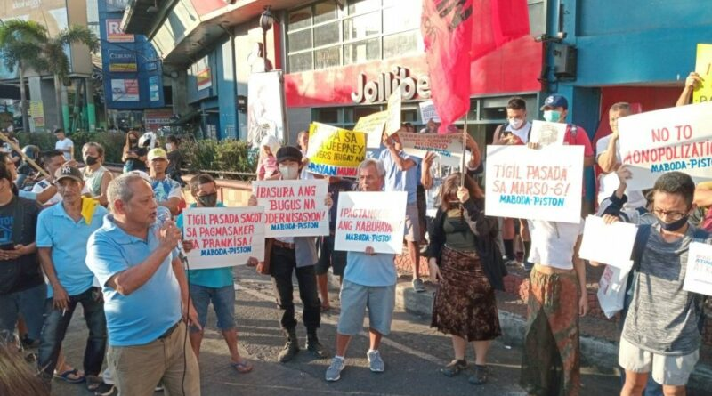
Marco Valbuena | Chief Information Officer | Communist Party Of ThePhilippines
March 6, 2023
Vice President Sara Duterte is so stuck in her anti-communist obsession thatshe refuses to acknowledge the real reasons why jeepney drivers and othertransport workers are staging protest actions. In saying the transport strikeis “communist-inspired” ang “pointless,” Sara Duterte is displaying the samepuerile attitude of her tyrant father who once told jeepney drivers “walaakong pakialam kung magutom kayo.” Her claim that the strike and protests are“pointless” proves she possesses not an iota of sympathy for the poor anddowntrodden masses.
Sara Duterte wants to railroad the anti-poor and anti-people Public UtilityVehicle Modernization Program (PUVMP) in behalf of the interests of bigbourgeois compradors and foreign capitalist suppliers.
In the face of rising protests of workers, students and other sectors, expectDuterte and her ilk of fascists to repeat such words as “communist-inspired,”“communist-directed”, “communist agitation” and so on, in an effort to obscurethe fact that the anti-people and pro-imperialist neoliberal economic measuresbeing carried out by the Marcos-Duterte regime, is worsening the economiccrisis, aggravating the socioeconomic conditions of the people and compellingthem to wage mass protests to defend their livelihood and interests.
In her obsession to link every word spoken and action taken by the people tothe CPP, Duterte is unwittingly complimenting the Communist Party of thePhilippines.
Source : https://philippinerevolution.nu/statements/on-remarks-of-vice-> president-duterte-saying-transport-strike-is-communist-inspired/
Author: DEM VOLKE DIENEN
Time: 2023-03-06T06:13:42+00:00
Images: ['Griechenland_Schwere_Kämpfe_nach_Zugkatastrophe_in_Tembi-1.jpg', 'Griechenland_Schwere_Kämpfe_nach_Zugkatastrophe_in_Tembi-2.jpg']
Tags: None
Category: None
57 Tote und hunderte Verletzte forderte die Zugkatastrophe in Griechenlandvergangene Woche. Eine Katastrophe, die weniger ein Ungluck, als ein Ergebnisder langjahrigen Sparpolitik in allen Bereichen des Landes ist. Wenn wir uberdiese Sparpolitik sprechen, ist aber auch die Rolle der EU und insbesonderedes deutschen Imperialismus nicht außer Acht zu lassen, der Griechenland voretwas mehr als 10 Jahren im Rahmen des EU-Rettungspakets mit schierunzumutbaren Maßnahmen uberzog, unter denen das griechische Volk immer weiterverelendet.
Schon seit Jahren gibt es einen lauten Aufschrei der Gewerkschaften, die immerwieder darauf hinwiesen, dass die Bahn und der offentliche Personenverkehrdramatisch unterfinanziert sind. So muss man sagen, dass eine solcheKatastrophe wie am vergangenen Dienstag vorhersehbar war. Gerade aufgrunddieses Fakts ist die Wut des griechischen Volkes nach der Zugkatastrophe vonTembi so groß. Taglich demonstrieren Massen in unterschiedlichen Stadten desLandes und fordern ein Ende der morderischen Sparpolitik, die von derRegierung von Kyriakos Mitsotakis weitergefuhrt wird.
Auf den Demonstrationen, an denen sich in Athen mehrfach Zehntausendebeteiligten, kam es in den letzten Tagen auch immer wieder zu schweren Kampfengegen die Polizei. So warfen Massen Steine und Molotowcocktails auf diePolizei, die mit Tranengas und Blendgranaten antwortete. Zahlreiche Personenauf beiden Seiten wurden verletzt.
Mit den Protesten wird einmal mehr deutlich, dass das griechische Volk dieaufgezwungene Sparpolitik satthat, die das Land seit beinahe 13 Jahrenbeutelt. Die sogenannte Staatsschuldenkrise wird in allen Bereichen auf dasgriechische Volk abgewalzt und das Volk wehrt sich dagegen. Das zeigt sichnicht erst in den aktuellen Protesten, sondern in zahlreichen Kampfen, die dasgriechische Volk in den vergangenen Jahren gefuhrt hat.

Author: Gabriel Artur
Description: Em mais um capítulo da criminalização da luta camponesa pela terra no Brasil, o velho Estado brasileiro, através da Polícia Civil (PC) de São Paulo, prendeu
Publish Time: 2023-03-06T15:21:41-03:00
Modified Time: 2023-03-07T15:48:17-03:00
Updated Time: 2023-03-07T15:48:17-03:00
Images: ['Ze-rainha-e-luciano-presos-768x470-1.jpg', 'printfriendly-pdf-email-button-md.png', 'image-8.png']
Section: Luta Pela Terra
Tags: ['Carnaval vermelho', 'Pontal do Paranapanema', 'Tomadas de terra']
Type: article

José Rainha e Luciano de Lima. Foto: Reprodução
Em mais um capítulo da criminalização da luta camponesa pela terra no Brasil,o velho Estado brasileiro, através da Polícia Civil (PC) de São Paulo, prendeuas lideranças camponesas José Rainha Júnior, o Zé Rainha, e Luciano de Lima,em São Paulo. As prisões políticas aconteceram no dia 4 de março, um mês apóso início da onda de ocupações dirigida pela Frente Nacional de Luta – Campo eCidade (FNL), que estremeceu o Brasil, o “Carnaval vermelho”. A “justiça”decidiu, durante audiência de custódia realizada na manhã do dia seguinte àprisão (05/03), em Presidente Venceslau (SP), mantê-los na prisão.
De acordo com as informações repassadas pela PC ao monopólio de imprensa G1,José Rainha Júnior foi detido em um lote onde reside, no Assentamento CheGuevara, em Mirante do Paranapanema (SP), enquanto a prisão de Luciano de Limaocorreu na Rodovia José Corrêa de Araújo, na divisa entre os estados de SãoPaulo e do Paraná, entre os municípios de Sandovalina (SP) e Jardim Olinda(PR).
A PC afirma que as lideranças são suspeitas de "extorsão", porém sem maioresinformações concretas sobre como teria se dado o suposto crime. Na nota, nãohá nenhuma menção à grilagem de terras públicas da União ou à atuaçãocriminosa de pistoleiros pagos porlatifundiários, que se apresentam comodonos das terras ocupadas por milhares de brasileiros e brasileiras nasúltimas semanas.
Cerca de 5.600 camponeses participaram do "Carnaval vermelho". Foto:Reprodução
O motivo verdadeiro das prisões dos dirigentes da FNL é a enorme mobilizaçãocamponesa que as precedeu. Somente no mês de fevereiro, 1,4 mil famíliascamponesas (cerca de 5.600 camponeses), ocuparam dezenas de latifúndios emAlagoas, São Paulo (na região do Pontal do Paranapanema), no Mato Grosso doSul e no Paraná.
O artigo intitulado “Sob chamado da FNL, camponeses ocupam latifúndios portodo país”, publicado por AND em fevereiro de2022, quando do “Carnaval vermelho” daquele ano, afirma: “A grande mobilizaçãoque resultou na tomada de latifúndios por todo país, vem de encontro com oanseio das massas de trabalhadores que, diante da colossal crise que lhe éimposta, é levada a compreender e buscar solucionar seus problemas,conquistando um pedaço de terra. Com isso, toma forma e se desenvolve acontradição que empurra os camponeses sem terra versus latifúndio, como parteda contradição fundamental de nossa sociedade, massas versus semifeudalidade(contradição nunca resolvida, mas sim fomentada pelo velho Estado).”.
No mesmo mês do “Carnaval vermelho”, 207 camponeses foram encontradossubmetidos a relações semifeudais na colheita da uva das vinícolaslatifundiárias Aurora, Cooperativa Garibaldi e Salton, em Bento Gonçalves, naserra gaúcha. O caso envolvendo o chamado “trabalho análogo à escravidão” foidenunciado pela primeira vez no dia 22/02, após dois trabalhadores fugirem. Oresponsável pela empresa terceirizada, Pedro Augusto de Oliveira Santana, de45 anos, chegou a ser preso, mas vai responder pelo crime em liberdade, poispagou fiança no valor irrisório de R$ 40 mil.
Já durante a própria jornada do “Carnaval vermelho”, os camponeses sofreram atentativa de criminalização de sua luta, além de enfrentarem os pistoleiros elatifundiários sedentos de sangue camponês. No sábado de carnaval (18/02), emPonta Grossa (PR), a Polícia Militar (PM) retirou as dezenas de famílias queocupavam a área abandonada pela Companhia de Habitação de Ponta Grossa(Prolar). As forças repressivas do velho Estado latifundiário-burocráticoreprimiram os camponeses com bombas de gás lacrimogêneo e ameaças de morte. Aofinal da operação, 13 integrantes da FNL, entre eles a liderança camponesaLeandro Dias, advogado coordenador da FNL em Ponta Grossa, foram levados à 13ªDivisão Policial de Ponta Grossa.
A FNL também denunciou que, em Japorã (MS), “um grupo de bolsonaristas seorganizaram a partir de redes sociais para atacar a ocupação de terrarealizada pelos militantes da FNL”. “O grupo que se concentrou comcaminhonetes e armados agrediu fisicamente de forma violenta companheiros daocupação e incendiaram os barracos e imóveis da propriedade”, prosseguiu aFNL. Nenhum dos reacionários foi preso.
Enquanto que, aos olhos do velho Estado latifundiário-burocrático, o crime dasvinícolas latifundiárias, dos pistoleiros à soldo do latifúndio e policiaisnão existe, a ponto que estejam todos soltos, o “crime” cometido por Zé Rainhae Luciano de Lima foi ter ousado lutar junto aos camponeses em busca de umpedaço de terra. Esta luta, por se chocar frontalmente contra o secularlatifúndio e todo o atual sistema de exploração e opressão, é combatida eperseguida pelas classes dominantes reacionárias.
Source: https://anovademocracia.com.br/velho-estado-prende-jose-rainha-e-luciano-de-lima-liderancas-da-fnl/
Author: Giovanna Maria
Description: Moradores da comunidade Kelson, no Complexo da Penha, zona norte do Rio de Janeiro, incendiaram uma base da Polícia Militar (PM) após o assassinato de um jovem estudante à queima-roupa.
Publish Time: 2023-03-06T15:57:28-03:00
Modified Time: 2023-03-07T14:52:38-03:00
Updated Time: 2023-03-07T14:52:38-03:00
Images: ['kelsons.jpg', 'printfriendly-pdf-email-button-md.png', 'kelsons-jovem-jogador-de-futebol.webp', '102274721-ri-rio-de-janeiro-rj-04-03-2023-alex-souza-araujo-santos-19-anos-morador-da-favela-kelson-1024x683.webp', 'pm.jpg', 'dados.webp']
Section: Nacional
Tags: ['penha', 'polícia', 'violência policial']
Type: article

Moradores do Complexo da Penha (RJ) incendeiam base da PM após assassinato de estudante. Foto: Reprodução
Moradores da comunidade Kelson, no Complexo da Penha, zona norte do Rio deJaneiro, incendiaram uma base da Polícia Militar (PM) após o assassinato de umjovem estudante à queima-roupa. Alex Souza Araújo Santos tinha 19 anos, eraestudante do 3° ano do ensino médio e jogava futebol no time de base dacomunidade. Alex Souza faleceu enquanto era levado por populares para oHospital Getúlio Vargas.
AlexSouza, de 19 anos, estudante e jogador de futebol, foi assassinado pelapolícia no Complexo da Penha. Fotos: Reprodução
Os moradores, revoltados, revidaram ao covarde assassinato atirando pedras nasviaturas da PM e fechando uma via da Avenida Brasil próxima à comunidade. Osmoradores foram reprimidos em sua justa revolta com tiros de arma de fogo ebombas de gás lacrimogêneo pelo Batalhão de Rondas Especiais e Controle deMultidão (RECOM) da PM assassina. Moradoras não se intimidaram com os tiros dapolícia e continuaram o protesto.
Após Jovem Ser Morto Na Favela Kelson’s, Moradores Botaram Fogo No Dpo> Dentro Da Comunidade! Clima Tenso Ainda Na Região, Polícias Grita Na> Comunidade Que a Favela Tá Vendida Pro (TCP)… Moradores Relatam, Que Após> Que. Reportagem Chegou, Os Polícias> pic.twitter.com/D2PMZLJQvc>> -- Favela News RJ (@FavelaNews_Rj) March 5,> 2023
Policiaisda RECOM reprimem moradores. Foto: Foto: Roberto Moreyra/ O Globo
Ao contrário do que alega a PM, o amigo de Alex, Luciano Santos, afirma quenão havia operação na comunidade durante o assassinato: “O moleque não eratraficante. Estava no 3º ano do Ensino Médio e jogava como meio de campo noGaláticos, o time de futebol da Kelson's. Sonhava em ser jogador profissional.O que aconteceu foi um absurdo”, afirmou Luciano em entrevista ao monopólio deimprensa Extra.
André Werneck, que mantém projeto social para crianças e adolescentes naKelson's e era treinador de Alex, contou o que aconteceu na hora da execução:“Quando ele saia do beco e viu os PMs se assustou e voltou. Um dos soldadosfoi atrás e atirou. O Igor, amigo dele, estava também com uma criança no colo.Colocaram três pessoas em risco. Se achava que ele era um suspeito deveria terdado um tiro para o alto, não fazer o que fez”, denunciou André.
Além disso, os moradores denunciam que a execução foi realizada com um tiropelas costas.
COMUNIDADE DA KELSON'S NA PENHA > > RELATOS DE UM MORADOR BALEADO> pic.twitter.com/5pdpokdntC>> -- Penha News RJ 2.0 (@PenhaNewsRJ) March 4,> 2023
Alex era o mais velho de uma família com três irmãos. Seu pai, Robson Araújodos Santos, de 41 anos, expressa vontade de lutar para que o que aconteceu comAlex não volte a acontecer com outros jovens: “Infelizmente, o que aconteceucom meu filho ocorre a todo momento na comunidade. Há inúmeros casos de gentebaleada à toa. Mas vou lutar para que isso não volte a acontecer.”
Alex, como jogador do sub-17, também passou pelo Macaé, Audax e Duque deCaxias. Além de estudar ele iria começar em alguns dias a trabalhar comoauxiliar de pedreiro com o tio.
Kelson- Penha circular > > Moradores colocaram fogo na cabine da PM, a comunidade está a mais de 6> meses com Caveirao e cabine 24 hrs na comunidade.> pic.twitter.com/2i9v8awc2I>> -- PAPØ DĒ FÄVELA💥 (@papodefavelaofc) March 4,> 2023
Exatos dois meses antes do assassinato de Alex, um protesto ocorreu naKelson’s, em 4 de janeiro, após um morador ter sido baleado e morto pela PM nacomunidade. Na ocasião, os moradores também interditaram uma faixa da AvenidaBrasil.
Protestona comunidade Kelson's em 4 de janeiro. Foto: Reprodução/ Extra
A desculpa dada pelos policiais foi a mesma para Alex, de que “os policiaisforam alvos de disparos e revidaram”. Nos dois casos, os policiais alegam quefoi encontrado na mochila das vítimas “armas, drogas e rádio comunicador”.Esses três itens são conhecidos popularmente como “kit bandido”, uma vez queos policiais o carregam consigo e implantam junto dos corpos de moradores paraforjar flagrante.
Além disso, denúncias de moradores afirmam que o caveirão percorre acomunidade diariamente há pelo menos seis meses, e que a base móvel da PolíciaMilitar fica estacionada permanentemente na comunidade.
Em 2022, a Rede de Observatórios da Segurança Pública analisou 21 mil “eventosviolentos” em sete estados e seus fatores causadores. No total, 55% doseventos analisados foram causados pelas polícias no estudo. No Rio de Janeiro,porém, os dados ultrapassaram esta marca, chegando a 67%.
Númerode mortes do relatório da Rede de Observatório de Segurança 2021/2022: RJviolento. Foto: Reprodução
Além disso, no período de 2007 a 2021, foram realizadas 17.929 operaçõespoliciais em favelas na região metropolitana do Rio, das quais 593 terminaramem chacinas, com um total de 2.374 civis mortos, de acordo com o relatórioChacinas Policiais, produzido pelo Grupo de Estudos dos Novos Ilegalismos daUniversidade Federal Fluminense (Geni/UFF).
As operações realizadas diariamente em centenas de favelas da cidade do Rio deJaneiro, assim como as bases policiais da Unidade de Polícia Pacificadora(UPP) implantadas nas favelas enquanto militarização permanente do território,são fruto da guerra civil reacionária contra o povo em todo o país.
A cidade do Rio de Janeiro conta com quase 7 milhões de habitantes, dos quais22% moram em favelas, sendo o maior percentual de todo o Brasil, em dadossubestimados e desatualizados do Instituto Brasileiro de Geografia eEstatística (IBGE) de 2010. Em números referentes ao estado, no primeirotrimestre de 2022, o Rio de Janeiro era um dos três estados com maisdesemprego no Brasil. Além disso, aproximadamente 35% dos fluminenses não têmsistema de tratamento de esgoto. Diante da falta de direitos agonizante a queestão submetidas as massas fluminenses, o velho Estado brasileiro,particularmente no estado do Rio, aplica sua guerra reacionária à ferro e fogocontra o povo, para que este não se utilize da única forma disponível paraexigir e conquistar seus direitos pisoteados: a rebelião.
Source: https://anovademocracia.com.br/rj-moradores-incendeiam-base-da-pm-apos-assassinato-de-estudante/
Author: Postado por
Time: 2023-03-06T17:05:00-03:00
Images: ['LIBERDADE%20IMEDIATA%20PARA%20JOS%C3%89%20RAINHA%20E%20LUCIANO%20de%20lima%20(1).png']
.png)
NOTA DE SOLIDARIEDADE: LIBERDADE IMEDIATA PARA JOSÉ RAINHA E LUCIANO DELIMA! LUTAR NÃO É CRIME
Nós do Centro Brasileiro de Solidariedade aos Povos - CEBRASPO e AssociaçãoBrasileira dos Advogados do Povo - ABRAPO, expressamos nossa irrestritasolidariedade aos companheiros José Rainha e Luciano de Lima e a FrenteNacional de Lutas - FNL por suas prisões arbitrárias efetuadas no dia 05 demarço deste ano.
Os companheiros foram presos pela Policia Civil de São Paulo num ato de clararetaliação política pela luta que o movimento vem travando para resolver asituação de sobrevivência de milhares de famílias pela posse digna de umpedaço de terra.
Não é justo que existam mais de 125 milhões de brasileiros com algumainsegurança alimentar, sendo mais de 33 milhões com insegurança alimentarsevera, terras monopolizadas pelo latifúndio exportador de produtos quesomente enriquece uma minoria não pagando impostos nem suas dividas com bancosestatais.
O DNA dos chamados empreendedores do agronegócio de hoje está manchado desangue de camponeses, índígenas e quilombolas pela ocupação e grilagem de suasterras e terras públicas. Mas hoje, se acham no direito de criminalizar,atacar com bandos de jagunços e utilizar seus prepostos na administraçãopública para combater aqueles que lutam por fazer valer o texto constitucionalda função social da terra no Brasil.
Isso se vê no Pontal do Paranapanema (SP) onde houve a prisão dos dirigentesda FNL e onde terras públicas são invadidas. Segundo informe da FNL, essedebate (da titularidade das terras) já foi vencido em decisão proferida pelaMinistra Carmen Lúcia transitada e julgada e recentemente publicada pelo STF.Terras públicas estas que o agro defende como sua, a base da bala, expulsando,ferindo e matando se necessário os trabalhadores que ousam renvindicá-las.
O abandono da política de reforma agrária não gerará "paz no campo". Ela geralutas como essa da Frente Nacional de Lutas, pois o que move as famílias queintegram esses movimentos é a necessidade.
Nós, que temos como objetivo defender o direito do povo a lutar pelos seusdireitos vemos com extrema preocupação e divulgaremos nacional einternacionalmente que o brasil fabrica presos políticos, pois não garante queas famílias sejam assentadas e trabalhem dignamente pela sua sobrevivência,enquanto as terras são utilizadas para usufruto de poucos milionários, sãoenvenenadas pelo uso intensivo de agrotóxicos e muitas vezes abandonadas peloesgotamento do seu uso predatório. E responde a mobilização, que é um direitodo povo, com polícia e cadeia. Fica vexatório para um país que se dizdemocrático ver suas instituições como o judiciário e a polícia servirem decriados de mesa do latifúndio.
Conclamamos a todas as pessoas e organizações democráticas que denunciem eprotestem contra estas prisões.
Exigimos liberdade para José Rainha e Luciano Lima, presos políticos dogoverno Tarcísio de Freitas, notório defensor das soluções de extrema-direitapara a crise social no Brasil, ou seja, tratá-las através da violência deEstado.
LIBERDADE PARA JOSÉ RAINHA E LUCIANO LIMA!
ABAIXO A CRIMINALIZAÇÃO DA LUTA PELA TERRA!
TERRA PARA QUEM NELA VIVE E TRABALHA!
Source: https://cebraspo.blogspot.com/2023/03/nota-de-solidariedade-liberdade.html
Author: SolRojista (Person)
Publisher: Blogger (Organization)
Description: Internacional. Al haberse cumplido un año del inicio de la guerra de ocupación de Rusia en Ucrania, Periódico Mural nos comparte...
Publish Time: 2023-03-06T17:30:00-08:00
Modified Time: 2023-03-06T17:31:28-08:00
Images: ['xjh56jsr5gle2jitzftysefugi.webp', 'JericoFeb2023.jpg', 'ColoMex.jpg', 'asambleaa-1160x700.jpg', '334811316_3089739487992818_5309960444551371006_n.jpg']

Internacional. Al haberse cumplido un año del inicio de la guerra deocupación de Rusia en Ucrania, Periódico Mural nos comparte un interesanteartículo donde se invita a la reflexión a partir del análisis general de lasituación, ampliando el panorama no solamente a la intervención militar delimperialismo ruso o al respaldo injerencista del imperialismo yanqui y deotras potencias de Europa, sino también analizando la situación desde el golpereaccionario en el año 2014 cuando el fascismo tomó el poder del Estado; "Estamos hablando de un año de guerra formal desde la intervención rusa, peronueve años de guerra civil reaccionaria desde el golpe de Estado". Paranuestros lectores compartimos laliga con esa nota que merece nuestra atención.

Palestina. Los crímenes contra el pueblo continúan en manos de la bestiafascista-sionista de Israel. Según denunció la Media Luna Roja (equivalente ala Cruz Roja), un joven palestino resultó herido por arma de fuego en medio deun tiroteo desatado por el ejército israelí en Jericó, Cisjordania. En ellugar los paramédicos trataron de ayudar al herido aunque el ejército sionistalo impedía, "tropas israelíes apuntaron sus armas contra los paramédicos, yamenazándoles, sólo permitieron que atendieran al herido sin que lo movierandel sitio donde se encontraba y sin trasladarlo a un hospital …las fuerzas deocupación le quitaron los dispositivos de oxígeno, detuvieron el proceso dereanimación cardiopulmonar necesario para salvarle la vida y lo trasladaron ala fuerza a un jeep militar y no a una ambulancia, lo que provocó la muertedel joven lesionado". _Un día después, en el mismo lugar, tres adolescentesfueron atacados por el mismo ejército de ocupación, en el lugar fallecióMohammed Salim de 15 años y otros dos muchachos resultaron lesionados por armade fuego. La guerra de ocupación de Israel en territorio palestino parece notener fin, el respaldo del imperialismo yanqui fortalece la maquinariabelicista del sionismo criminal. El primer ministro de Israel, BenjamínNetanyahu ha justificado sus crímenes contra el pueblo palestinorecientemente: "Profundizar en nuestras raíces, profundizar en losasentamientos y ampliar nuestro dominio sobre nuestra patria. Esta es labatalla en la que nos encontramos"_. ¡Fuera sionistas de Palestina!

Colombia/México. Hace unos días terminaron los trabajos conjuntos quedistintos pueblos en resistencia del México profundo sostuvimos con compañerosdel pueblo Nasa del Norte del Cauca, Colombia. Durante varios días y endistintas actividades, las y los compañeros de la Asociación de CabildosIndígenas del Norte del Cauca, Consejo Regional Indígena del Cauca (CRI), Plande Vida Sat FciNxi Kiwe del Norte del Cauca y Plan de Vida Proyecto Nasa delNorte del Cauca estuvieron compartiendo con organizaciones, colectivos ypueblos en resistencia de México, particularmente de los estados de Nayarit,Michoacán y Oaxaca. En este recorrido se compartieron experiencias sobre losprocesos de lucha para la defensa de los derechos territoriales de los pueblosoriginarios y se compartieron propuestas para construir formas de vidadistintas a la actual, se habló del incremento de la violencia contra los ylas defensoras de la Madre Tierra, en particular las indignantes agresionesque sufren las mujeres donde sigue privando la impunidad. Se denunció lacreciente militarización de diferentes regiones de México y la violencia quesufren los pueblos originarios de Colombia. La articulación desde abajo espara los pueblos una herramienta fundamental para desplegar la luchaorganizada y la acción común.


México. Este fin de semana, en diferentes estados de la república, se hanrealizado tres asambleas muy importantes. El sábado 4 de marzo sesionó laAsamblea Nacional Popular, en Ayotzinapa, Guerrero con la presencia de decenasde organizaciones de corte anticapitalista y anti electorero que mantenemosviva la exigencia de justicia, presentación con vida para todas las víctimasdel terrorismo de Estado, así como castigo a los culpables . Paralelamente enla CDMx sesionó la asamblea anual de los compañeros de la Asamblea General deTrabajadores que sigue destacando como un contingente clasista de lostrabajadores al servicio del Estado en la capital del país; en ambos eventosuna delegación SolRojista estuvo presente cumpliendo con las tareas deconsolidar la unidad de principios y la unidad en la acción hacia el FrenteÚnico de masas contra el régimen. Finalmente los días 4 y 5 de marzo enTehuacán, Puebla sesionó la asamblea nacional del Congreso Nacional Indígena,donde los compañeros de MAIZ han sido anfitriones y a donde se llevó unmensaje del Frente de Organizaciones Oaxaqueñas (FORO) saludando los trabajosdel CNI y denunciando la situación de violencia, represión y hostigamiento quese vive en Oaxaca ante la imposición del Corredor Interoceánico del Istmo deTehuantepec (CIIT) que está militarizando el territorio, criminalizando a lospueblos y las organizaciones democráticas, y desplegando la embestidaparamilitar del latifundio. Esperamos pronto compartir con nuestros lectoreslos resolutivos de estos tres importantes eventos democráticos.
Source: http://solrojista.blogspot.com/2023/03/breves-iniciando-semana.html
Author: maoist
Description: di Rete 26 Febbraio Numerosa e sdegnata partecipazione sabato pomeriggio alla manifestazione presso la Prefettura...
Time: 2023-03-06T19:35:00+01:00
Images: ['Cutro-spiaggia-720x300.jpg']

Numerosa e sdegnata partecipazione sabato pomeriggio alla manifestazionepresso la Prefettura di Crotone. Una folla partecipe, indignata ed unita nelchiedere verità e giustizia per i morti della strage di Steccato di Cutro eper dire basta alle politiche discriminatorie che generano tutto questo.
Superstiti, familiari, soccorritori, volontari e associazioni, costituitisinella Rete 26 Febbraio hanno preso finalmente parola denunciando lo stato diestremo abbandono a cui sono sottoposti.
Ringraziamo tutti i partecipanti, i tantissimi e le tantissime che da Milanoalla Sicilia sono scese in piazza contro ogni disumanità e in solidarietà coni migranti.
La strage di Cutro è solo l'ultima di una lunga serie. Negli ultimi 10 anni lemorti in mare sono state più di 25mila e non possiamo lasciare che le nostrecoste e il nostro mare diventino un vero e proprio cimitero per chi è cerca unfuturo migliore scappando da guerre, dittature, povertà.
Siamo calabresi, sappiamo bene cosa voglia dire lasciare la propria terra esiamo consapevoli che le politiche criminali che abbandonano in mare imigranti sono le stesse politiche che ci abbandonano sulla terraferma.Comunità locali e migranti, volontari, associazioni, terzo settore si stannofacendo carico, nell'assenza delle istituzioni, nel fornire supporto aisuperstiti e ai familiari delle vittime.
A tutt'oggi, nonostante la visita del Presidente della Repubblica e lesistemazioni tardive trovate alla Regione Calabria, non ci sono informazionicerte sulle pratiche relative al rimpatrio delle salme e ai ricongiungimentifamiliari. È dunque proprio dalla Calabria che come Rete 26 Febbraiochiamiamo a raccolta movimenti, singoli, sindacati, associazioni di tuttaItalia per una manifestazione nazionale sabato 11 marzo a Crotone.
Per chiedere verità e giustizia sulla strage di Cutro e su tutte le stragi dimigranti.
Per dire no alle passerelle del governo e di chi ha costruito il suo consensocriminalizzando i migranti e i salvataggi in mare, usando parole disumane ecolpevolizzando le vittime.
Per fermare la criminalizzazione delle ONG e dei salvataggi in mare.
Per la creazione di canali di ingresso legali e sicuri.
Per la fine di ogni politica discriminatoria verso i migranti.
Rete 26 Febbraio
Source: https://proletaricomunisti.blogspot.com/2023/03/pc-6-marzo-basta-morti-nel-mediterraneo.html
Author: Tjen Folket Media
Description: Forlaget Røde Fane har oversatt erklæringen som utgjør det ideologiske og politiske grunnlaget for Internasjonalt Kommunistisk Forbund. Vi oppfordrer alle lesere til å studere den og anvende den so…
Publish Time: 2023-03-06T23:14:04+00:00
Modified Time: 2023-03-07T19:39:01+00:00
Images: ['ikf.png']
Tags: None
Category: 'Uttalelser'
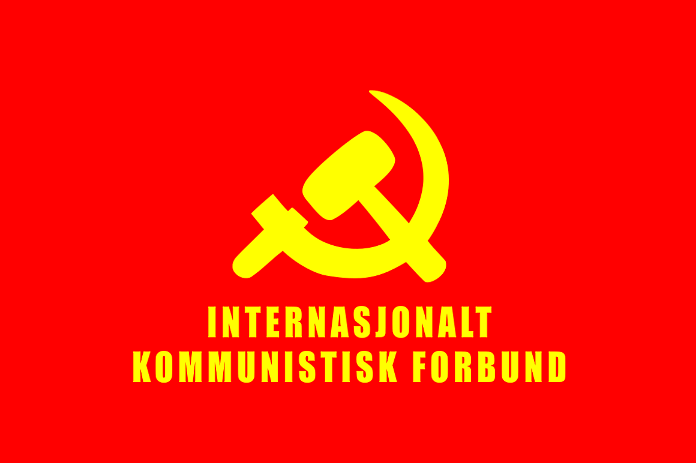
Av redaksjonen i Tjen Folket Media.
Forlaget Røde Fane har oversatt erklæringen som utgjør det ideologiske ogpolitiske grunnlaget for Internasjonalt Kommunistisk Forbund. Vi oppfordreralle lesere til å studere den og anvende den som inspirasjon og veiledning.
Kameratene i Kommunistisk Internasjonale (ci-ic.org) har offentliggjorterklæringen på flere språk, sammen med nyheten om den seierrike forentemaoistiske internasjonale konferansen, 26. desember 2022:
Innhold
Vi hilser den store seieren som er vunnet gjennom den første forentemaoistiske internasjonale konferansen og stiftelsen av InternasjonaltKommunistisk Forbund, IKF. Dette er en stor seier for det internasjonaleproletariatet og verdens undertrykte folk, for den internasjonalekommunistiske bevegelsen, og for formann Gonzalo, vår tids største marxist-leninist-maoist.
Denne hendelsen innebærer at kampanjen for maoismen, innledet av PerusKommunistiske Parti i 1982, er i ferd med å kulminere, ved at maoismenetableres som eneste kommando og veiledning for den proletariskeverdensrevolusjonen. Dette er et hardt slag mot imperialismen, reaksjonen ogrevisjonismen.
Denne seieren er ideologisk, politisk og organisatorisk, samt moralsk ogmilitær. Den har bokstavelig talt kostet blod, og det har tatt fire tiår å nåfrem til dette vendepunktet. Vi erklærer at vi tar fast stilling for dettedokumentet, som et grunnlag for å etablere en politisk generallinje for heleden internasjonale kommunistiske bevegelsen, som prinsipper for InternasjonaltKommunistisk Forbund, og som en veiledning og inspirasjon for alle sanneproletariske revolusjonære. Vi stadfester at marxistene forener seg, og atrevisjonistene splitter.
Vi står fullt og helt ansvarlig for alle eventuelle feil og mangler ioversettelsen. Vi har laget et tillegg som blant annet forklarer noen avfremmedordene i teksten.
Forlaget Røde Fane Mars 2023
Proletarer i alle land, foren dere!
Som kommunister er vi sønner og døtre av en unik klasse i verden, detinternasjonale proletariatet, som har en ubrytelig sammensveiset skjebne:kommunismen, som enten alle eller ingen når frem til. Derfor holder vi fulltog fast på den proletariske internasjonalismen som et grunnleggende prinsippfor IKB, ved å anvende vår mektige og udødelige parole etablert i Detkommunistiske partis manifest av Marx og Engels: «Proletarer i alle land,foren dere!»
Kommunismen er historiens ubønnhørlige mål. Menneskeheten marsjerer mot den ogdette uslokkelige målet vil nås uansett hvilke omstendigheter vi står overfori dag.
Kommunistenes hovedoppgave er å omforme og utvikle seg som et marxist-leninist-maoistisk kommunistparti for å gjøre revolusjon for å erobre makten –som vi må utvikle i henhold til hvert lands særegenheter – som en del av og itjeneste for den proletariske verdensrevolusjonen for å nå kommunismen.Eksistensen av et kommunistisk parti er avgjørende for å gjøre proletariskrevolusjon i den nye æraen vi befinner oss i – som ble åpnet med den storesosialistiske oktoberrevolusjonen i 1917. Uten et marxist-leninist-maoistiskkommunistparti kan ikke revolusjonen finne sted og langt mindre utvikles for åerobre og forsvare den nye makta.
Den internasjonale kommunistiske bevegelsen er fortroppen til detinternasjonale proletariatet. Hovedproblemet for IKB er fortsatt at styrkeneer splittet, og hovedfaren er revisjonismen. Dens enhet er bygget på grunnlagav og veiledet av marxismen, i dag marxismen-leninismen-maoismen, og densanvendelse på revolusjonens konkrete praksis i hvert land og påverdensrevolusjons prosess.
Formann Mao lærte oss at: «Historien til den internasjonale kommunistiskebevegelsen viser oss at proletarisk enhet konsolideres og utvikles i kampenmot opportunismen, revisjonismen og splittelsesmakeri». Den nåværendesplittelsen har sin opprinnelse i den kapitalistiske restaureringen iSovjetunionen og i folkets Kina, og har blitt forverret av fremveksten av denrevisjonistiske og kapitulasjonistiske høyreopportunistiske linja (HOL R&K) iPeru, «prachandismen» sitt revisjonistiske forræderi i Nepal og den«avakianistiske» likvidasjonistiske revisjonismen i den RevolusjonæreInternasjonalistiske Bevegelsen (RIM), i tillegg til andre uttrykk for dennenye revisjonismen i forskjellige partier og organisasjoner. Splittelsesmakeriog den påfølgende splittelsen er resultatet av den nye revisjonismens svik motmarxismens grunnleggende prinsipper i den proletariske bevegelsen.
Dagens demarkasjonslinje mellom marxisme og revisjonisme består av: 1) åanerkjenne eller ikke anerkjenne maoismen som det tredje, nye og høyerestadiet av marxismen, og nødvendigheten av å bekjempe revisjonismen og allopportunisme; 2) å anerkjenne eller ikke anerkjenne allmektigheten avrevolusjonær vold for å gjøre revolusjon i hver av sine egne land; 3) åanerkjenne eller ikke anerkjenne nødvendigheten av å rive det gamlestatsapparatet og erstatte borgerskapets diktatur med proletariatets diktatur;4) å anerkjenne eller ikke anerkjenne nødvendigheten av proletariatetsrevolusjonære parti. 5) å anerkjenne eller ikke anerkjenne nødvendigheten avproletarisk internasjonalisme.
IKB kan ikke gjøre et eneste skritt mot gjenforening uten å bekjemperevisjonisme og all opportunisme ufravikelig og uatskillelig fra kampen motimperialismen og all reaksjon. Dette er grunnen til at vi baserer oss påprinsippet om at «tolinjekampen er det som driver partiets utviklingframover» , som er avgjørende for å formulere og forsvare den rødeproletariske linjen og for å bekjempe de andre ikke-proletariske linjene, medandre ord, for å holde partiet rødt.
Den allmenne kontrarevolusjonære offensiven som ble sluppet løs på begynnelsenav 90-tallet i forrige århundre – hovedsakelig av Yankee-imperialismen – blirbeseiret av den marxist-leninist-maoistiske revolusjonære motoffensivengjennom folkekrigene, kampene for nasjonal frigjøring og kampene utviklet avproletariatet og de undertrykte folkene i verden. Vi hilser de heltemodigefolkekrigene i India, Peru, Tyrkia og Filippinene og de væpna nasjonalefrigjøringskampene.
Klassekampen i imperalismens og den proletariske verdensrevolusjonens epoke –epoken vi befinner oss i, epoken av allmenn krise, hvor imperialismen feiesvekk – følger logikken til folket, etablert av formann Mao Zedong1, somtilsier at det ikke finnes noe definitivt nederlag for proletariatet. Dermedkan ikke de kapitalistiske restaurasjonene i Sovjetunionen (1956) og i Kina(1976) stoppe det internasjonale proletariatets revolusjonære marsj på sin veifor å til slutt erobre makten. Disse nederlagene er kun øyeblikk i utviklingenav motsigelsen mellom revolusjon og kontrarevolusjon, som vi trekker lærdommerfra for å forhindre restaurasjon i fremtiden. De få tiårene med proletariatetsdiktatur, som begynte konstruksjonen av sosialismen i mer enn en tredjedel avverden, skapte de største sosiale transformasjonene og erobringene for massenei menneskets historie, som aldri kunne oppnås før dette.
Den sosialimperialistiske Sovjetunionens fall på begynnelsen av 1990-talletrepresenterte ikke marxismens eller sosialismens nederlag, men bankerotten tilden råtnende revisjonismen og sosialimperialismen. Marxismen, i dag marxismen-leninismen-maoismen, er den mest komplette, progressive og rasjonelledoktrinen i menneskehetens historie. Den representerer det nye fordi den erverdensbildet, ideologien, til den siste og mest avanserte klassen ihistorien: proletariatet. Det er en klasse som er bevisst på sin historiskerolle som kapitalismens og følgelig hele klassesamfunnets banemann. Maoismenstår i motstrid til all dekadent og foreldet borgerlig ideologi og densrevisjonistiske avvik.
I løpet av mer enn 170 år, med utgangspunkt i Det kommunistiske partismanifest i 1848, har ideologien til proletariatet oppstått og utviklet seg ismeltedigelen av klassekamp i tre stadier: 1) marxisme, 2) marxisme-leninismeog 3) marxisme-leninisme-maoisme. Maoisme er det internasjonale proletariatetsallmektige vitenskapelige ideologi, allmektig fordi den er sann, det tredje,nye og høyere stadiet av marxismen. Den er marxismen i dag, som vi reiser,forsvarer og hovedsakelig anvender.
Den nye revisjonismen til ROL i Peru, den såkalte «prachandaismen» og«avakianismen», osv., opererer innenfor den internasjonale proletariskebevegelsen som en del av den allmenne kontrarevolusjonære offensiven, som enanti-maoistisk motstrøm, som forsøker å holde den proletariskeverdensrevolusjonen nede. Den nye revisjonismen negerer marxismen, partiet,sosialismen og proletariatets diktatur. Fokus for angrepene deres sentreresimidlertid i negasjonen av folkekrigen som et essensielt og uatskilleligspørsmål i maoismen.
Det grunnleggende i maoismen er makt, med andre ord makt til proletariatet,makt til proletariatets diktatur, makt basert på væpnede styrker ledet avkommunistpartiet. For å spesifisere: 1) makt under ledelse av proletariatet iden demokratiske revolusjonen, 2) makt til proletariatets diktatur i densosialistiske revolusjonen og de påfølgende kulturrevolusjonene, 3) maktbasert på væpnene styrker ledet av kommunistpartiet, erobret og forsvartgjennom folkekrig.
Formann Mao etablerte verdensrevolusjonens strategi og taktikk. Utviklingen avverdensrevolusjonen er det hovedsakelige for å forhindre imperialistiskverdenskrig, og, hvis den bryter ut, må vi kommunister stå imot den medrevolusjonær verdenskrig. Dette krever at vi leder folkekriger mot deimperialistiske aggresjonskrigene mot de undertrykte nasjonene i Asia, Afrika,Latin-Amerika og til og med Europa. Selv uten den imperialistiske aggresjonen,må vi lede folkekrig for å gjøre revolusjon, spredt utover land ogkontinenter, til vi avanserer videre mot verdensrevolusjonen, som vi vil feieimperialismen og reaksjonen bort fra jordens overflate. Dermed faller det påoss å utvikle verdensrevolusjonen gjennom revolusjonær krig, og dens grunnlager de undertrykte nasjonene.
Derfor er det grunnleggende aspektet ved maoismen makt. Folkekrig og makt tilklassen er en essensiell og uatskillelig del av maoismen, av proletariatetspolitiske og militære konsept, makt erobret og forsvart av en væpnet styrkeledet av kommunistpartiet.
Den revolusjonære krigen, folkekrigen, er den overlegne formen for kamp, oggjennom den blir revolusjonens grunnleggende problemer løst. Det er denmilitære strategien som svarer til den politiske strategien (erobring avmakten), for å forandre samfunnet til fordel for klassen og folket. Det erhovedformen for kamp, og folkehæren er hovedformen for organisasjon, en hær aven ny type som kjemper, mobiliserer2, og produserer. Folkekrig er masseneskrig ledet av kommunistpartiet, for å erobre og forsvare den nye makten forproletariatet.
For å føre folkekrig er det nødvendig å ha fire grunnleggende spørsmål itankene: 1) proletariatets ideologi, marxismen-leninismen-maoismen, anvendt påden konkrete praksisen og særegenhetene til revolusjonen i hvert land, væreseg undertrykte land eller imperialistiske land, 2) nødvendigheten av atkommunistpartiet leder folkekrigen, 3) spesifikasjon av den politiskestrategien for dens vei, 4) baseområder. Den nye makten eller Front–Ny stat,som er dannet i baseområdene, er kjernen i folkekrigen.
For å etablere baseområder etablerte formann Mao tre grunnleggendeforutsetninger: 1) å ha væpnede styrker, 2) å nedkjempe fienden, 3) åmobilisere massene. Det vil si å utvikle geriljakrigføring for å utslettefiendens levende krefter, og slik skape et maktvakuum for å etablere,konstruere og forsvare den nye makten, å ødelegge de gamleproduksjonsforholdene og å bygge nye. Herfra utvikles motsigelsen ny makt/nystat mot gammel stat, gjennom ulike øyeblikk av restaurasjon ogkontrarestaurasjon, i tråd med krigens fluiditet.
Imperialismen er det høyeste og siste stadiet av kapitalismen, som ermonopolistisk, parasittisk, råtnende og døende. Den er i sin allmenne og sistekrise, og på grunn av denne situasjonen blir de uunngåelige sykliske krisenedypere og i økende grad forverret. Dette er grunnen til at hver nye krisestarter fra et lavere punkt enn tidligere. Den er bare der for å bli feid bortav verdensrevolusjonen.
Imperialisme er tendensen til reaksjon og krig over hele linjen. Imperialismenog verdensreaksjonen vil gå under midt i komplekse kriger av alle slag. De vilbli feid bort fra jordens overflate med revolusjon, og sosialismen vil oppstå.Lenin slo fast at imperialismen er en «koloss på leirføtter», og formannMao sa at strategisk må vi forakte imperialismen fullstendig, men taktisk måvi ta den på alvor.
Mao etablerte sin store tese: «De neste femti til om lag hundre åra fra nåav kommer til å bli en stor epoke med grunnleggende endringer avsamfunnssystemet over hele verden, en omveltningsepoke uten like i noentidligere historisk periode. Vi lever i en slik epoke og må være forberedt påå ta del i veldige kamper, som i forma vil ha mange trekk som er forskjelligefra trekka til kampene før i tida.» (Mao Zedong, «Tale på en utvidaarbeidskonferanse sammenkalt av sentralkomiteen i Kinas Kommunistiske Parti»).
Den proletariske verdensrevolusjon som prosess, som vi utvikler oss innenfor idenne perioden, er den hvor imperialismen og verdensreaksjonen vil bli feidvekk fra jordens overflate. Dermed har revolusjon blitt den historiske ogpolitiske hovedtendensen i dagens verden.
Alle de grunnleggende motsetningene i denne epoken skjerpes, hvorhovedmotsigelsen er den mellom undertrykte nasjoner og imperialismen. Deobjektive forholdene har aldri før vært så modne for revolusjon. Utviklingenav de subjektive kreftene går fremover, knuser den avtagende allmennekontrarevolusjonære offensiven, og knuser pessimismen og kapitulasjonismen somrevisjonismen fremmer og sprer. Forutsetningene for revolusjon er gunstigerefor hver dag som går.
Å utvikle den proletariske verdensrevolusjonen krever flere folkekriger. Deter nødvendig å konstituere eller rekonstituere kommunistiske partier, ihenhold til hvert enkelt tilfelle, i alle land, ved å anvende Lenins lære«gå til de dypeste og breieste massene» , «å utdanne dem i revolusjonærvold» i praksis, og «rydde unna den kolossale søppelhaugen» ved åuforsonlig bekjempe opportunismen og revisjonismen.
Denne internasjonale konferansen og den nye organisasjonen som er født i dennehandlingen er seire for det internasjonale proletariatet og et hardt slag motden allmenne kontrarevolusjonære offensiven til imperialismen ogverdensreaksjonen, så vel som mot all revisjonisme og opportunisme.
Den nye internasjonale organisasjonen er et senter for ideologisk, politisk ogorganisatorisk koordinering, basert på demokratisk sentralisme og å løseproblemer gjennom gjensidig og kontinuerlig konsultasjon mellom partiene ogorganisasjonene den består av, og den vil utvide denne metoden til å omfattealle utenfor, som også deltar med de samme prinsippene og formålene. Oppgaventil den nye internasjonale organisasjonen er å kjempe for å tvinge gjennommaoismen som eneste kommando og veiledning for den proletariskeverdensrevolusjonen, i tjeneste for konstituering eller rekonstituering avmarxist-leninist-maoistiske kommunistiske partier (den forsinkede strategiskeoppgaven), og tjene til å initiere, utvikle og koordinere folkekriger i heleverden med sikte på å rekonstituere Den kommunistiske internasjonalen.
Gjennom å anvende marxismen-leninismen-maoismen på revolusjonens konkretepraksis i hvert enkelt land og på verdensrevolusjonen, legger vi frem følgendegrunnlag for etablering og utvikling av en politisk generallinje for deninternasjonale kommunistiske bevegelsen:
Med imperialismens fremvekst ble verden delt mellom en håndfull undertrykkendenasjoner på den ene siden og et stort antall undertrykte nasjoner på den andensiden, hvilket modnet betingelsene for verdensrevolusjonen.
Den store sosialistiske oktoberrevolusjonens triumf i 1917, ledet av den storeLenin og bolsjevikpartiet, markerte en ekstraordinær milepæl iverdenshistorien. Den var avslutningen av den borgerlige verdensrevolusjonenog åpnet den nye æraen, hvor proletariatet som klasse tar på seg å ødeleggeimperialismen, byråkratkapitalismen og halvføydalismen: imperialismen og denproletariske verdensrevolusjonens æra. Det var mange revolusjoner før denstore oktoberrevolusjonen, og hver av dem ga en ny impuls til samfunnet. Disserevolusjonene erstattet imidlertid bare et utbyttersystem med et annet.
Den store sosialistiske oktoberrevolusjonen (SSO) var den første revolusjonenfor å etablere et samfunn fritt for utbytting og undertrykking, et klasseløstsamfunn. Den sosialistiske oktoberrevolusjonen representerte et radikaltvendepunkt i menneskehetens historie. Den åpnet en ny æra på den lange oglysende veien som fører til sosialismen og kommunismen.
SSO fremmet revolusjonær vold som et uunnværlig våpen for å omforme heleverden. Lenin sa: «Med oktoberrevolusjonen … oppnådde den revolusjonærevolden en strålende suksess». Idet vi tar opp det marxistiske prinsippet omrevolusjonær vold som allmenngyldig lov, stadfester vi oss selv igjen i atformann Mao har etablert at «den politiske makt ligger i geværet» , og at«vi er tilhengere av den revolusjonære krigens allmakt».
For å forstå verden i denne nye æraen må vi se at fire grunnleggendemotsigelser uttrykker seg: 1) motsigelsen mellom kapitalisme og sosialisme,motsigelsen mellom de to radikalt forskjellige systemene, som består gjennomhele denne perioden, og vil være en av de siste til å bli løst – den vilvedvare selv etter maktovertakelsen; 2) motsigelsen mellom borgerskapet ogproletariatet, en motsigelse mellom to motsatte klasser, som også vil vedvareetter maktovertakelsen, som viser seg i forskjellige ideologiske, politiske ogøkonomiske former, inntil den oppløses når vi går inn i kommunismen; 3) deinter-imperialistiske motsigelsene – motsigelser mellom imperialistene omverdenshegemoniet – mellom supermaktene, mellom supermaktene og de øvrigeimperialistiske maktene, og de imperialistiske maktene seg imellom; 4)motsigelsen mellom de undertrykte nasjonene og imperialismen, kampen for deundertrykte nasjonenes frigjøring gjennom ødeleggelsen av imperialismen ogreaksjonen – den historisk viktigste motsetningen under hele imperialismensæra, selv om enhver av de fire grunnleggende motsigelsene kan blihovedmotsigelsen i henhold til særegne forhold i klassekampen, vil denhistorisk hovedsakelige motsigelsen uttrykke seg slik på nytt, helt til denløses fullstendig.
Vi, marxist-leninist-maoistene, har som perspektiv at vi må gjennomføre tretyper revolusjoner for å nå vårt endelige mål, kommunismen: 1) demokratiskrevolusjon, den borgerlige revolusjonen av en ny type: under ledelse avproletariatet i de tilbakeliggende landene, for å etablere proletariatets,bøndenes og småborgerskapets, og – under visse forutsetninger –mellomborgerskapets, felles diktatur, hele tiden under proletariatetshegemoni, representert ved sitt kommunistiske parti; 2) sosialistiskrevolusjon, i de imperialistiske landene, som etablerer proletariatetsdiktatur; 3) kulturrevolusjonene, som utføres for å fortsette revolusjonenunder proletariatets diktatur, for å undertrykke og eliminere enhver fremvekstav kapitalisme og for å bekjempe forsøkene på kapitalistisk restaurasjon, somtjener til å styrke proletariatets diktatur og å marsjere frem motkommunismen.
Formann Mao lærte oss det «At det gamle blir fortrengt av det nye, er enallmenn, evig og uforanderlig lov i universet». At klasser ikke kan ta maktapå et eneste forsøk, i kampen for å etablere det nye sosiale systemet, er enlov for historien. Det kan heller ikke være annerledes for proletariatet.Restaurasjonen av kapitalismen i Sovjetunionen (1956) og i Kina (1976) er endel av motsigelsen mellom sosialisme og kapitalisme, den historiske kampen forat det nye skal fortrenge det gamle.
Lenin advarte om at utbytterklassene aldri vil gi opp etter å ha blittnedkjempet og ekspropriert. Deres hat og deres innsats for å restaurerekapitalismen vil hundredobles etter at de lider nederlag. Deres ønsker om ogforsøk på restaurasjon vil forvandles til restaurasjonsforsøk. Det er derforde med fast hånd må underordnes proletariatets diktatur, slik at man kangenerere forholdene for å gjøre ende på klassene for alltid. Lenin slo fast at«å likvidere kapitalismen og alle sporene etter den, og å introdusere denkommunistiske ordens prinsipper, utgjør innholdet i den nye epoken avverdenshistorien som nå har begynt».
Altså slo Lenin fast at denne oppgaven vil ta lang tid, og at det for åfullstendig likvidere klassene ikke bare er nødvendig å eliminereutbytterklassene, men også forskjellene mellom by og land, arbeidere ogbønder, åndsarbeid og håndsarbeid, og så videre.
Denne motsigelsen kan bare løses gjennom en lang og kompleks prosess avrestaurasjon og kontra-restaurasjon, helt til proletariatets diktatur erkonsolidert i hele verden. Slik banes det vei for at alle sosiale klasserforsvinner, og med det oppløses også staten, og menneskeheten går inn i denevig skinnende og gyldne kommunismen. Formann Mao lærte oss at «Detsosialistiske system vil en gang tre i stedet for det kapitalistiske system.Dette er en objektiv lov, uavhengig av menneskets vilje. Hvor sterkt dereaksjonære enn prøver å stanse historiens hjul, vil revolusjonen før ellerseinere komme og uunngåelig seire».
Det er to krefter som opererer innenfor den revolusjonære bevegelsen i heleverden: den internasjonale kommunistiske bevegelsen og den nasjonalefrigjøringsbevegelsen, den første er den ledende og den andre er basisen.
Den nasjonale frigjøringsbevegelsen er kraften som opererer innenfor nasjonenesom er undertrykt av imperialismen og reaksjonen. I 1910-årene viet Leninsvært stor oppmerksomhet til kampene i India, Kina, Persia, og slo fast at densosialistiske revolusjonen ikke enkelt og utelukkende vil bestå avproletariatet mot sitt eget borgerskap, men også av alle koloniene mot deresundertrykkere. Han sa at det finner sted en fusjon av krefter: deninternasjonale proletariske bevegelsen, som virker i hele verden, og dennasjonale frigjøringsbevegelsen i de undertrykte landene. Gitt at massene i deundertrykte landene utgjør størstedelen av verdens befolkning, vil disse væreden avgjørende vekten i verdensrevolusjonen. Han trekker konklusjonen atrevolusjonen forskyves i retning av de undertrykte nasjonene, uten at detnegerer revolusjonen i de imperialistiske landene. Videre viser han at ensosialistisk stat, slik Sovjetunionen var, kan utvikle seg i midt i enimperialistisk beleiring. Av dette følger loven om verdensrevolusjonens ujevneutvikling.
Gjennom å utvikle Marx videre, legger Lenin grunnlaget forverdensrevolusjonens strategi for å undergrave imperialismen, ved å forenekampen for nasjonal frigjøring med den internasjonale proletariske bevegelsenskamp og å utvikle revolusjonen. Selv om «Proletarer i alle land, forendere!» er kommunistenes kamprom, fremsetter han at kampropet som bør ledekampen til de to kreftene bør være «Proletarer i alle land og verdens folk,foren dere!». Det siste forener den proletariske bevegelsen for konstruksjonav sosialismen i de imperialistiske landene, med kampene for nasjonalfrigjøring i de koloniale og halvkoloniale landene, og ble vedtatt som slagordav den kommunistiske internasjonalen.
Formann Mao, som utviklet verdensrevolusjonens strategi og taktikk,spesifiserte dette slagordet i henhold til de aktuelle oppgavene: «Marxist-leninister i alle land, foren dere! Revolusjonære folk i hele verden, forendere – knus imperialismen, den moderne revisjonismen og alle reaksjonære ihvert enkelt land!». Slik fusjonerer han den nasjonale frigjøringsbevegelsenmed den internasjonale kommunistiske bevegelsen, og disse to kreftene driververdenshistoriens utvikling fremover.
Den internasjonale proletariske bevegelsen er det internasjonaleproletariatets teori og praksis. Proletariatet kjemper innenfor tre sfærer,den ideologiske, den politiske og den økonomiske. Siden det for første gangtrer inn i historien, som den siste klassen, har det kjempet. De følgendemilepælene står i en særstilling. 1848 da det kommunistiske manifest, skrevetav Marx og Engels, etablerer proletariatets grunnlag og program. 1871,Pariskommunen, hvor proletariatet for første gang griper makten. 1905,generalprøven for revolusjonen. 1917, oktoberrevolusjonens seier Russland,hvor klassen etablerer proletariatets diktatur og åpner en ny æra. 1949, denkinesiske revolusjonens seier, med de revolusjonære klassenes felles diktaturunder ledelse av proletariatet, som løser det å avansere uavbrutt inn i densosialistiske revolusjonen, og som endrer styrkeforholdet mellom kreftene iverden. 1960-årene med den store proletariske kulturrevolusjonen (SPKR), ledetav formann Mao Tsetung, som fortsetter revolusjonen under proletariatetsdiktatur i skarp kamp mellom restaurasjon og kontra-restaurasjon.
Vi må utvikle kampen for dagskrav i tjeneste for kampen om makta.Proletariatet genererer fagforeningen og streiken innenfor kampen fordagskrav, som ikke bare er verktøy til kamp for dagskrav, men som herderklassen «for de store slagene som kommer». Streiken er det hovedsakeligeverktøyet i den økonomiske kampen og generalstreiken er komplementær tiloppstanden.
Proletariatet genererer et politisk apparat: det kommunistiske partiet, som erfullstendig motsatt av og forskjellig fra de andre partiene. Det har som mål åerobre den politiske makten, som definert av Marx. Lenin etablerte detskarakter som partiet av en ny type, i kampen mot den hemmende innflytelsen fraden gamle revisjonismen, som genererte borgerlige arbeiderpartier baseret påarbeideraristokratiet, fagforeningsbyråkratiet og parlamentarisk kretinisme,og tilpasser seg den gamle orden.
Formann Mao Zedong utviklet partiets konstruksjon rundt geværet og reiste deninnbyrdes sammenhengende konstruksjonen av de tre verktøyene:kommunistpartiet, hæren av en ny type og den revolusjonære enhetsfronten, medpartiet som senteret.
Proletariatet genererer ideologi for verdensrevolusjonen: marxismen-leninismen-maoismen.
Marx har formulert og lagt grunnlaget for den dialektiske materialismen, oganvendt den til analysen av kapitalen, av det kapitalistiske samfunnet, og haroppdaget loven for utviklinga av historien. Marx og Engels samlet det bestemenneskeheten har skapt: klassisk tysk filosofi, engelsk politisk økonomi ogfransk sosialisme, for å legge grunnlaget for proletariatets ideologi. EtterMarx’ død har Engels ferdigstilt Marx’ påbegynte arbeider, som bok to og treav Kapitalen. Det var han som systematiserte og definerte marxismen som detinternasjonale proletariatets integrerte og harmoniske teori. Med Lenins ord:«det er umulig å forstå marxismen og å presentere den fullstendig, uten å tai betraktning alle verkene til Engels». Marxismen har aldri tatt et enesteskritt i sitt liv, uten å kjempe mot feilaktige ideer og holdninger. Den måttekonfrontere Proudhon og anarkismen, Dührings høyreorienterte avvik og hanspåståtte kreative utvikling, og de opportunistiske standpunktene som oppstoinnenfor det sosialdemokratiske partiet i Tyskland.
Våre udødelige grunnleggere Marx og Engels, har gjennom vitenskapelig analysevist at kapitalismen kollapser og uunngåelig gå gå over til kommunismen, hvormenneskers utbytting av mennesker ikke lenger vil eksistere. De slo fast atoppgaven til proletariatet i alle land, er å reise seg til revolusjonær kampmot kapitalismen, og å samle alle arbeidere og utbyttede for å ødelegge den,og å bygge sosialismen og kommunismen på dens ruiner.
Etter Engels’ død utviklet den gamle revisjonismen seg, med Bernstein ogKautsky, og Lenin bekjempet og beseiret dem. I syntese etablerer marxismen, isin første fase, den marxistiske filosofien, altså den dialektiskematerialismen, den marxistiske politiske økonomien og den vitenskapeligesosialismen.
Lenin utviklet marxismen og løftet den til sitt andre stadie: marxismen-leninismen. Dette gjorde han i hard kamp mot de gamle revisjonistene. Dissenegerte den marxistiske filosofien, ved å si at man burde basere seg pånykantianismen, altså idealisme, og ikke dialektisk materialisme. Innenfor denpolitiske økonomien negerte de den voksende pauperismen, og de bekreftet slikat kapitalismen ville tilfredsstille proletariatets krav. De fornektet bådemerverdien og imperialismen. Innenfor den vitenskapelige sosialismen motsattede seg klassekamp, revolusjonær vold og proletariatets diktatur, og reiste istedet pasifisme og parlamentarisk kretinisme.
Lenin lærte oss at proletariatets revolusjonære politikk materialiseresgjennom dets fortroppsparti. Uten sin egen generalstab, det kommunistiskepartiet, kan ikke proletariatet oppfylle sin hovedrolle i forvandlingen avverden. Takket være eksistensen av et revolusjonært parti av en ny type, skaptog ledet av Lenin, kunne det russiske proletariatet utnytte den revolusjonæresituasjonen og forvandle den imperialistiske krigen til revolusjonærborgerkrig. Formann Mao sa: «Med fødselen av revolusjonære partier av dennetypen, har verdensrevolusjonens fysiognomi endret seg».
Revisjonisme er å revidere de marxistiske prinsippene ved å påberope seg nyeomstendigheter. Lenin sa at revisjonisme er borgerskapet som avansererinnenfor proletariatets rekker, og at for å kjempe mot imperialismen er detnødvendig å kjempe mot revisjonismen, fordi de utgjør to sider av samme mynt.Lenin understreker at revisjonismen forsøker å splitte fagbevegelsen ogproletariatets politiske bevegelse, at den genererer splittelse i sosialismen.I akkurat denne uforsonlige kampen mot revisjonismen, reiser Leninnødvendigheten av å forvandle den imperialistiske krigen til revolusjonærkrig, i forbindelse med forberedelsene til og begynnelsen av førsteverdenskrig. Han avslørte gamle revisjonister som sosialpatrioter ogsosialsjåvinister. Han slo fast at i revolusjonære tider er det nødvendig åskape nye organisasjoner, fordi reaksjonen slår til mot de legaleorganisasjonene, og at vi må bygge klandestine apparater – også formassearbeidet. Deretter materialiserte han oktoberrevolusjonen med etkommunistisk parti og gjennom den væpna oppstanden.
Kamerat Stalin fortsatte Lenins arbeid, og i prosessen med sosialistiskkonstruksjon i Sovjetunionen kjempet han mot høyreopportunismen og forræderiettil Trotskij, Zinovjev, Kamenev og Bukharin. Stalin utviklet denne kampen i 13år, og det er feil å påstå at han løste problemene administrativt.
Under verdenskrigen måtte Sovjetunionen under kamerat Stalins ledelse, anvendeden brente jords taktikk for å forsvare sitt territorium. Forsvaret av detsosialistiske fedrelandet kostet mer enn 25 millioner liv. Midt i en kompleksog vanskelig situasjon, ble proletariatets diktatur, under kamerat Stalinsledelse, konsolidert, og konstruksjonen av sosialismen seiret. De femfemårsplanene som ble anvendt gjennom 25 år, førte til den størsteforvandlingen av produksjonsforhold og den mektigste utviklingen avproduktivkrefter noensinne i historien, og de største samfunnsmessige bragdenefolkemassene hadde oppnådd til da.
Vi stadfester formann Maos standpunkt til kamerat Stalins rolle som en stormarxist. Videre må vi ikke glemme at det var han som på mesterlig visdefinerte leninismen. Vi kommunister har i dag som oppgave å reise forsvaretav hans rolle i den andre verdenskrigen, i den kommunistiske internasjonalenog særlig dens 7. verdenskongress.
Formann Mao Zedong utvikler marxismen-leninismen, løfter marxismen til sinhøyeste topp, og forvandler proletariatets teori til marxisme-leninisme-maoisme. Han gjennomførte denne oppgaven midt i en seig og vedvarende kamp,hvor han knuste høyreopportunistiske linjer innenfor Kinas KommunistiskeParti. Vi fremhever her knusingen av de revisjonistiske linjene til Liu Shaoqiog Deng Xiaoping. På det internasjonale planet ledet han kampen motKhrusjtsjovs moderne revisjonisme, og beseiret den. Han materialiserte dendemokratiske revolusjonen i Kina, dens uavbrutte overgang til sosialistiskrevolusjon, og den store proletariske kulturrevolusjonen (SPKR).
I historisk perspektiv er SPKR det mest transcendentale ved formann Maosutvikling av marxismen-leninismen. Den er løsningen av det store uløstespørsmålet om hvordan fortsette revolusjonen under proletariatets diktatur.«Den er en ny etappe i utviklingen av den sosialistiske revolusjon i landetvårt, en etappe som griper dypere og er meget vidtrekkende».
La oss fremheve to spørsmål: 1) SPKR innebærer en milepæl i utviklingen avproletariatets diktatur for å konsolidere proletariatet ved makten, som blekonkretisert med «tre i én»-revolusjonskomiteer, og 2) restaurasjonen avkapitalismen i Kina, etter Deng-klikkens kontrarevolusjonære kupp i 1976,negerer slett ikke SPKR, men er rett og slett en del av kampen mellomrestaurasjon og kontra-restaurasjon, og det beviste faktisk dentranscendentale historiske viktigheten av SPKR i menneskehetens utretteligemarsj mot kommunismen.
Under disse forholdene ble den største massemobiliseringen på jorda noensinnegjennomført, et jordskjelv av en en politisk prosess, hvis mål formann Maodefinerer slik: «Denne store proletariske kulturrevolusjonen er fullstendignødvendig og høyst betimelig, for å konsolidere proletariatets diktatur,forhindre kapitalistisk restaurasjon og bygge sosialismen».
Formann Mao stadfester at det å mangle et korrekt ideologisk-politiskutgangspunkt er det samme som å mangle en sjel, og at SPKR er en storrevolusjon med mål om å forandre menneskers sjeler, det vil si deresverdensanskuelse, ideologien, og å elevere proletariatet og de brede massene ikampen for makta, forsvaret av proletariatets diktatur, verdensrevolusjonen ogkommunismen.
Vi kommunister har dermed tre store sverd: vår grunnlegger Marx, den storeLenin og formann Mao Zedong. Vår store oppgave er å reise, forsvare og anvendemarxismen-leninismen-maoismen, og tvinge den gjennom som kommando ogveiledning for verdensrevolusjonen.
Den proletariske verdensrevolusjonens vei av heltemot og storslått sosialtransformasjon, begynte konkret i 1871 med den udødelige pariserkommunen, blefulgt av revolusjonen i Russland i 1905 midt i den første imperialistiskeverdenskrigen, og seiret i den store sosialistiske oktoberrevolusjonen i 1917,som åpnet en ny æra i verdenshistorien.
Kort tid etter uttrykte imperialismen igjen sin allmenne krise av forråtnelse,og åpnet med andre verdenskrig på nytt konfrontasjonen mellom de viktigstemaktene for å komme ut av krisa og redefinere et nytt hegemoni i verden.Krigen transformerte seg selv i store slag for nasjonal frigjøring gjennomhele verden, og skjerpet motsigelsen mellom revolusjon og kontrarevolusjon, ogførte til at fascismen ble knust i den store seieren for Sovjetunionen og denrøde armé, samt i mange demokratiske revolusjoner i Europa og Asia, noe somgenererte en utvida sosialistisk leir.
Med den store kinesiske revolusjonen markeres et nytt styrkeforhold avstrategisk likevekt i verden mellom kreftene til kapitalismen og sosialismen.Hele perioden etter andre verdenskrig preges av bitter kamp mellomimperialisme og sosialisme. Yankee-imperialistene oppnådde hegemoni i denkapitalistiske leiren, og truet hele verden gjennom kjernefysisk utpressing.Alt dette hadde ringvirkninger i klassekampen over hele verden.
Høyrefløyen i SUKP reiste seg i Sovjetunionen ved den store kamerat Stalinsdød, for å stanse utviklingen av sosialismen. De grep øyeblikket for å kommepå offensiven, og den moderne revisjonismen trådte fram i lyset. Denneundergravde proletariatets diktatur og enheten i den internasjonalekommunistiske bevegelsen. Ved den 20. kongressen til SUKP i 1956 løpKhrusjtsjov-revisjonismen løpsk, usurperte ledelsen i Lenins og Stalins partiog i den røde armé. Gjennom et statskupp ble proletariatets ledelse usurperttil fordel for borgerlig restaurasjon i Sovjetunionen.
I møte med disse hendelsene ble imperialismen mer selvsikker og gikk påoffensiven i mange land, med flere statskupp, for å styrke sin dominans og gåimot den store bølgen av nasjonal frigjøringskamp som fant sted i Asia, Afrikaog Latin-Amerika. KKP, med formann Mao i spissen, sammen med en håndfullpartier, reiste seg mot Khrusjtsjov-revisjonismen og imperialismen, tilforsvar for verdensrevolusjonen. Dette åpnet den største ideologiskekonfrontasjonen som noensinne var sett. Hele denne prosessen skjerpet deninterne kampen i de kommunistiske partiene i hele verden.
I Kina gikk venstresiden i KKP på offensiven, under ledelse av formann Mao,til forsvar for marxismen-leninismen og Mao Zedongs tenkning. De utløste denstore proletariske kulturrevolusjonen, som fordypet den sosialistiskerevolusjonen. Denne syntetiserte veien for å fortsette klassekampen ogrevolusjonen under proletariatets diktatur, et svært viktig spørsmål som ikkevar blitt løst før dette. Dette utsatte den borgerlige restaurasjonen i Kinamed ti år. Med formann Maos død ble de høyreorienterte kapitalistvandrerne iDeng-klikken oppmuntret og i stand til angripe. De usurperte makta fraproletariatets diktatur.
Dermed sto verdensrevolusjonen igjen uten et baseområde, og vi gikk inn i enperiode av splittelse i IKB. I kampen mot moderne revisjonisme og til forsvarfor marxismen-leninismen-Mao Zedongs tenkning, ble folkekriger initiert imange land hvor partiene var blitt rekonstituert. Verdensrevolusjonens fakkelble dermed holdt i hevd i den væpna kampen, i folkekrigene i India,Filippinene, Tyrkia og etterhvert i Peru. Dette gjaldt særlig folkekrigen iPeru, under formann Gonzalos anførerskap, hvor marxismen-leninismen-MaoZedongs tenkning ble anvendt på den peruanske revolusjonen, og maoismen bledefinert som det nye, tredje og høyere stadiet i utviklingen av marxismen.
En ny kontrarevolusjonær generaloffensiv med yankeene i spissen, ble sluppetløs midt i forverringen av den allmenne krisa i imperialismen. Men de kunnebare oppnå å skjerpe alle motsigelsene i systemet, og lede verden inn i enøkende uorden og dermed å avansere dets forråtnelse. Dette genererte storeksplosivitet fra de utbytta og undertrykte massene i hele verden,fortsettelse og impuls til de pågående folkekrigene, forberedelse til åinitiere mange flere, så vel som intensivering av røverkrigene mot deundertrykte nasjonene og en alvorlig skjerping av de inter-imperialistiskemotsigelsene.
Stilt overfor denne situasjonen står vi kommunister foran den storeutfordringen å gjøre et sprang i IKB, ved å forene oss rundt marxismen-leninismen-maoismen og definere vår politiske generallinje, for å konfrontereimperialismens kontrarevolusjonære generaloffensiv, som er i ferd med å rivesi filler i sine skjerpede motsigelser.
Verdenshistorien trer inn i en ny periode av revolusjoner. Kommunistene må pådenne presise måten definere øyeblikket den proletariske verdensrevolusjonennå er inne i. Dette er nøkkelen til å forstå styrkeforholdene i den dagensverden, det vil si situasjonen vi selv og fienden står i, for å tjenerevolusjonens fremrykning i verden.
Formann Mao lærte oss at veien er ujevn og vanskelig, men at utsiktene erlyse. Revolusjonen vil seire i hele verden og kommunismen vil skinne over helejorden, heller før enn senere, avhengig av kommunistenes handlinger.
Vi reiser Lenins tese om at imperialismens økonomiske forhold utgjør basisenfor den internasjonale situasjon i dag. Gjennom hele det 20. århundret, visteimperialismen seg tydelig. Imperialismen er en ny særegen fase avkapitalismen, dens høyeste og siste stadium, med oppdelinga av verden iundertrykte og undertrykkende land som et særskilt kjennetegn. Hele detkapitalistiske samfunnets prosess har motsigelsen mellom proletariat ogborgerskap som grunnleggende motsigelse, men med overgangen fra ikke-monopolistisk kapitalisme til monopolkapitalisme, altså imperialisme, utviklesdet tre grunnleggende motsigelser:
Første motsigelse: mellom undertrykte nasjoner på den ene siden, ogimperialistiske stormakter og makter på den andre. Dette erhovedmotsigelsen i dag, og den er også hovedmotsigelsen i hele denimperialistiske epoken. Verden er delt i to. På den ene sida en enormmajoritet av undertrykte nasjoner, som er koloniale eller halvkoloniale land(hvorav de sistnevnte bare har formell selvstendighet eller uavhengighet, deer økonomisk, politisk, militært og kulturelt underordna imperialismen). Påden andre sida en håndfull imperialistiske makter, som enten er supermaktereller bare makter, men som uansett er undertrykkende nasjoner. Påimperialistmaktenes side er yankee-imperialismen den eneste hegemoniskesupermakta. Russland er fortsatt en atomsupermakt, og det er i tillegg enhåndfull annenrangs imperialistmakter.
Yankee-imperialismen er den største eksportøren av kapital i verden, noe somkommer til uttrykk i enorm ubalanse i dens økonomi. For å bevare sitt hegemonier denne imperialismen tvunget til å føre mange kriger samtidig, og ogsåopprettholde et militært nærvær på alle kontinenter. Dette fører til enormekostnader for å holde vedlike et enormt militært apparat, all spionasjen og dehemmelige operasjonene, gjeld opparbeidet i tidligere og pågående kriger,stønad til krigsveteraner, for å ikke nevne de høye samfunnsmessige kostnadenei deres eget land. Forakten for livet og verdigheten til massene i deundertrykte nasjonene, og folkemordet som anvendes for å dominere dem, girnæring til klassehat fra hele verdens folk.
På sin side derimot, har de undertrykte landene den største og fattigstebefolkningen. De er underordna imperialistisk undertrykking, de lever underforhold som ikke er i tråd med utviklingsnivået som menneskeheten har nådd. Delider under forverring av levekår og miljø, og de rammes av de systematiskerøverkrigene til imperialistene og deres lokale lakeier.
En byråkratisk kapitalisme utvikles på halvføydalt og halvkolonialt grunnlag idisse landene. Den genererer politiske og ideologiske forhold i tråd meddette, og den holder systematisk nasjonal utvikling tilbake. Den utbytterproletariatet, bøndene og småborgerskapet, og holder tilbakemellomborgerskapet.
Å ikke anerkjenne den halvføydale karakteren til de undertrykte landene, ogdermed heller ikke nødvendigheten av bondekrig som løsningen, ender med åavvise nødvendigheten av demokratisk revolusjon i disse landene,nødvendigheten av å utvikle folkekrigen som en omforent krig, hvor landsbygdaer hovedsakelig og byene et nødvendig tillegg, for å gjøre slutt påhalvføydalitet, imperialisme og byråkratisk kapitalisme.
Krisa i verden vil fortsatt bli veltet over på de undertrykte landene. Sålenge de holdes nede i disse forholdene, vil de fortsatt være bytte forimperialistisk omfordeling. Imperialismens politikk er fortsatt reaksjoneringog vold mot de undertrykte nasjonene, for enda mer nasjonal underordning ellernye plyndrings- og rovkriger. Imperialistenes planer er å dele opp landene oggjennomføre ny omfordeling av verden, på grunnlag av de militærestyrkeforholdene, og å avansere i erobringen av strategiske posisjoner. Måleter ikke fred, men å underordne folkene gjennom kapitulasjon og påtvungne«kompromisser» og «fredsavtaler», hvor de kun formaliserer det som allerede eroppnådd på slagmarken.
De undertrykte landene i Asia, Afrika og Latin-Amerika er, som formann Mao harslått fast, revolusjonens stormsenter og grunnlaget for den proletariskeverdensrevolusjonen. Det er nødvendig å understreke at det finnes undertrykteland selv i Europa.
Vi stadfester at sann nasjonal selvråderett bare kan oppnås gjennomnydemokratisk revolusjon eller sosialistisk revolusjon, i henhold til forholdai hvert enkelt land, og at det derfor er nødvendig å konstituere ellerrekonstituere kommunistiske partier av en ny type, marxist-leninist-maoistiskepartier som er i stand til å lede revolusjonen helt fram. Formann Mao har påmesterlig vis syntetisert alle kampene i de undertrykte nasjonene med følgendestorslåtte veiledning: «Land vil ha selvstendighet, nasjoner vil hafrigjøring og folket vil ha revolusjon!»
Andre motsigelse: mellom proletariat og borgerskap. Den økonomiske krisa i2008 begynte som en finanskrise i USA, og ble veltet over på massene i deundertrykte landene og også i de imperialistiske landene selv. Dermed rammetden proletariatet i de imperialistiske landene, som innledet harde kamper tilforsvar for fordelene de hadde erobret gjennom det 20. århundret.Konsekvensene av denne krisa ble aldri rettet opp, og derfor erarbeidsledigheten bare senket som følge av dårligere kvalitet, lavere lønn oglengre arbeidsdager. Innhentingen skjer på bekostning av klassen ved å økeoverutbyttinga.
Motsigelsen proletariat–borgerskap forverres også som resultat av bølgene avmigrasjon hvor tusenvis av krigsflyktninger og fattige folk generelt, somflykter fra de imperialistiske krigene og den rovgriske utbyttinga ogundertrykkinga i halvkoloniene, forsterker rekkene til proletariatet i deimperialistiske landene. Disse migrasjonsbølgene er en konsekvens av systemetselv, og den «humanitære tragedien» de fører til, tjener monopolene i deimperialistiske landene. De reduserer produksjonskostnadene når lønningene kansenkes med denne arbeidsstyrken, som ikke har kostet dem noe.
Samtidig kringkaster imperialistene selv via sine medier, på kynisk vis farenfor «terrorisme» fra disse immigrantene. De promoterer sjåvinistisk hysteri,og gir næring til rasisme og nasjonalisme. Imperialismen anvender sinsjåvinistiske politikk for å splitte klassen mellom innfødte arbeidere ogarbeidsinnvandrere. De vil forhindre proletariatets forente og klassebevisstehandling, og hindre det i å organisere seg selv som en eneste klasse, medfelles interesser, felles ideologi, felles politikk og et eneste parti: detkommunistiske partiet.
Motsigelsen i de imperialistiske landene går også mellom revolusjon ogkontrarevolusjon. Det er ikke et spørsmål om å skifte ut det ene eller andrepolitiske regimet, med andre ord: regjeringsformen for borgerskapets diktatur,men å gjøre ende på borgerskapets diktatur over proletariatet og folketgjennom sosialistisk revolusjon.
Motsigelsen borgerskap–proletariat, og alle andre motsigelser innad i deimperialistiske nasjonene, skjerpes. Alle de forskjellige uhyrlighetene somutføres av de imperialistiske statene mot undertrykte nasjoner og folk, særligav USA-imperialismen, slår stadig mer tilbake innenfor de imperialistiskelandene selv. Dette er et kjennetegn på dagens råtnende fase. Denimperialistiske krigen kommer med nødvendighet hjem igjen.
Videre, i deres eget land, er de systematiske og fortsatte drapene påmedlemmer av de fattigste massene, utført av de repressive styrkene tilyankee-staten, en del av krigen mot USAs eget proletariat og folk, særlig desvarte, immigrantene fra de undertrykte landene og deres etterkommere. I møtemed undertrykkinga er tendensen at massene reiser seg til opprør, og at devender geværene de har blitt gitt for å utføre det massive folkemordet i deundertrykte nasjonene, mot sine egne undertrykkere. Bekreftelser på dennetendensen har allerede kommet til uttrykk ved flere tilfeller.
Kort sagt er det hovedsakelige at denne bevegelsen mot imperialistisk krig vilvokse, og slutte seg til opprøret mot utbytting og undertrykking av klassen ogden økte fattigdommen blant massene. Dette skjer i alle de imperialistiskelandene.
Når vi tar for oss de grunnleggende motsigelsene i verden i dag, det vil simotsigelsene som på avgjørende vis preger kampen til den internasjonaleklassen, altså kampen mellom revolusjon og kontrarevolusjon, må vi ikke tro atmotsigelsen proletariat–borgerskap bare finnes i de imperialistiske landene.Denne motsigelsen finnes i alle verdens land.
I de undertrykte landene kommer den til uttrykk i motsigelsen mellomproletariatet og byråkrat-kompradorborgerskapet. I disse landene har folketsside et senter: proletariatet. Det er den eneste klassen i stand til å lededen demokratiske revolusjonen helt fram, betinget av at det utvikler sinfortropp, kommunistpartiet. Det må lede folkekrigen gjennom aksjoner, smiarbeider-bonde-alliansen, vinne småborgerskapet over som et alliert som er tilå stole på, og, under gitte forutsetninger og omstendigheter, forener seg meddet nasjonale borgerskapet (mellomborgerskapet).
I disse landene blir motsigelsen mellom proletariatet og byråkrat-kompradorborgerskapet mer tydelig antagonistisk, jo mer herskerklasseneforsøker å restrukturere staten. Begge antagonistiske klasser blir økendepolarisert, den ene mot den andre, og proletariatet blir viktigere som deneneste ledende klassen i den demokratiske revolusjonen.
Vi understreker at det er tre grunnleggende motsetninger i den demokratiskerevolusjonen: motsigelsen nasjonen–imperialismen, motsigelsenfolket–byråkratkapitalismen, og motsigelsen massene–føydalismen. Hver og en avdisse kan bli hovedmotsigelsen, avhengig av periodene i revolusjonen. I deundertrykte landene, uttrykkes motsigelsen proletariat–borgerskap imotsigelsen folket–byråkratkapitalismen (og dermed blir proletariatet denledende klassen på folkets side). Når seieren er nådd i den demokratiskerevolusjonen, som økonomisk sett innebærer konfiskasjon imperialistiskkapital, byråkratisk kapital og store godseieres føydale eiendom, somomfordeles til individuelle fattigbønder, hovedsakelig de som er uten jord,eller har lite av det, begynner umiddelbart og direkte den sosialistiskerevolusjonen å utvikle seg. Dette endrer revolusjonens karakter og dermed blirproletariat–borgerskap hovedmotsigelsen.
Som maoister vet vi godt at etter den sosialistiske revolusjonens seier, hvorproletariatets diktatur etableres, gjenstår det å utføre suksessivekulturrevolusjoner for å forhindre kapitalistisk restaurasjon og å fortsettemarsjen mot kommunismen, som enten alle eller ingen kommer frem til.
Tredje motsigelse: inter-imperialistisk. Det er akkurat slik Lenin lærteoss: imperialismen er ikke én, for det er ulike imperialistiske land. Medandre ord finnes det imperialistiske makter og supermakter som deler verdenmellom seg, i henhold til deres innbyrdes økonomiske, politiske og militærestyrkeforhold. Disse er hele tiden er i endring, og utvikles gjennom samarbeidog konkurranse.
De forente stater er i dag verdens eneste hegemoniske supermakt. Etteroppløsningen av sosialimperialistiske USSR i 1991, er imperialistiskeRusslands økonomiske vekt redusert. Det gjelder også militærmakta deres, mende fortsetter å være en atomsupermakt. I tillegg utgjør de andreimperialistmaktene, som Tyskland, England, Frankrike, Japan, Kina, Østerrike,Nederland, Australia, Sverige, Canada, Italia, Spania osv., en håndfullundertrykkende land. Siden 1990-tallet kjemper disse for en ny omfordeling avde undertrykte landene som var underordnet sosialimperialistiske USSR. Sidenda har hendelser av en viss betydning, om de har vært kriger eller ei, i Øst-Europa, de tidligere sovjetrepublikkene i Sentral-Asia, det såkalte utvidaMidtøsten – persiabukta, Irak, Afghanistan, Syria, Nord-Afrika, i det fjerneøsten – Nord-Korea, i Sørøst-Asia – Vietnam, Laos, Kambodsja, og i Latin-Amerika – Cuba, Nicaragua og Venezuela, alle sammen vært en del avkonkurransen for en ny omfordeling av disse landene.
Dagens situasjon i verden kjennetegnes av yankee-imperialismens plan om åutvikle aggresjonskrig med blod og ild. Deres strategiske hovedmål er å rivestatusen som atomsupermakt vekk fra Russland, og å holde sosialimperialistiskeKina nede og med hardt press å få dem til å åpne opp økonomien sin. Alliansenemed andre imperialistmakter, som med Tyskland, Frankrike, England osv., blirbrukt med dette formålet for øye slik det passer dem selv, for å undergraveall orden i innflytelsessfærene som har stor strategisk verdi for Russland, ogde bruker økonomiske sanksjoner som en trussel mot alle imperialistmakter. Påsin side gjør Russland forsøk på å bevare sine innflytelsessfærer, særlig iUkraina, Syria og Iran.
I det øyeblikket imperialistene, alene eller i allianse, går imot etundertrykt land eller mot flere av disse landene (undertrykte land), uttrykkesikke bare hovedmotsigelsen, men også
også den tredje motsetningen, det vil si mellom imperialistene selv, kommertil uttrykk. Yankee-imperialismen anvender «splitt og hersk» mot andreimperialistmakter. Imperialistene bryter som det passer dem sine egnetraktater, sine egne internasjonale regler og prinsippet om ikke-aggresjon.For dem er loven til for at alle andre skal følge den. Det er derforforestillingen om fred og harmoni mellom imperialister er en repetisjon av dengamle kaklingen om «superimperialisme» og «ultraimperialisme», fra de somsprer reaksjonære konsepter som «nyimperialisme», «nykolonialisme»,«nyliberalisme», «globalisering», «geopolitikk» osv. Dette er pseudoteoriersom hovedsakelig undergraver den demokratiske revolusjonen og kampene fornasjonal frigjøring, og de anvendes både av imperialistene selv og avrevisjonistene.
Den imperialistiske rivaliseringen er absolutt og samarbeidet er relativt.Dette avgjør den betingede og midlertidige karakteren til imperialistiskeallianser. Det er derfor man ikke kan snakke om «imperialistiske blokker».Slikt er revisjonisme. Altså er ikke den europeiske unionen en blokk, eller en«europeisk imperialisme», men bare en allianse av europeiske land, under tyskhegemoni, i samarbeid og konkurranse med Frankrike, som forsøker å øke sinmakt, for å rivalisere med yankee-imperialismen.
De annenrangs imperialistiske maktene kjemper for å forvandle seg selv til nyesupermakter som kan kjempe om hegemoniet i verden, for å overta posisjonen somyankee-imperialismen har i dag, og å tvinge gjennom, ved hjelp av en nyverdenskrig, en ny omfordeling av verden som allerede er delt opp, og en nyverdensorden.
Angående motsigelsen mellom sosialisme og kapitalisme , som består gjennomhele den proletariske verdensrevolusjonens æra, uttrykker og utvikler den segi dagens situasjon bare i den ideologiske og historiske sfæren, siden det tildags dato ikke finnes sosialisme noe sted, etter den borgerlige restaurasjoneni Kina.
På reaksjonens side manifesterer denne motsigelsen seg i denkontrarevolusjonære generaloffensiven, som er i ferd med å svekkes, og retterseg i dag mot de nasjonale frigjøringskrigene gjennom den såkalte «krigen motterror». Vi bekjemper den med den marxist-leninist-maoistiske motoffensiven,som hovedsakelig utvikles med folkekrig. På revolusjonens side kommermotsigelsen mellom sosialisme og kapitalisme til uttrykk i at sosialismenlever som en idé i kampene til proletariatet og verdens folk, i de pågåendeslagene og folkekrigene i India, Peru, Tyrkia og Filippinene, og i denutrettelige propagandaen og tiltagende tolinjekampen blant de marxist-leninist-maoistiske partiene og organisasjonene for å forenes i IKB underveiledning av maoismen og anvendelsen hovedsakelig av folkekrigen.
Alt dette vil særlig gi en impuls til økende reaksjonering av den borgerligestaten (den gamle godseier-byråkratiske staten som tjener imperialismen i deundertrykte landene) for å gå imot den revolusjonære situasjonen under ujevnutvikling i hele verden. Dette uttrykker seg i fremrykningen mot absoluttsentralisering av makt hos den utøvende myndigheten, være seg i form av eneneveldig president eller i fascisme, i henhold til særegenhetene i deforskjellige landene. Makta sentraliseres for å møte krisa i deres herredømmeog revolusjonen, og for å føre imperialistisk aggresjonskrig.
Den objektive situasjonen utvikles på verdensnivå, grunnleggende sett som enforverring av imperialismens allmenne krise av forråtnelse, som selvreaksjonen er nødt til å anerkjenne. Dette er fordypelsen av dens sammenbrudd.Den enorme rikdommen som er produsert samfunnsmessig øker ustanselig for enhåndfull imperialister, samt for storborgerskapet og jordeierne i deundertrykte landene, mens folkemassene i hele verden hindres i å tilegne segdisse. Alt dette resulterer i dypere krise og kortere sykluser innenforimperialismens allmenne og siste krise, som tvinger alle imperialistiskestater til å føre rovkrig for ny omfordeling.
Imperialismen lever fortsatt og yankee-imperialismen, som eneste hegemoniskesupermakt og kontrarevolusjonært verdenspoliti, er hovedfienden til verdensfolk. Den gjør fortsatt som den vil i Afrika, Asia og Latin-Amerika. Denokkuperer kolonier med makt. etablerer militærbaser på alle verdens hjørner,og tvinger gjennom røverkrig. Den fortsetter å undertrykke folkemassene i sitteget land. Men den samme situasjonen er også i ferd med å bli mer utålelig ogdet er uunngåelig at heller før enn siden vil mer enn 90% av verdensbefolkning reise seg mot imperialismen og de reaksjonære. Alt sammen i hardkamp og ujevn utvikling, og allerede skjer dette i den nye store bølgen av denproletariske verdensrevolusjonen.
Siden begynnelsen av dette tiåret har krisen i imperialismen og denbyråkratiske kapitalismen skjerpet seg enda mer i hele verden. Hvor densforråtnelse fordypes, skjerpes alle motsigelsene. Dette genererer en merrevolusjonær situasjon, som er i ujevn utvikling over hele verden. Situasjonenkommer til uttrykk i større aktivitet fra massene. Deres eksplosivitet fåralle reaksjonære og deres revisjonistiske lakeier til å skjelve. Den kommertil uttrykk overalt som eksplosjoner av en størrelse vi ikke har sett før. Denobjektive situasjonen faller i raskt tempo sammen med den subjektive faktoren,hovedsakelig prosessen til kommunistpartiene, som marxist-leninist-maoistiskepartier av en ny type, for å initiere nye folkekriger. Altså åpnes ettidsskifte, en periode av revolusjoner som en del av denne nye store bølgen avden proletariske verdensrevolusjonen. Denne situasjonen bestemmer oppgavene,strategien og taktikken til kommunistpartiene i hele verden.
Vi bekrefter oss selv i full gyldighet av kommunistpartiets manifest fra18483, som er fødselsattesten og hjørnesteinen i den internasjonalekommunistiske bevegelsen. Dette etablerte de grunnleggende prinsippene ogprogrammet til de proletariske revolusjonære. Våre store grunnleggere, Marx ogEngels, utformet det store kallet og slagordet «Proletarer i alle land,foren dere!» , og det slagordet for kamp inspirerer proletariatets kamper ihele verden og er veiledningen på veien til emansipasjon. Revolusjonensflammer som ble tent av Marx og Engels, har satt fyr på verden, og for alltidendret kursen for verdenshistorien.
Marx sa: «Fortidens erfaring har vist at en undervurdering av detbroderlighetens bånd som skulle forene arbeiderne i de enkelte land oginspirere dem til å stå sammen i alle kamper for sin frigjøring, alltidstraffes ved at deres usammenhengende forsøk i fellesskap mislykkes.»
Lenin etablerte at sann proletarisk internasjonalisme krever: «først, atinteressene til proletarisk kamp i ett land underordnes denne kampen påverdensnivå; for det andre at nasjonen som oppnår seier over borgerskapet er istand og villig til å gjøre de største nasjonale ofre for å styrte deninternasjonale kapitalen.» Formann Mao reiste internasjonalismen i sindypeste forstand da han stadfestet: den er «kommunismens ånd».
Altså er historien til den internasjonale kommunistiske bevegelsen enstorslagen prosess av kamp, hvor verdens kommunister har kjempet og kjemperfor å forene seg i tjeneste for å oppnå det uforandrede målet: detkommunistiske samfunnet.
Tre internasjonaler er materialisert i denne heroiske kampen:
Den første internasjonale, eller Det internasjonale arbeiderforbund (IAF), blegrunnlagt av Marx og Engels i 1864 i en hard kamp mot anarkistene,blanquistene og andre standpunkt for å etablere at proletariatet bare har énideologi – marxismen – fast og vitenskapelig sammensveiset med proletariatetsinternasjonale karakter og dets revolusjonære parti, la den det ideologiskegrunnlaget for den proletariske revolusjonen. Da Internasjonalen bleinfiltrert og omringet av opportunister som forsøkte å overta den, mente Marxdet var bedre å legge ned IAF enn å se den bli likvidert av prinsippløs enhet.
Den andre internasjonale, basert på marxismen, ble grunnlagt av Engels i 1889og tjente til å mangfoldiggjøre arbeidernes sosialistiske organisasjoner ogpartier, særlig i Europa og Nord-Amerika. Etter Engels’ død, ble ledelsen avDen andre internasjonalen angrepet av revisjonismen til Bernstein og Kautsky,og den utartet seg til opportunisme og ble til slutt bankerott under førsteverdenskrig, da dens ledere motsatte seg å kjempe mot den imperialistiskekrigen under påskudd av forsvar av fedrelandet4. De nektet å forvandle den tilrevolusjon, og stemte for krigsbevilgningene i parlamentet – de støttet denimperialistiske krigen og borgerskapet i sine egne land – og ble dermedsosialpatriotiske, sosialsjåvinistiske, sosialforrædere.
Grunnleggelsen av den tredje internasjonale, i mars 1919, var resultatet av enlang kamp fra venstresiden av IKB, som ble utviklet under den store ledelsentil Lenin og bolsjevikpartiet. Den konsentrerer erfaringen fra denproletariske revolusjonen i kampene mot tsarismen, imperialismen og allreaksjon, uatskillelig fra kampen mot all opportunismen og revisjonismen tilpartiene i Den andre internasjonale, som var utformet i henhold til den gamleorden. Lenin visualiserte og grunnla Den tredje internasjonalen som enkrigsmaskin for å gjennomføre den proletariske verdensrevolusjonen ogkonstruere proletariatets diktatur. Stiftelsen av Den tredje internasjonalener et stort sprang i historien til Den internasjonale kommunistiskebevegelsen.
Den tredje internasjonale – Den kommunistiske internasjonale (KI ellerKomintern) – eksisterte i 24 år. Syv verdenskongresser ble avholdt i løpet avdenne tiden frem til den la ned seg selv i 1943. Den måtte utvikle seg i enkompleks kontekst uttrykt i tapet av sin grunnlegger og fremste leder – denstore Lenin – i 1924, de store utfordringene med oppbyggingen av sosialismen iSovjetunionen, at fascismens kom til makten i mange land i verden – særlig iEuropa – og begynnelsen av andre verdenskrig.
Dens eksistens var sterkt påvirket av den intense og harde tolinjekampen somble utviklet innad i det bolsjevikiske kommunistpartiet og varte i 13 år.Venstresiden, under ledelse av kamerat Stalin, måtte kjempe iherdig for åavsløre og knuse trotskismen, bukarinismen, og den høyreopportunistiskeklikken til Kamenev-Zinovjev, i tillegg til andre bander og svarte linjer, motderes forsøk på å undergrave proletariatets diktatur i Sovjetunionen, deresforsøk på å rane til seg ledelsen av KI og dens ledende apparater, for åtvinge gjennom sin politikk overfor mange seksjoner – utspekulerte handlingersom forårsaket alvorlig skade.
På grunn av dette led KI (Komintern) av avvik til høyre og «venstre» –spesielt i perioden mellom den 5. og den 7. kongressen – og den ga noenfeilaktige råd og direktiver som har forårsaket noe skade på revolusjonærepartier og prosesser. Det hovedsakelige er imidlertid at kamerat Stalin ledet– ved å utvikle tolinjekampen – venstresiden i Den kommunistiskeinternasjonale, forhindret det revisjonistiske kuppet og knuste dentrotskistiske og zinovjevistiske innflytelsen i dens ledelse. Under kameratStalins rettferdige og korrekte ledelse beholdt Komintern sin røde farge,marxismen-leninismen seiret og revisjonismen kunne ikke heve hodet.
Den 7. kongressen, feiret i midten av 1935, var spesielt overskridende pågrunn av situasjonens omstendigheter og utfordringene den sto overfor. Denneviktige kongressen måtte løse nye og vidtrekkende problemer midt i envanskelig og kompleks situasjon.
Den 7. kongressen etablerte taktikken til verdens antifascistiske front ogfolkefronten, for å forsvare proletariatets diktatur og utvikle denproletariske revolusjonen, og samtidig bekjempe fascismens kontrarevolusjonæreoffensiv. Med denne kunne det internasjonale proletariatet og folkemassene ihele verden for første gang i IKBs historie forenes under samme flagg, sammepolitikk, samme plan og under samme ledelse, med en eneste kjempende armé, ogslik materialiserte Lenins oppgave: å jobbe som en sann krigsmaskin forverdensrevolusjonen.
Veiledet av Komintern reiste hundretalls millioner masser som en stor bølge avstål mot fascismen, for revolusjonen og til forsvar av Sovjetunionen ogproletariatets diktatur. Den kinesiske revolusjonen skilte seg ut, og endretstyrkeforholdet i kampen mot imperialismen og reaksjonen over hele verden, tilfordel for sosialismen og proletariatet og de undertrykte folkene.
Under ledelse av Komintern gjennomførte kommunistene heroiske væpnede kampersom geriljakrigføring – som i den spanske borgerkrigen – i dusinvis av land –ikke bare i Europa, men også i Asia. I de landene der revolusjonen ikke kunneseire, var årsaken hovedsakelig at det ikke fantes tilstrekkelig modne ogforberedte kommunistiske partier, basert på marxismen-leninismen og stålsattmot revisjonismen. Til tross for dette, som historien viser, bidro dens kamptil fascismens nederlag, og kommunistene har vist for hele verden den storekommunistiske tapperheten og heltemodigheten, som aldri tillot at klassensmoral ble brutt.
Ved å anvende vedtakene fra den 7. kongressen visste KKP, under formann Maosledelse, hvordan de skulle anvende frontpolitikken spesifisert fornødvendighetene i den kinesiske revolusjonen – ved anvende selvstendighet ogselvstyre, enhet og kamp, til å nedkjempe japansk fascisme og fortsettefrigjøringskrigen til makten var overtatt i hele landet, til å knuse lokaleherskerklasser og deres imperialistiske herrer, fullføre den nydemokratiskerevolusjonen og fortsette uavbrutt til den sosialistiske revolusjonen. Denkreative anvendelsen av marxismen-leninismen og linja som ble etablert av den7. kongressen på de konkrete forholda i landet, og ved å fusjonere denne medden konkrete praksisen i den kinesiske revolusjonen, ble det utviklet en meromfattende og komplett forståelse av enhetsfronten og folkekrigen i teori ogpraksis.
Problemene og avvikene som fant sted i mange land skyldtes hovedsakelig hvertenkelt partis anvendelse av frontpolitikken, og hovedansvaret faller påkommunistpartiene som er ansvarlige for anvendelsen av den internasjonalelinjen i hvert enkelt land. I henhold til det som ble slått fast av formannMao må man, for å etablere en riktig vurdering av disse erfaringene, trekke enklar demarkasjonslinje mellom de som fortsatt var innenfor marxismen, og desom falt ned i den revisjonistiske myra, og innenfor den førstnevnte gruppenmå vi skille mellom feil i prinsippene og feil i det praktiske arbeidet. Detviktigste er at formann Mao etablerer de seks lovene for enhetsfronten ogveien til og forbindelsen mellom revolusjonens tre grunnleggende verktøy.
Etter å ha gjennomført en heroisk væpnet motstandskamp mot nazi-fascismen,beveget kommunistpartiene i noen land, som Italia og Frankrike, seg bort fraveien til Komintern og de grunnleggende prinsippene for marxismen-leninismen,på grunn av de høyreopportunistiske standpunktene til deres lederskap. Ledernekapitulerte for sine egne borgerskap, fokuserte på forsvaret av det demo-liberale regimet, forrådte revolusjonen, og degenererte til den mest råtnerevisjonismen, den moderne revisjonismen.
På verdensnivå ble den antifascistiske fronten mesterlig anvendt av kameratStalin – og senteret var forsvaret av proletariatets diktatur, representert avSovjetunionen. Gjennom denne sto proletardiktaturet imot fascismen ogverdensrevolusjonen avanserte. Seieren i den antifascistiske krigen var enstor og heroisk seier for sosialismen, en seier for det internasjonaleproletariatet og verdens undertrykte folk, over imperialismen ogverdensreaksjonen, en seier for marxismen-leninismen over revisjonismen.
Med seieren i den antifascistiske krigen ble den imperialistiske leirensvekket og den proletariske revolusjonen vokste seg sterkere. Takket være denrøde hærens strålende rolle og motstandskrigene, ekspanderte revolusjonengjennom Øst-Europa og Sentral-Europa og nådde deler av Tyskland – og slik bleden sosialistiske leiren utvidet. Det er viktig å se at med seieren til denkinesiske revolusjonen i 1949, ble styrkeforholdet mellom revolusjonen ogkontrarevolusjonen på internasjonalt nivå forandret til fordel forverdensrevolusjonen. Verdensrevolusjonen avanserte til stadiet av strategisklikevekt – en mektig sosialistisk leir og en mektig nasjonalfrigjøringsbevegelse i koloniene og halvkoloniene oppsto.
Dette er årsaken til at vi vurderer den 7. kongressen som en viktig marxist-leninistisk kongress, som væpnet proletariatet med en rettferdig og korrektpolitisk linje for å bekjempe fascismen og avansere den proletariskeverdensrevolusjonen.
Selv om Komintern og kamerat Stalin gjorde noen feil på veien, var detrevisjonistene i ledelsene for de gjeldene partiene som forårsaket problemenemed alvorlige avvik og svik, og verken kamerat Stalin, SovjetunionensKommunistiske Parti (bolsjevikene) eller Komintern kan holdes ansvarlig fordette.
Når vi ser på historien til IKB og den proletariske revolusjonen, kan vi se atkamerat Stalin visste hvordan å på fast og kreativt vis anvende – midt i enkompleks og vanskelig situasjon – Lenins definisjon av sann proletariskinternasjonalisme og å underordne de særegne og nasjonale interessene underinteressene til det internasjonale proletariatet som en helhet, ved å setteforsvaret av den proletariske verdensrevolusjonen og kommunismens sak i førsterekke.
Komintern oppløste seg selv i 1943 og IKB gikk inn i en periode med relativsplittelse, som hovedsakelig ble generert av de splittende og forræderskehandlingene til den moderne revisjonismen. Moderne revisjonisme var enmotstrøm representert av Browder, Tito, Togliatti, Thorez og hovedsakeligKhrusjtsjov og den beryktede 20. kongressen til SUKP der hans klikk overtokledelsen av partiet, den røde armé og den sosialistiske staten – ogdegenererte dem til henholdsvis et revisjonistisk parti, en antifolkehær og ensosialfascistisk borgerlig stat. De ødela proletariatets diktatur ogundergravde de grunnleggende prinsippene for enheten til den internasjonalekommunistiske bevegelsen.
Kominform ble grunnlagt i 1947 og kamerat Stalin bekjempet den modernerevisjonismen og knuste og fordømte Tito-revisjonismen gjennom den. Det varKominform som innledet kampen mot den første staten hvor revisjonismen grepmakten. Ved Budapest-konferansen ble Tito-revisjonismen fordømt og ekskludert,noe som tydelig viser at det er en løgn at kamerat Stalin forsonte seg med denrevisjonistiske linja for nasjonal gjenoppbygging og andre revisjonistiskelinjer som viste seg etter andre verdenskrig. Kominform – under ledelse avkamerat Stalin – innledet kampen mot den moderne revisjonismen som formann Maoskulle fullføre flere år senere.
Oppgaven med å forene kommunistene i verden – etter andre verdenskrig ogkamerat Stalins død – gjøres i en hard kamp mot moderne revisjonisme, hvorformann Mao reises som den fremvoksende anføreren for verdensrevolusjonen.
I 1957 og 1960 fant det sted to internasjonale konferanser forkommunistpartier og arbeiderpartier i Moskva. Erklæringene fra dissekonferansene korresponderer med utviklingen av tolinjekampen i IKB på dettetidspunktet, og resulterte i kompromisser som hadde til hensikt å utsettesplittelsen og å gi tid for de sanne tilhengerne av Stalin i SUKP til å førevidere tolinjekampen internt. Tatt i betraktning at vekten til SUKP var veldigstor og dets interne situasjon svært vanskelig, uttrykker dette venstresidenskorrekte håndtering under ledelse av formann Mao i spissen for KKP, ved åanvende prinsippet om å kjempe med fornuft, fordel og å ikke forstrekke seg.
Den 22. kongressen til SUKP ble holdt i 1961, og her ble den modernerevisjonismens standpunkter systematisert. Formann Mao – som leder for KinasKommunistiske Parti – definerte essensen av den nye revisjonismen, som hansystematiserte i de «tre fredelige» og de «to hele». Khrusjtsjovforvrengte Lenins tese om fredelig sameksistens – som gjør forskjell påforholdet mellom stater med forskjellige sosiale systemer og mellom klasseneinnad i statene – for å fremme en «fredelig sameksistens» som generallinjefor den internasjonale kommunistiske bevegelsen. For Khrusjtsjov handletspørsmålet om å unngå krig fordi – ifølge ham – atomvåpen ikke skiller mellomutbyttede og utbyttere, og det var grunnen til at mennesker måtte forene segfor å forhindre utryddelse av menneskeheten. «Fredelig overgang» innebarat revolusjonen ikke forutsatte revolusjonær vold, men at man kunne erstatteet sosialt system med et annet gjennom den «fredelige veien» , gjennomvalg, gjennom parlamentarisme. Når det gjelder «fredelig kappestrid»forsvarte de at – for å ødelegge det imperialistiske systemet – måtte detsosialistiske systemet konkurrere for å vise imperialistene at detsosialistiske systemet var overlegent og dermed ville imperialistene gå overtil sosialismen. Den revisjonistiske tesen om «hele folkets stat» haddetil formål å fornekte statens klassekarakter og var konkret imotproletariatets diktatur. «Hele folkets parti» er et annet komplott for åfornekte partiets klassekarakter som proletariatets parti. Khrusjtsjov tok meddette til orde for at den 22. partikongressen til SUKP var kommunistenes nyeprogram og erstattet Det kommunistiske partis manifest med det borgerligeslagordet «frihet» , «likhet» og «brorskap». Manifestet erkommunistenes program og fornektelsen av dette har utløst og skjerpet kampenmellom marxisme og revisjonisme.
Den 14. juni 1963 publiseres «Eit framlegg til generalline for deninternasjonale kommunistrørsla» , også kjent som «det kinesiske brevet», etterfulgt av «De 9 kommentarene» , der formann Mao og KKP briljantavslørte og knuste den moderne revisjonismen i alle dens aspekter.
Bare med den dype demarkasjonen skapt av Den store polemikken – ledet avformann Mao og det kinesiske kommunistpartiet – ble den internasjonalekommunistiske bevegelsen i stand til å løfte prosessen for gjenforening rundtanførerskapet til formann Mao og hans bidrag til den proletariskeverdensrevolusjonen.
Formann Mao utviklet denne kampen sammen med kampen mot denhøyreopportunistiske linjen i KKP – som hadde ranet til seg viktige apparateri partiet og staten.
Formann Mao og KKP mente at det – under de rådende omstendighetene – ikke varpå sin plass å danne en ny kommunistisk internasjonale, fordi det ideologiskeog politiske grunnlaget – som da måtte være marxismen-leninismen-Mao Zedongstenkning – ikke var blitt definert. Særlig Arbeidets Parti i Albania – ledetav Enver Hoxha – anerkjente ikke Mao Zedongs tenkning, og ønsket eninternasjonale utelukkende basert på marxismen-leninismen, uten å ta hensyntil den nye utviklingen, fordi Hoxha i hovedsak var motstander av Mao Zedongstenkning.
Med Den store proletariske kulturrevolusjonen i Kina utvikler innflytelsen tilformann Mao seg stadig mer over hele verden. KKP konsentrerer seg om sværtpresserende problemer, som å gjenvinne makten i Folkerepublikken Kina fra LiuShaoqi og Deng Xiaoping sitt revisjonistiske kupp, og hvordan fortsetterevolusjonen under proletariatets diktatur. Slik blir formann Mao – midt i dennasjonale og internasjonale klassekampen mot revisjonismen – gjort tilproletariatets store lærer og verdensrevolusjonens anfører, og hans tenkningutvikles til marxismens tredje stadium – selv om kampen for dens definisjon oganerkjennelse først ville finne sted senere. Det er blitt strebet etter dettemålet i fire tiår, og den forente maoistiske internasjonale konferansen er iså måte et skritt av stor betydning.
På slutten av 1960-tallet og begynnelsen av 1970-tallet, under påvirkning avSPKR oppsto revolusjonære prosesser i kamp mot moderne revisjonisme, sometablerte kommunistiske partier og folkehærer, som reiser marxismen-leninismen-Mao Zedongs tenkning. I India med CPI (ML) og MCC, på Filippinenemed CPP og i Tyrkia med TKP/ML. Dette i tillegg til kampen mot revisjonismen iandre land, til forsvar for marxismen-leninismen-Mao Zedongs tenkning, SPKR ogfolkekrigen.
Formann Mao dør i september 1976 og de kinesiske revisjonistene gjennomførteet kontrarevolusjonært kupp som angrep formann Mao og hans tenkning. Dermedoppsto svært alvorlige og komplekse problemer for marxistenes enhet. Medformann Maos død og den revisjonistiske overtakelsen i Kina av Deng og hansmedskyldige, ble vi verdens kommunister splittet opp, uten et senter eller enbase for verdensrevolusjonen. Kontrarevolusjonen har vist sine klør for ånegere formann Mao og gyldigheten av marxismen-leninismen-Mao Zedongstenkning, og den utløste det revisjonistiske trippel-angrepet fra DengXiaoping (kinesisk revisjonisme), Hoxha (albansk revisjonisme) og Bresjnev(russisk revisjonisme).
Det kontrarevolusjonære kuppet i Kina i 1976 åpnet en ny periode med dypsplittelse i IKB, der en allmenn kontrarevolusjonær offensiv ble initiert avyankee-imperialismen, som sentralt og hovedsakelig konsentrerte angrepet om åfrarøve revolusjonen dens sjel – ideologien, marxismen-leninismen-maoismen.
Høsten 1980 undertegnet tretten kommunistiske partier og organisasjonererklæringen «Til marxist-leninister, arbeidere og undertrykte i alleland», et kall til kommunistene for å forene seg rundt marxismen-leninismenog løfte formann Mao, men uten å anerkjenne det nye stadiet, og dermed detsallmenngyldighet – noe som hovedsakelig skyldtes Revolutionary CommunistParty, USA.
Deres andre konferanse ble holdt i 1984, og denne vedtok grunnleggelsen av Denrevolusjonære internasjonalistiske bevegelsen (RIM). I sin grunnleggendeerklæring ble det stadfestet at den ble veiledet av marxismen-leninismen-MaoZedongs tenkning.
RIM betydde et skritt fremover på veien for gjenforening, og dette er årsakentil at det er nødvendig å gjøre en korrekt og rettferdig evaluering av denneerfaringen. For denne er det nødvendig å analysere prosessen med tolinjekampeni RIM og den rollen som hvert parti spilte.
I 1980-åra reiste, forsvarte og anvendte Perus Kommunistiske Parti (PKP),under formann Gonzalos anførerskap, maoismen som det tredje, nye og høyerestadiet av marxismen i den internasjonale kommunistiske bevegelsen.Hovedbidraget fra formann Gonzalo til den internasjonale kommunistiskebevegelsen var å definere maoismen på en fullstendig og vitenskapelig måte vedå reise, forsvare og anvende den med initieringen og utviklingen avfolkekrigen i Peru, som ble initiert 17. mai 1980. Denne begivenheten var avgrunnleggende betydning for den proletariske verdensrevolusjonen og deninternasjonale kommunistiske bevegelsen, fordi den har bevist gyldigheten avmaoismen og folkekrigen. Med sitt heroiske offer 11. september 2021 – myrdetetter å ha gjort motstand i 29 år mot et regime av absolutt isolasjon iimperialismens og reaksjonens fangehull – ble navnet hans for alltid skrevetinn blant det internasjonale proletariatets fremste titaner.
Som følge av PKPs innsats i RIM, gikk denne så langt som å anerkjenne maoismensom et nytt stadium av marxismen i 1993.
RIM eksisterte i mer enn 20 år – fra grunnleggelsen i 1984 til likvidasjonen i2006, som følge av Prachandas forræderi mot folkekrigen i Nepal og RCP-USAsambisjon om å underordne denne organismen under Avakians revisjonistiske «nyesyntese». Den formelle oppløsningen skjedde i 2012. Dens eksistens reflektertetolinjekampen i den internasjonale kommunistiske bevegelsen. RIM tjente denproletariske verdensrevolusjonen og oppgaven å kjempe for gjenforening avkommunistene, og venstresida var, gjennom hard kamp , i stand til å fortsettekampen innad i denne, for å tvinge gjennom maoismen som den eneste kommandoenog veiledningen for verdensrevolusjonen.
Med arrestasjonen av formann Gonzalo i 1992 og like etterpå de slagene som blepåført folkekrigen i Peru – som hemmet venstresidens initiativer innenfor IKB– konvergerte RCP-USA med den høyreopportunistiske linjen, revisjonistisk ogkapitulasjonsistisk (ROL). De utnyttet den komplekse situasjonen til å angripevenstresida og å avansere sin nedrige hegemonisme – først ved å sprerevisjonismen, den såkalte «nye syntesen» mot marxismen-leninismen-maoismen, ien fordekt form, for deretter å gjøre det åpent.
Samholdet i RIM gikk i oppløsning. Dette ble forverret da RCP-USA – medAvakian i spissen – begynte å negere RIM-erklæringen: For a Century ofPeople’s Wars (2000), til tross for at de tidligere hadde sanksjonert ogtatt stilling for den. De falt inn på revisjonismens vei og intensiverte sineangrep mot maoismen. I de påfølgende årene kjempet Avakian og Prachanda – torevisjonistiske høvdinger – om hegemoniet, og denne kampen skjerpet seg ikkebare i RIM men i hele IKB. Mangelen på ideologisk, politisk og organisatorisksamhold i RIM økte enda mer. Til slutt fikk revisjonistene, med utgangspunkt isin komité, RIM til å eksplodere. RIM sluttet å spille en positiv rolle ogdegenererte, og endte i bankerott og likvidasjon.
I dag – da en ny stor bølge av den proletariske verdensrevolusjonen vokserfrem i verden, med de pågående folkekrigene i India, Peru, Tyrkia ogFilippinene, og forberedelser i mange andre land, da heroiske nasjonalemotstandskamper og folkelig motstand oppstår over hele verden, daimperialismens er i allmenn krise og drukner mer og mer – er det nødvendig ogakutt viktig å reise tolinjekampen i kjernen av IKB til et høyere nivå for åetablere og utvikle den nødvendige, rettferdige og korrekte politiskegenerallinjen, og å styrke den nye store bølgen gjennom revolusjonens gnist,med folkekriger i mange flere land, og med videre fremskritt hvor de alleredeblir utviklet, så vel som i den antiimperialistiske revolusjonære bevegelsenunder proletariatets hegemoni.
Dette er årsaken til at det er nødvendig å fordype den ideologiske ogpolitiske kampen på grunnlag av den rettferdige og korrekte forståelsen av denhistoriske erfaringen til den proletariske revolusjonen og proletariatetsdiktatur som en helhet. En vurdering som særlig syntetiserer erfaringen av åanvende marxismens tredje stadium, maoismen.
Kampen for å tvinge gjennom marxismen-leninismen-maoismen som kommando ogveiledning for verdensrevolusjonen, er hard, lang og kompleks. Marxismen haraldri avansert uten hard kamp, men til slutt leder maoismen den nye storebølgen av den proletariske verdensrevolusjonen, som allerede har begynt, ogtrenger en impuls for å feie imperialismen og reaksjonen vekk fra jordensoverflate gjennom folkekrig, for å gjennomføre demokratiske revolusjoner,sosialistiske revolusjoner og proletariske kulturrevolusjoner – alt i henholdtil situasjon – og gå over til den skinnende og gylne kommunismen.
Det er særlig nødvendig å fortsette å fordype kampen mot ny revisjonisme iulike uttrykk fordi – selv om de ble avslørt og knust i IKB – øver de fortsattinnflytelse gjennom høyre- og «venstre»-opportunistiske standpunkt,sentristiske standpunkt, likvidasjonistiske standpunkt osv. De skader enhetentil IKB som en helhet fordi de er hovedtrusselen mot IKB.
Feiringen av denne første internasjonale konferansen og stiftelsen av den nyeinternasjonale organisasjonen, er av historisk og transcendental betydning, enseier for det internasjonale proletariatet og et hardt slag mot den allmennekontrarevolusjonære offensiven til imperialismen og verdensreaksjonen, så velsom mot revisjonisme og all opportunisme. Dette er et stort skritt for ågjenforene oss og å overvinne splittelsen i IKB. En ny fase av den organisertekampen for å rekonstituere Den kommunistiske internasjonale under maoismenskommando og veiledning er åpnet, en ny fase som signeres med utviklingen avnye folkekriger som vil slutte seg til de som allerede pågår.
Motsigelsen – den eneste grunnloven i den uendelige forvandlinga av den evige materien.
Massene skaper historien og det er rett å gjøre opprør.
Klassekamp, proletariatets diktatur og proletarisk internasjonalisme.
Å anvende marxismen-leninismen-maoismens universelle sannhet på de konkrete forholdene og å integrere den i praksisen til revolusjonen i hvert enkelt land.
Nødvendigheten av et marxist-leninist-maoistisk kommunistparti som konsekvent utøver uavhengighet, selvstendighet og selvberging.
Å uforsonlig bekjempe imperialisme, revisjonisme og reaksjon.
Tolinjekampen som drivkraft for utvikling av partiet.
Praktisere marxisme, ikke revisjonisme. Arbeide for enhet, mot splittelse. Handle på en ærlig og ærbødig måte, ikke drive med intriger og komplotter.
Kontinuerlig ideologisk utvikling og å alltid sette politikken i kommando.
Å tjene folket og den proletariske verdensrevolusjonen.
Absolutt uselviskhet og en rettferdig og korrekt arbeidsstil.
Gå mot strømmen.
Svært særegent stadfester vi oss selv i den ubestridelige marxistiskesannheten som ble fremsatt av formann Mao: «Ifølge den marxistiske statsteorier hæren den viktigste bestanddel i statsmakten. Den som vil gripe ogfastholde statsmakten, må ha en sterk hær. En del mennesker gjør narr av ossfordi vi tror på «krigens allmakt». Ja, vi er talsmenn for den revolusjonærekrigs allmakt. Det er ikke en dårlig ting, det er en god ting, det er isamsvar med marxismen. Det russiske kommunistpartis geværer skapte sosialisme.Vi skal skape en demokratisk republikk. Erfaringene fra klassekampene iimperialismens epoke lærer oss at det bare er ved hjelp av geværet atarbeiderklassen og de arbeidende masser kan beseire det bevæpnete borgerskapog den bevæpnete jordeierklassen. I denne betydning kan vi si at bare vedgeværer kan hele verden bli omformet».
De marxistisk-leninistiske-maoistiske partiene og organisasjonene som deltok iDEN FORENTE MAOISTISKE INTERNASJONALE KONFERANSEN (FMIK), som følger veien tilDen tredje internasjonale, stiftet av den store Lenin, og de bestetradisjonene i den internasjonale kommunistiske bevegelsen (IKB), erklærerhøytidelig til det internasjonale proletariatet og verdens folk, at denhistoriske og transcendentale avgjørelsen er tatt om å gi liv til den nyeinternasjonale maoistiske organisasjonen, stiftet under tre store og ærerikerøde faner: maoismen, kampen mot revisjonismen og den proletariskeverdensrevolusjonen.
Med dyp kommunistisk overbevisning, stadfester vi partier og organisasjonersom er gjenforent her, igjen og med høytidelig beslutsomhet, at vi viloppfylle vedtakene til Den forente maoistiske internasjonale konferansen, ogforsvare og anvende den allmektige ideologien til det internasjonaleproletariatet, marxismen-leninismen-maoismen.
Dette er en fast forpliktelse til den harde og ustanselige kampen for å tvingemaoismen gjennom som eneste kommando og veiledning for verdensrevolusjonen,den eneste dyprøde fanen som er garanterer seieren til proletariatet, deundertrykte nasjonene og verdens folk i deres ubønnhørlige marsj mot den gylneog for alltid skinnende kommunismen.
Den første forente maoistiske internasjonale konferansen av marxist-leninist-maoistiske partier og organisasjoner har et historisk transcendentalt og dyptstrategisk innhold, og dens strålende oppgave samsvarer med den nye storebølgen av den proletariske verdensrevolusjonen.
Med brennende entusiasme og overstrømmende av klasseoptimisme og dypt beveget,reiser vi det røde slagordet:
Den første forente maoistiske internasjonale konferansen er et grunnlag sommarsjerer ubønnhørlig mot å gjenforene kommunistene i IKB, en krigsmaskin, enmaskin for kamp, som reiser marxismen-leninismens-maoismens aldri falmendefaner og den uovervinnelige folkekrigen!
Komiteer for stiftelsen av det (Maoistiske) Østerrikes Kommunistiske Parti(KG)(m)KPÖ) [Østerrike]
Brasils Kommunistiske Parti (P.C.B.) [Brasil]
Rød Fraksjon av Chiles Kommunistiske Parti (FRPCCh) [Chile]
Colombias Kommunistiske Parti (Rød Fraksjon) (PCC)(FR)) [Colombia]
Poder Proletário – M-L-M-partiorganisasjon Colombia (PP-OP-MLM) [Colombia]
Ecuadors Kommunistiske Parti – Rød Sol (PCE-SR) [Ecuador]
Maoistisk Komité Finland (MKS) [Finland]
Maoistisk Kommunistisk Parti (PCM) [Frankrike]
Komiteen Røde Fane (KRF) [Tyskland]
Komiteen for Rekonstitueringen av Mexicos Kommunistiske Parti (CR-PCM)[Mexico]
Tjen Folket – Kommunistisk Forbund, Norge [Norge]
Perus Kommunistiske Parti [Peru]
Maoistisk Kommunistisk Parti (PCM) [Spania]
Kommunistisk Forbund, Sverige [Sverige]
Tyrkias Kommunistiske Parti/Marxist-Leninistene (TKP/ML) [Tyrkia]
Oversettelsen av erklæringen til norsk ble fullført i mars 2023 av ForlagetRøde Fane. Vi har lagt til noen kommentarer og ordforklaringer, samt enoversikt over verker på norsk som er brukt til sitater i oversettelsen.
Allmenn betyr generell, motsatt av spesiell. Felles, gjelder for alle,universell (allmenngyldig).
Anførerskap er ordet vi har brukt til å oversette «GreatLeadership»/«Jefatura», i stedet for «stor ledelse» eller «stort lederskap»eller «førerskap». Anførerskap er i tråd med tidligere oversettelser til norskav dokumentene til Perus Kommunistiske Parti, for eksempel i boka Grunnlagetfor partiets enhet , oversatt og utgitt av Forlaget Røde Fane.
Avakian , Bob. Den revisjonistiske lederen for Revolutionary CommunistParty i USA.
Avansere betyr å gå framover, rykke fram (mot fienden).
Bankerott er det samme som fallitt, konkurs eller det å være ruinert.
Demarkasjonslinje er en grenselinje eller skillelinje mellom to parter iet omstridt område som ingen av dem må overskride, ofte brukt militært.
Deng Xiaoping. Den erkerevisjonistiske lederen av det kontrarevolusjonærekuppet i Kina i 1976, med den påfølgende kapitalistiske restaurasjonen ilandet.
Elevere betyr å heve, løfte eller å heve opp på et høyere intellektuelteller åndelig nivå.
«Fredelig kappestrid» er ordet vi har brukt til å oversette «peacefulemulation»/«emulación pacífica». På spansk brukes dette ordet i oversettelsenav de kinesiske bidragene til Den store polemikken, mens på engelsk brukes«peaceful competition» og på norsk «fredeleg kappestrid». Derimot betyr«emulation»/«emulación» å etterligne, emulere.
Fysiognomi betyr utseende, fjes, ansikt, figur, form, uttrykk.
Generere betyr frembringe, skape, produsere.
Idealisme er en av filosofiens to hovedretninger, i motstrid tilmaterialismen, som kjennetegnes ved at den ser ånden, ikke materien, som detgrunnleggende.
IKB er en forkortelse for den internasjonale kommunistiske bevegelsen.
«Komiteen» som nevnes i forbindelse med RIM er CoRIM, ledelseskomiteen forRIM.
KKP er en forkortelse for Kinas Kommunistiske Parti.
Komplementær betyr utfyllende eller kompletterende, støtter opp under,utfyller.
Konsept betyr samling av ideer eller en plan som danner grunnlaget forutformingen av et produkt, arrangement eller en virksomhet. Vi har oversatt«conseption» enten til «konsept», eller til verdensbilde, avhengig avkontekst.
Konstruksjon betyr oppbygging, å bygge, skape, forme.
Konvergere betyr å sammenfalle, fra matematikken: to linjer som møtes.
Kretinisme er en betegnelse på medfødt hypotyreose som innebærer alvorligveksthemming og psykisk utviklingshemning.
Negere betyr å benekte, fornekte eller avvise.
Nykantianisme var en gjenoppliving av filosofen Immanuel Kants ideer i nyform.
Pauperisme er fattigdommen som sosial nødstilstand eller massefattigdom, imotsetning til det enkelte menneskets fattigdom.
Pseudoteori : Pseudo- er en forstavelse som betyr falsk, uekte, liksom-.
Prachanda , partinavnet til Pushpa Kamal Dahal. Den revisjonistiskelederen for maoistpartiet i Nepal, en forræder som i 2006 likvidertefolkekrigen som ble initiert i 1996, og siden ble statsminister i denborgerlige regjeringa for den nepalske byråkratkapitalist-godseierstaten.
Restaurasjon betyr gjeninnføring eller reetablering av den gamle makta.Begrepet brukes i borgerlig historieskriving særlig om gjeninnføringen avkongedømmet i England i 1660 og om gjenopprettelsen av de gamle regimene iEuropa i 1815, etter Napoleonskrigene.
HOL i Peru står for «den høyreopportunistiske linja». Forkortes ROL påengelsk og LOD på spansk. Kalles også «den andre høyreopportunistiske linja»,og gjerne med «revisjonistisk og kapitulasjonistisk» som tillegg, for ådefinere den korrekt. Den første høyreopportunistiske linja viste seg ipartiet i 1979. Den andre høyreopportunistiske linja oppsto innad i partiet ogi ledelsen på 1990-tallet. Den ble organisert i fengslene den peruanskeetterretningstjenesten, under veiledning av CIA, ved hjelp av forrædere ipartiledelsen. Den viser seg offentlig i Peru blant annet under navnet«Movadef», og misbruker også navnet til partiet.
Seksjoner brukes i forbindelse med Komintern om partiene i de enkeltelandene som var medlemmer, seksjoner, av Den kommunistiske internasjonalen.
SPKR er en forkortelse for den store proletariske kulturrevolusjonen.
SSO er en forkortelse for den store sosialistiske oktoberrevolusjonen.
SUKP er en forkortelse for Sovjetunionens Kommunistiske Parti.
Suksessiv betyr avløser, følger etter hverandre, litt etter litt eller irekkefølge.
Syntese betyr sammenfatning eller forbindelse av enkeltheter til enhelhet, å løse en motsigelse, å forstå på et høyere nivå.
Særegen betyr spesiell, karakteristisk, egenartet. Særegent: det som erspesielt.
Transcendental betyr å overskride, overskridende, å overgå.
USSR står for «unionen av sosialistiske sovjetrepublikker», det offisiellenavnet til Sovjetunionen.
Usurpere betyr å rane til seg makta, kupp, maktovertagelse, tronrøveri.
Flere sitater har vi oversatt selv under oversettelsen av erklæringen, men nårvi har funnet sitatene på norsk har vi brukt dem slik de står i de følgendeverkene:
Kinas Kommunistiske Parti (1977). Den store polemikken 1. band. Oslo:Forlaget Oktober.
Mao Zedong (1969). Sitater fra formann Mao Tse-Tung. Peking: Forlaget forfremmede språk.
Mao Zedong (1978). Tale på en utvida arbeidskonferanse sammenkalt avsentralkomiteen i Kinas Kommunistiske Parti. 30. januar 1962. Oslo: ForlagetOktober.
Mao Zedong (1978). Verker i utvalg av Mao Tsetung. Bind 1. Oslo: ForlagetOktober.
Marx, Karl (1971). Verker i utvalg. Bind 4. Politiske skrifter. Trondheim:Pax Forlag.
Perus Kommunistiske Parti (2019). Grunnlaget for partiets enhet. ForlagetRøde Fane.
Sjao Tieh-tsjen (1963). Om revolusjonær dialektikk og hvordan imperialismenmå vurderes. Oslo: Kultur- og opplysningsavdelingen ved FolkerepublikkenKinas Ambassade i Norge.
Author: Rosa Minine
Description: Terça-feira, 07/03, às 19h, a saxofonista e compositora Suka Figueiredo realiza um show dentro da programação do projeto Instrumental Sesc Brasil, do Sesc São
Publish Time: 2023-03-07T00:05:00-03:00
Modified Time: None
Updated Time: None
Images: ['printfriendly-pdf-email-button-md.png', 'printfriendly-pdf-email-button-md.png']
Section: Agenda Cultural
Tags: ['Afrolatina', 'Agenda Cultural', 'Diogo Ville', 'flauta', 'guitarra', 'Instrumental Sesc Brasil', 'primeiro álbum', 'Sesc Consoloção', 'Suka Figueiredo', 'Teatro Anchieta', 'teclado', 'trompete', 'Youtube']
Type: article

Terça-feira, 07/03, às 19h, a saxofonista e compositora Suka Figueiredorealiza um show dentro da programação do projeto Instrumental Sesc Brasil, do Sesc São Paulo. Participações de Rafael Acerbi (guitarra),Diogo Ville (teclado), Marina Bastos (flauta), Sidmar Vieira(trompete), Felipe Pizzutiello (baixo), Alana Ananias (bateria) eValentina Facury (percussões). O evento acontece presencialmente, noTeatro Anchieta, Sesc Consolação, e online através do canal Instrumental SescBrasil no YouTube. "Suka Figueiredo apresenta Afrolatina, seu primeiro álbum,lançado em julho de 2022, que representa a conquista de uma mulher negradentro da música instrumental brasileira, marcando a história e servindo dereferência para as jovens instrumentistas que estão surgindo", divulga o SescSP.
Abaixo: O show online
Source: https://anovademocracia.com.br/suka-figueiredo-no-instrumental-sesc-brasil/
Author: socialistiskrevolution
Publish Time: 2023-03-07T04:00:00+00:00
Modified Time: 2023-03-06T11:25:07+00:00
Description: Vi bringer en uofficiel dansk oversættelse af en udtalelse fra Internationalt Kommunistisk Forbund. Proletarer i alle lande, foren jer! Imod imperialistisk aggression, hæv folkekrigens fane højt! P…
Images: ['ikf.png']
Type: article
Categories: ['Uncategorized']
Vi bringer en uofficiel dansk oversættelse af en udtalelse fra InternationaltKommunistisk Forbund.

Proletarer i alle lande, foren jer!
Pr. denne 24. februar har den Russiske aggressionskrig mod Ukraine varet i etår. Denne uretfærdige krig har skabt hundredtusindvis af døde og sårede ogmillioner af flygtninge. Gennem det heroiske forsvar af deres hjemland af detUkrainske folk, trods deres nationale forræderregime ledt af Yankee-lakajenZelenskyj, har den Russiske aggressor ikke kunnet fuldføre sine krigsmål.
Sammenfaldet af en række modsætninger og interesser, der i øjeblikket er påspil i Ukraine, har skabt stor forvirring blandt nogle kommunistiske oggenerelt antiimperialistiske kræfter, og nogle synes endda at tro, at vi stårpå randen til en ny verdenskrig. Derfor er det nødvendigt at fastlægge en klarholdning på vegne af Internationalt Kommunistisk Forbund.
Hovedmodsigelsen er den mellem Ukraine, et land undertrykt af imperialisme, ogRusland, et imperialistisk land. Uanset klassekarakteren af det Ukrainskeregime og dets tjeneste af andre imperialistmagter, hovedsageligt yankee-imperialismen, vil enhver tvivl på dette punkt lede til at benægte Ukrainesret til selvstændighed og national suverænitet, og derfor til, i hvert faldindirekte, at støtte den Russiske imperialismes interesser.
Den interimperialistiske modsigelse kommer også skarpt til udtryk. Yankeerneslangsigtede plan om at omringe og i sidste ende besejre deres eneste atomarependant og de russiske modforanstaltninger for at genvinde tabte stillinger erden vigtigste faktor, der fører til krigen. Yankeernes åbenlyst erklæredeinteresse er, at Rusland bliver bundet i en »endeløs krig«, at det spildersine knappe ressourcer og må binde hovedparten af sine konventionelle styrkerpå vestfronten, at Ukraine i denne forstand bliver et fuldstændigmilitariseret bolværk, og at dets europæiske »allierede« i NATO tvinges til atindordne sig under dets strategiske plan, der har kinesisk socialimperialismesom sit hovedfokus. Interesserne af de andre imperialister – først og fremmestTyskland, Storbritannien, Frankrig og Kina – modsiger i denne kontekst dem afde Russiske- og Yankee-imperialisterne, men de har intet alternativ end attilpasse sig en af de atomare supermagter. Ingen af disse imperialister har idag interesse i at udløse en Verdenskrig. Selv et muligt brug af taktiskeatomvåben af Rusland vil ikke udløse en atomar reaktion fra Yankeerne, som depolitiske repræsentanter gentagende gange har sagt. At fokusere på faren foren verdenskrig – en fare, der altid vil være til stede, så længe imperialismeneksisterer – er derfor en politisk fejltagelse, der fører til det samme forligmed den russiske imperialismes interesser i navnet »at forhindre krigen«.
Det er betinget af disse ydre modsætninger, at den ukrainske nations indremodsætninger udfolder sig. Zelenskyj-regimet står i akut modstrid med detovervældende flertal af det ukrainske folks interesser, idet det med sineberettigede patriotiske følelser handler med absolut centralisme, og der eringen som helst demokratiske rettigheder for folket. Retten til at udtale sig,forsamle sig og organisere sig undertrykkes af en drakonisk og chauvinistiskundertrykkelse, og regimet støtter sig på åbne fascistiske militærformationertil at knuse ethvert udtryk for folkelig utilfredshed. Det saboterer folketsuafhængige væbnede modstand ved at stole på de våben, som det ivrigt får afdet yankee-ledede NATO, og frygter det væbnede folk, som er det eneste, dervirkelig forsvarer nationen. Samtidig sælger den ud hver eneste centimeter aflandet og beriger sig selv og sine kumpaner, mens befolkningen bærer krigensbyrde. Det er i sandhed et regime af nationale forrædere, yankee-imperialismens lejesoldater. Den eneste vej frem for Ukraines folk er at stolepå sine egne kræfter og forsvare nationen mod den udenlandske invaderer og delandsforrædere, der sælger landet. I denne forbindelse er nøglefaktorenproletariatets ledelse, som centrum for folkets pol, gennem dets fortrop, detKommunistiske Parti, der er ledt af marxismen-leninismen-maoismen. Kun underledelse af det Kommunistiske Parti kan folkets modstandskrig omdannes til enægte Folkekrig, hvorved angriberen, alle imperialisterne og deres marionetterkan fordrives fra ukrainsk jord. I dag findes der ikke et sådant KommunistiskParti, men der findes kommunister under dannelse, revolutionære og konsekventeantiimperialister, som skal støttes af verdens kommunister, så de kan gørefremskridt i forståelsen af det internationale proletariats eneste ideologi,marxismen-leninismen-maoismen. Uden ideologien findes der intet KommunistiskParti. Uden det Kommunistiske Parti kan der ikke være noget demokrati forfolket, ingen national befrielse og ingen revolution. De mest fremskrednerevolutionære kræfter skal støttes ideologisk, politisk, moralsk og materielt,så de under de store prøvelser, de står over for, kan gøre fremskridt i kampenfor rekonstitueringen af det Kommunistiske Parti, det er den vigtigste opgave.
Vi må også gøre alt vi kan for at fremme venskab mellem de Ukrainske ogRussiske folk. To folk der engang var forenede i den Store Sovjetunion underdet røde banner med Lenins og Stalins hammer og segl bliver nu drevet modhinanden på slagmarken på grund af imperialisternes intriger. Kommunisterneunder dannelse, revolutionære og alle konsekvente antiimperialister har etsærligt ansvar for at øge propagandaen mod Ruslands imperialistiske krig oghæve deres kamp mod den imperialistiske stat og dens aggressionskrig til nyehøjder med alle midler til rådighed, idet de også kæmper mod imperialistiskkrigsmageri og våbenudsendelse i de respektive imperialistiske lande.Marxister-leninister-maoisterne i Rusland må gå modigt frem i kampen forrekonstitueringen af deres Parti og overvinde alle vanskeligheder for atforene sig mere med kommunisterne i verden, så de bliver bedre i stand til atopfylde deres historiske mission om at genoprette proletariatets diktatur i delande, der engang var det Socialistiske Fædreland.
Som Formand Mao lærte os frygter vi kommunister ikke verdenskrig, vi frygterikke atomkrig, vi er imod det og vil gøre alt for at forhindre det ved atudvikle revolutionen, at kæmpe mod den reaktionære krig med folkekrig. Når vifordømmer imperialistisk aggression og imperialisternes krigsmageri må vialdrig glemme dette. Imperialistisk aggression skal besejres med folkekrig.
Russiske imperialister ud af Ukraine!
Leve det Ukrainske folks kamp!
Ned med yankee-imperialismen og alle dens kumpaner!
Fremad i kampen for rekonstieringen af de Kommunistiske Partier i Ukraine,Rusland, rog hele verden!
Internationalt Kommunistisk Forbund
8. februar 2023
Advertisement
Author: Revolución Obrera
Time: 2023-03-07T07:00:00-05:00
Images: ['cropped-La-hoz-y-el-martillo-e1625934934662.jpg']
Tags: ['8 de marzo 2023', 'Clara Zetkin', 'día internacional de la mujer', 'Emancipación de la Mujer', 'feminismo']
Categories: ['Emancipación de la mujer']

Lenin dice en alguna parte que, a los líderes revolucionarios después de sumuerte, las clases opresoras intentan convertirlos en “iconos inofensivos”,castrándoles su contenido revolucionario. Pero le faltó añadir que no sóloocurre con los líderes de la clase obrera, sino también con sus fechas e hitosde importancia. Lo anterior se manifiesta en relación al Primero de Mayo y el8 de Marzo, fechas instauradas por el proletariado revolucionario para salirmasivamente a las calles de todos los países del mundo, como un solo ejércitoy pasar revista a sus filas.
El primer intento para arrancar el contenido revolucionario del 8 de marzo porparte de la burguesía fue su institucionalización en 1977 por esa organizaciónde bandidos llamada Organización de las Naciones Unidas (ONU). Hoy ante unMovimiento Comunista Internacional en crisis, el 8 de Marzo es un día al cualse le ha despojado de su carácter proletario y socialista para entregárselo alfeminismo burgués y pequeño burgués. “Un día de lucha feminista y separatista”en donde las banderas rojas, La Internacional y la lucha de clases deben serexcluidas por ser “cosas de hombres”, y donde las prestigiosas lideressocialistas como Rosa Luxemburg, Clara Zetkin o Alexandra Kollontai sonhomenajeadas como “feministas”, a pesar que lucharon contra el feminismo de sutiempo.
Pero la burguesía y sus agentes en el movimiento de masas se equivocan, el DíaInternacional de la Mujer Trabajadora tiene orígenes revolucionarios ysocialistas. Fue establecido en la II Conferencia Internacional de MujeresSocialistas que se celebró en Copenhague en 1910 con el fin de hacer unamanifestación anual y de carácter internacional para agitar a favor de lasreivindicaciones de las mujeres explicadas “en relación con toda la cuestiónde la mujer según la concepción socialista” ( Proclamación del DíaInternacional de la Mujer , 1910). El proletariado revolucionario y suvanguardia no pueden resignarse al ver tal tergiversación por parte de lasclases poseedoras y sus adláteres, nuestra misión consiste en restaurar, nosólo el contenido revolucionario de nuestra doctrina hoy desprestigiada porobra del oportunismo, sino también recuperar estas fechas históricas que hacenparte de nuestra tradición revolucionaria.
En el pasado ha habido casos similares por parte de organizaciones y partidoscomunistas para recuperar el campo perdido en algunos terrenos. El otroramarxista Partido Comunista Revolucionario de Estados Unidos (PCR, USA),impulsó en 1979-80 una campaña por recuperar el Primero de Mayo como un día delucha revolucionaria e internacionalista, en donde se volvieran a ondear lasbanderas rojas y que La Internacional fuera entonada imponiéndose por encimade las banderas e himnos nacionales. Desde 1998, en la Unión Obrera Comunista(mlm) venimos impulsando que la celebración del Primero de Mayo en Colombiasea un día de lucha revolucionaria y no una fecha de comparsas, parranda y deconciliación de clases. De igual manera es necesario recuperar el terrenoperdido en el frente de la mujer. ¡Recuperemos el carácter revolucionario yproletario del 8 de marzo!
Su recuperación pasa por librar una lucha ideológica en todos los terrenos yde diversas maneras contra las formulaciones teóricas y posiciones políticasdel feminismo burgués y pequeño burgués, y contra el oportunismo en todas susvariantes que tergiversa las posiciones del marxismo en relación a la cuestiónde la mujer. En términos prácticos los comunistas junto a las organizacionesde combate de la clase obrera debemos organizar conscientemente lasmanifestaciones para el 8 de marzo e impulsar un Movimiento FemeninoRevolucionario que enarbole la lucha por la emancipación de la mujer comoparte de la lucha por el derrocamiento del capitalismo-imperialismo.
Desde la Unión Obrera Comunista (mlm), siguiendo las mejores tradicionesrevolucionarias del Movimiento Comunista Internacional, venimos trabajando enese sentido y llamamos a todas las camaradas y compañeras a organizarse enComités de Mujeres que serán la base organizativa de este Movimiento FemeninoRevolucionario, expresión del proletariado en el frente de la mujer. Labandera roja debe levantarse bien alto este 8 de marzo. Que la clase obrera ylas masas del pueblo explotado conozcan esta verdad:
“La emancipación de la mujer depende de la victoria de la clase explotada”> (Clara Zetkin).
León Vocero de la Unión Obrera Comunista (mlm) Marzo del 2023
Source: https://www.revolucionobrera.com/mujer/8-de-marzo-7/
Author: Frank Calafate
Description: Maria Alice Barroso, nasceu na cidade do Rio de Janeiro em 1926. No entanto, sempre fez questão de colocar em todas as suas biografias lançadas no Brasil e no
Publish Time: 2023-03-07T09:15:00-03:00
Modified Time: None
Updated Time: None
Images: ['11088530_679763748815995_458808307412561364_n-2.jpg', 'printfriendly-pdf-email-button-md.png']
Section: Nova Cultura
Tags: ['literatura popular']
Type: article

A escritora Maria Alice Barroso. Foto: Reprodução
Maria Alice Barroso, nasceu na cidade do Rio de Janeiro em 1926. No entanto,sempre fez questão de colocar em todas as suas biografias lançadas no Brasil eno exterior que nasceu na pequena Miracema, região Noroeste Fluminense. Fazia,com isso, o percurso inverso de muitos que nascem no interior e se esquecem doseu torrão ao alcançar alguma visibilidade [1]. Foi diretora do InstitutoNacional do Livro, da Biblioteca Nacional e do Arquivo Nacional.
Em 1967 publicou o romance Um Nome para Matar , inaugurando a pentalogia doCiclo Parada de Deus, obra que lhe rendeu o prêmio Walmap daquele ano após aavaliação de uma banca julgadora composta por Guimarães Rosa, Jorge Amado eAntonio Olinto. Em 1989 ganhou o Prêmio Jabuti com a quarta obra ambientada emParada de Deus, intitulada A Saga do Cavalo Indomado. Nélida Piñon, primeiramulher a presidir a Academia Brasileira de Letras (ABL) e amiga pessoal deMaria Alice Barroso, comparava a criação do fascinante povoado de Parada deDeus à de Macondo por Gabriel Garcia Márquez. Falava ainda que o Brasil deviaà Maria Alice Barroso o reconhecimento por ter construído um mundo ficcionalcom vigor e sabedoria narrativas e da necessidade de recuperar e difundir suaobra [1].
O romance de estreia de Maria Alice Barroso foi Os Posseiros publicado em1955, e totalmente custeado pela autora. No prefácio à 2a edição da obra,publicada em 1986, a escritora diz: “Jorge Amado, meu vizinho para quem eu erauma ilustre desconhecida, chamou-me a sua casa, após a leitura do livro: tinhagostado de fato. Mais adiante foi ele, Jorge Amado, que mandou um exemplarpara a União Soviética, com as melhores recomendações . O livro foi traduzido,com o título No Vale da Serra Alta , merecendo uma edição de 600 milexemplares.” Continuando a escritora conta sobre a inspiração para a obra: “Ahistória dos posseiros de Serra Alta se repete por todo o Brasil: eu a viacontecer, há um punhado de anos, perto de Governador Valadares, Minas Gerais.Porém com algumas variáveis – que não chegam substancialmente a transformá-lanuma outra realidade – ela continua a se repetir por todo o Brasil. Vale apena conhecer o problema, com a história contada do ponto de vista dosposseiros. Os grileiros já têm muitos e atuantes porta-vozes.” Ainda nesteprefácio a autora avaliou: “se literariamente já posso encarar, com algumatranquilidade, os acertos e os equívocos cometidos há trinta anos, do ponto devista ideológico, nada mudou” [3].
O livro narra a trajetória de Zé Severino que fugindo da seca que afligia aBahia migrou para Minas Gerais em busca de melhores condições de vida para suafamília. Após várias tentativas frustradas de conseguir algum trabalho, semdinheiro e sem comida, chega ao Vale da Serra Alta e ergue em terra devoluta eimprodutiva um barraco, iniciando a lavoura. Outras pessoas foram chegando ese juntando a Zé Severino. Com muito trabalho e paciência dos camponeses,aquela terra arrasada ressuscitou mandando para bem longe a fome que um dia osassombrou. Um dia chega na cidade um ricaço estrangeiro amigo do governador sedizendo dono do Vale. Com a ajuda do prefeito, do delegado e do padre traçou oplano para expulsar Zé Severino e os outros da terra. Mas os camponesesdecidem resistir e lutar por seu pedaço de chão.
Um dos principais personagens de Os Posseiros é Antonio dos Santos, jovemrecém chegado ao Vale vindo de Belo Horizonte que oferece braços e pontariapara ajudar os camponeses na luta pela terra. Um dos filhos de Zé Severino,desconfiado da história contada por Antonio pergunta sem rodeios o que afinalele estava fazendo ali. O forasteiro responde: “Se eu te dissesse, Zequinha,que existem homens, muitos homens preocupados com a sorte de vocês, homens docampo, você me acreditaria? (…) Se eu te dissesse que existem homens que vãopara a prisão, que apanham da polícia apenas porque querem dar uma vida maisfeliz a vocês, distribuindo a terra por igual entre todos os camponeses, vocême acreditaria? (…) Esses homens estão espalhados pelo mundo todo. Desde aChina até aqui, no Brasil, você poderá contar com eles, pois estão sempre aolado dos pobres, dos oprimidos e dos injustiçados. (…) Eu sou um desseshomens. E por isso estou aqui para lutar com vocês. Preciso explicar maisalguma coisa?” [3]
Após conquistar a amizade e confiança de Zé Severino, Antonio é apresentado emreunião aos outros camponeses como membro de um Partido que luta contra oscoronéis, a polícia e o governo. Ao saberem disso, os posseiros com uma risadade satisfação constataram que Antonio era um deles e sua presença trouxe umasensação de paz e segurança a todos.
Em um trecho do livro, Maria Alice Barroso fala do sentimento de cooperaçãoentre os camponeses expressados por meio de “(…) amizade pura e leal que osmantém unidos, colaborando uns com os outros, sem invejas, sem rixas. A terradividida ensina-os como serem úteis à coletividade e de que a terra pertence atodos que nela vive e trabalha.” [3]
Escrito há quase 70 anos a obra ainda é atual, constituindo-se em retrato dasituação do campo brasileiro marcada pela violência dos latifundiários eEstado contra os camponeses pobres sem terra ou com pouca terra. A luta dosposseiros do Vale da Serra Alta é a mesma levada a cabo por outros camponesesBrasil afora como em Canudos, Contestado, Trombas e Formoso, Pau D’arco, PortoVelho, Marabá, Corumbiara, Anapu, Norte de Minas, Abunã e Araguaia.
O Noroeste Fluminense tão bem retratado por Maria Alice Barroso nas obras doCiclo Parada de Deus continua sob o jugo de latifundiários. A política localse baseia no coronelismo, clientelismo e mandonismo. Mas mais cedo do quetarde as massas populares irão se mobilizar e se organizar e nesse dia todosos crimes cometidos pelos coronéis contra o povo ao longo de anos e anos deexploração, subjugação e humilhação serão cobrados como se tivessem sidopraticados na véspera.
Parafraseando Maria Alice Barroso, depois de um primeiro brado de revolta doscamponeses e trabalhadores contra o domínio dos coronéis e dos ricos outrosbrados ressoarão pelo campo afora fazendo luz onde outrora só existiam trevas.
Maria Alice Barroso faleceu em 12 de outubro de 2012 na cidade de Juiz deFora, Minas Gerais.
Frank Calafate é filho de camponeses. Acredita que a educação, a ciência eartes são armas cujo efeito depende de quem as empunha e de quem é atingidopor elas. Assim, professores, cientistas e artistas são soldados combatentesnas linhas avançadas de fogo.
[1] SCHMIDT, A.L.L.C.; MELLO, A. ; FINAMORE, L. B. ; LANES, L. ; SOARES, T. .MARIA ALICE BARROSO, UM NOME PARA LEMBRAR: a identidade regional de uma autoranacional. 1. ed. Rio de Janeiro: Autografia, 2019. v. 500. 210p .
[2] SOARES, T. A. S., SCHMIDT, A. L. L. C., Os Posseiros: uma literatura deengajamento social nos anos 50, do século XX. In: MARIA ALICE BARROSO, UM NOMEPARA LEMBRAR: a identidade regional de uma autora nacional. 1. ed. Rio deJaneiro: Autografia, 2019. v. 500. 210p .
[3] BARROSO, M. A. Os Posseiros. 2a ed. rev. Rio de Janeiro: Record, 1986.
Source: https://anovademocracia.com.br/maria-alice-barroso-uma-militante-da-pena-e-do-talento/
Author: fannyhill
Description: dal blog femminismorivoluzionario DALL'INTERVENTO DI UNA DONNA IRANIANA ALL'ASSEMBLEA DONNE/LAVORATRICI DEL 23 FEBBRAIO Ciao a tutte, sono m...
Time: 2023-03-07T10:38:00+01:00
Images: []
dal blog femminismorivoluzionario
DALL'INTERVENTO DI UNA DONNA IRANIANA ALL'ASSEMBLEA DONNE/LAVORATRICI DEL23 FEBBRAIO
Ciao a tutte, sono molto contenta di essere con voi. Vi volevo salutare. Ilnostro primo obiettivo è quello di essere la voce della nostra gente. Noivogliamo togliere tutti gli affari che fanno tutti i governi del mondo colnostro regime dittatoriale. Questo ora è il nostro obiettivo. La mia gente inIran è molto in difficolta ' e noi dobbiamo aiutare, e dobbiamo lottare anchedi più. Grazie dell'invito a questa assemblea.

Il video di Bella Ciao con le immagini delle proteste in Iran
01:06 01:06
"O tutti insieme o anche da sola / bella ciao bella ciao / ci svegliamo alchiaro di luna / noi che resteremo svegli fino all'indomani / alla fine lenostre mani romperanno / in tutto il mondo la catena dell'oppressione"
Hai ucciso una Masha, migliaia di Masha sono cresciute in Iran.
Dal Kurdistan a tutto il mondo siamo tutti Masha
combatti per combattere
Qualunque sia l 'ascia che mi hai lanciato
non era una ferita era un germoglio
Ucciderò, ucciderò colui che ha ucciso mia sorella...
Source: https://proletaricomunisti.blogspot.com/2023/03/pc-7-marzo-8-marzo-alle-ragazze-donne.html
Author: Comitê de Apoio – São Luís (MA)
Description: Moradores de bairros da zona rural de São Luís se reuniram em frente à Câmara Municipal da cidade em manifestação puxada pelo Movimento em Defesa da Ilha, no
Publish Time: 2023-03-07T12:00:00-03:00
Modified Time: 2023-03-07T14:28:19-03:00
Updated Time: 2023-03-07T14:28:19-03:00
Images: ['Screenshot_20230213-1028532.png', 'printfriendly-pdf-email-button-md.png']
Section: Nacional
Tags: ['protesto']
Type: article

Plano Diretor da prefeitura de São Luís busca entregar cidade aos megaempresários. Foto: Reprodução
Moradores de bairros da zona rural de São Luís se reuniram em frente à CâmaraMunicipal da cidade em manifestação puxada pelo Movimento em Defesa da Ilha,no dia 14/02, para exigir o retorno do Plano Diretor da cidade para o prédioda prefeitura, e sua consequente revisão, pendente desde 2015.
Além da dificuldade encontrada pelos camponeses para acompanhar e participarno processo, este plano, como se encontra atualmente, fere direitosfundamentais de várias comunidades rurais, sendo grande ameaça a dunas,aquíferos e áreas de reserva florestal. E, tudo isso, para servir aosinteresses de grandes empresários, principalmente do ramo imobiliário eportuário.
O Plano Diretor dita os parâmetros para a expansão e desenvolvimento da cidadenos próximos 10 anos, sendo uma lei regida pelo Estatuto da Cidade queconforma um conjunto de normas e diretrizes para as políticas públicas nomunicípio em relação à mobilidade, saneamento, políticas ambientais e rurais.Dessa forma, como expressivo marco de planejamento urbano que é, deve serlevado a sério como tal.
A repentina urgência e interesse pela aprovação do novo Plano Diretor estádiretamente ligado aos interesses de grandes empresários do ramo imobiliário eportuário, pois aprovar o Plano Diretor seria o primeiro passo para driblarleis de uso e ocupação do solo, o que garantirá aos empresários certasegurança jurídica. O grande interesse é a construção de um porto chamado dePorto São Luís, projeto que se iniciou com o ex-governador do Maranhão, FlávioDino, em seu dois mandatos sob a sigla oportunista PCdoB que, em janeiro de2023, assumiu o Ministério da Justiça e Segurança Pública da presidênciaatual. Na época, em 2019, a tentativa de avançar o projeto de construção doporto, em aliança com o conglomerado China Communications Construction Company(CCCC), resultou em um violento despejo de moradores da centenária comunidadeCajueiro, localizada na zona rural de São Luís.
Portanto, o novo Plano Diretor significa a expansão da zona urbana em direçãoà zona rural. A reportagem de AND esteve presente na manifestação do dia14 de fevereiro para mostrar apoio e solidariedade aos moradores da zona ruralda região de São Luís, que estão preocupados com as consequências da aprovaçãodo Plano, na ocasião, entrevistamos Maria Joselina, moradora do Macaranã,localizado na zona rural de São Luís, conhecido por promover a tradicionalfesta da juçara no Maranhão que acontece todo ano.
Maria Joselia relata que, por conta da especulação imobiliária, os rios estãomorrendo e os moradores não estão conseguindo mais manter os seus juçarais,quando perguntada sobre qual rio banha sua comunidade, ela informou que o nomedo rio se chama rio do Ambude e está quase completamente poluído: “Eu tenho umterreiro chamado Terreiro de São José, a gente usava água do rio pra batizar eagora não pode mais, a gente lavava roupa no rio, mas quando construíram oscondomínios não dava mais, a única nascente preservada tá em propriedadeparticular.” conta Maria Joselina, além de informar que 10 comunidades doMacaranã, que dependem diretamente do rio, serão afetadas com o novo PlanoDiretor.
Source: https://anovademocracia.com.br/camponeses-de-sao-luis-nao-aceitam-novo-plano-diretor-da-prefeitura/
Author: prolcompal
Description: Fanno a gara a chi è più assassino cinico e barbaro nei confronti dei migranti che sono costretti a lasciare i propri paesi a causa delle ...
Time: 2023-03-07T13:42:00+01:00
Images: ['sunak.jpg']

Fanno a gara a chi è più assassino cinico e barbaro nei confronti dei migrantiche sono costretti a lasciare i propri paesi a causa delle guerre, dellecatastrofi "naturali", della povertà e disoccupazione creati dal saccheggioeconomico e dalla devastazione ambientale perpetrati dai paesi imperialisti…
Dalla Meloni a Sunak, da Biden a Macron, dalla Spagna all'Australia... (tuttiaccomunati dal moderno fascismo), e poi ancora ai fascisti e basta di altripaesi capitalisti come la Polonia, l'Ungheria… fanno
nuove leggi e alzano muri contro i migranti cercando di bloccare i confinianche con migliaia di chilometri di filo spinato!
In Gran Bretagna, riportano i mezzi di stampa, l'attuale capo di governo, siaccinge ad un " Giro di vite senza precedenti contro l'immigrazioneillegale".
La parola "illegale" serve a dare legittimità alla loro azione, una"giustificazione" che alimenta il razzismo del proprio elettorato interno.Sunak ha infatti minacciato: "Che sia chiaro, chi arriva qui illegalmente nonpotrà restare". E ha aggiunto di voler procedere con il piano di "deportare [proprio così, ndr] i migranti in Rwanda senza diritto diritorno in Gran Bretagna."
È lo stesso Sunak, dice il Sole 24 Ore di oggi, "che appena eletto avevadichiarato che fermare i migranti che sbarcano sulla costa inglese è una dellesue priorità". Priorità? La Gran Bretagna è un paese imperialista di fatto alcollasso totale, economico sociale e politico, e questa sarebbe una priorità?Queste frasi particolarmente odiose sono il riflesso del vicolo cieco in cuisi sono cacciati i rappresentanti dell'imperialismo in crisi, ma sono ancheun'arma oramai spuntata, grazie anche alla risposta di solidarietà popolare daun lato e alle posizioni delle organizzazioni umanitarie dall'altro.
Il nuovo disegno di legge che Sunak presenterà oggi " renderà un crimineattraversare la Manica su imbarcazioni di fortuna per raggiungerel'Inghilterra." (sulle "imbarcazioni di fortuna" ci sarebbero da fare tuttauna serie di battute!)
Un decreto che viola tutte le leggi e le convenzioni internazionali. Tral'altro perché "i migranti provengono soprattutto dall'Albania, dall'Iran,dall'Iraq, dall'Afghanistan e dalla Siria", e hanno riconosciuto il dirittod'asilo, come hanno dichiarato il Refugee Council, la Croce Rossa e l 'altocommissariato delle Nazioni Unite!
Ma proprio per "superare" quest'altro ostacolo, e cioè che i migranti sonotutelati dalla Convenzione dei Rifugiati dell'Onu e dalla Convenzione europeadei diritti dell'uomo, "Secondo indiscrezioni credibili, Sunak vorrebbe orarecedere dalla Convenzione europea per poter procedere con il giro di vite epermettere la rimozione immediata dei migranti."
Source: https://proletaricomunisti.blogspot.com/2023/03/pc-7-marzo-contro-i-migranti-barbarie.html
Author: admin
Publish Time: 2023-03-07T13:47:34+00:00
Modified Time: None
Description: Sumapi sa NPA, Hukbo ng mamamayan!
Images: ['NPA54_brochure_pi-1-1024x725.png']
Categories: ['Gallery', 'Publications']
Type: article

Download here Pilipino: PDF Bisaya: PDF
Source: https://philippinerevolution.nu/2023/03/07/new-peoples-army-brochure/
Author: fannyhill
Description: Dal blog slai cobas Domenica a Trezzo, la proiezione del film ‘Femminile Singolare’ del ‘22, sul tema della violenza domestica, sette ritrat...
Time: 2023-03-07T14:00:00+01:00
Images: ['Screenshot_20230306-130058.jpg']
Dal blog slaicobas
Domenica a Trezzo, la proiezione del film 'Femminile Singolare' del '22, sultema della violenza domestica, sette ritratti della difficile condizione dimogli, madri, compagne, single, viene introdotto dalla operaie ' dellafabbrica ', famosa e famigerata in paese, quanto sconosciuta.
' A bbiamo a cuore le condizioni della donna in tutte le sue sfaccettature,abbiamo deciso di dare loro voce nel nostro evento di domenica, quale modomigliore per ricordare che l '8 marzo non è una festa ma un giorno di lotta?Su 38 precari con condizioni di lavoro molto disagiate, ben 37 sono donne equesto non è assolutamente casuale'.
Un invito nato dal confronto delle operaie in lotta con le donnedell'associazione Mariposa, intervenute all'incontro pubblico del 21 febbraioa Trezzo, proprio per conoscere direttamente questa realtà industriale vistaquasi sempre da fuori, o attraverso gli occhi distorti dell'immaginecommerciale -Trezzo è piena di cartelli commerciali Beretta 'Viva la mamma'-,fabbrica che finalmente si apre grazie al protagonismo delle operaie, chehanno chiesto solidarietà e sostegno, alla difficile lotta per difendere, dopo15 anni al Salumificio, il loro posto dentro il Salumificio, un posto che perle donne vuol dire autonomia e indipendenza.
Le operaie dal palco, parlando delle fabbrica e della lotta, hanno raccontatoe colpito una sala attenta, che ha risposto anche con un caloroso applauso. Ilprimo dei commenti a fine film è stato 'bello il film, ma mi ha colpito di piùla condizione delle operaie della Beretta che non conoscevo'.
Source: https://proletaricomunisti.blogspot.com/2023/03/pc-7-marzo-le-operaie-della-beretta.html
Author: Revolución Obrera
Time: 2023-03-07T14:00:00-05:00
Images: ['Acoso.jpg']
Tags: ['abuso sexual', 'acoso sexual', 'Emancipación de la Mujer', 'feminismo', 'machismo', 'Metoo', 'Movimiento Femenino Revolucionario', 'Yo también']
Categories: ['Emancipación de la mujer']

La situación desigual de la mujer y su condición de oprimida por el hombre,vienen desde la antigua sociedad esclavista dividida en clases a causa delsurgimiento de la propiedad privada sobre los medios de producción. La actualsociedad capitalista no solo heredó tal desigualdad y opresión de la mujer,sino que las ha elevado a un grado insoportable, donde el feminicidio es suforma más violenta, sanguinaria y criminal, junto al cual, se ejerceninnumerables formas de opresión sobre la mujer, brutales y a la veztaimadamente disfrazadas, como el acoso sexual cuyo lindero con laviolación es casi imperceptible, al tiempo que es un recurso “romántico” delos explotadores para acosar laboralmente a las mujeres.
Lo sufren las mujeres de todas las clases y en todos los países. Pero hatenido mayor resonancia gracias a que algunas de las mujeres burguesasvíctimas de acoso sexual levantaron su voz, autocensurada por años, y handenunciado a sus victimarios, lo que ha tenido eco en los grandes mediosmundiales de comunicación. Poderosos empresarios y políticos de la burguesíaimperialista han sido públicamente denunciados, causando mucho ruido susenjuiciamientos, donde algunos han perdido sus privilegiados cargos, otros hanpreferido el ostracismo político, y pocos, muy pocos, han sido condenados porsu justicia.
Si bien, existe infinidad de denuncias, baste mencionar algunas para ilustrarla execrable práctica. Sin duda, el dueño de la corona de esta infamia, es elcriminal depredador Harvey Weinstein, poderoso productor de Hollywooddenunciado por más de 80 mujeres varias de ellas actrices famosas —dandoorigen al movimiento de denuncia #MeToo ( Yo también )— por acoso yviolaciones sexuales durante 30 años, y condenado finalmente a 23 y 16 años deprisión. Otros poderosos acosadores sexuales, han tenido su “coto de caza” enlos medios televisivos y periodísticos, tales como el actor Bill Cosbydenunciado por más de 60 mujeres, Roger Ailes y Bill O´Reilly presidente ycomentarista de Fox News, Glenn Thrush periodista del New York Times, MarkHalperin analista de NBC, Lockhart Steele director editorial de Vox, StephenBlackwell ejecutivo de la revista Billboard Magazine, Michael Oreskes jefe denoticias de NPR, Roger LaMay presidente de NPR, Jann Wenner fundador de larevista Rolling Stone, Leon Wieseltier editor de The New Republic, MattZimmerman productor de NBC, Hamilton Fish presidente de New Repúblic, RoyPrice ejecutivo de Amazon, Charlie Rose presentador TV, Matt Lauer presentadorNBC.
Y en Colombia, para no dejarla fuera de la lista, la práctica del acososexual en las esferas del arte, el periodismo y la farándula siempre haexistido, y solo para ilustrar, vale traer el caso del reportaje de lasperiodistas Catalina Ruiz-Navarro y Matilde de los Milagros Londoño en 2020,con ocho denuncias de mujeres por acoso y abuso sexual contra el directorde cine Ciro Guerra, por sus agresiones sexuales ocurridas entre 2013 y 2019en tres ciudades del país y cuatro del extranjero durante eventos como elFestival de Cine de Cannes, Colombian Film Festival y el FestivalInternacional de Cine de Cartagena.
Los jefes de la burguesía imperialista, además de ser los jefes políticos dela opresión imperialista sobre los países oprimidos y los trabajadores delmundo, son también personalmente, opresores y acosadores sexuales de lasmujeres. Aunque siempre cuentan con la protección de la gran prensa de la cualson dueños, de su justicia sobornada, y de la hipócrita moral burguesaencargada de embellecer su repugnante imagen, no han podido evitar la denunciapública de muchas mujeres tanto de su propia clase burguesa como de las clasestrabajadoras. Encabezan la lista George Bush (el viejo), Bill Clinton y DonaldTrump, todos denunciados por abusos sexuales a decenas de mujeres. Acapararontitulares mundiales, declaraciones y juicios, pero ninguno fue condenado porsus crímenes sexuales contra las mujeres cuyas denuncias terminaron congeladasen el hielo del silencio.
En la práctica del acoso sexual a las mujeres, no se quedan atrás loslacayos jefes políticos gobernantes en los países oprimidos. En Colombia, el“honorable” Congreso de la República y actual Gobierno reformista del PactoHistórico, han estado en el ojo del huracán por denuncias de acoso sexual amujeres trabajadoras, y no porque esa forma de opresión a la mujer haya estadoausente durante las dos décadas del régimen de la mafia uribista cuyo métodopriorizó la violación, el asesinato y desaparición de compañeras, sino porquees la expresión continuada de esa depravación en el Estado reaccionario, comolo demuestra la denuncia del politiquero Gustavo Bolívar, sobre mujeresconvertidas en esclavas sexuales de los Senadores por medio de contratos a doso tres meses cuya renovación imponía la aceptación de actos sexuales. Elpropio secretario de Presidencia, Mauricio Lizcano, fue denunciado por unamujer a quien acosó sexualmente cuando fue senador en 2016. Jefespolíticos reformistas de “izquierda” también resultaron ser acosadoressexuales , como es el caso del catedrático Víctor Currea-Lugo dirigente delPacto Histórico y quien ya había sido premiado por el Presidente con laEmbajada en Emiratos Árabes, cuando fue denunciado por numerosas mujerescolegas y estudiantes de la Universidad Javeriana víctimas de su acoso sexualentre 2013 y 2016 siendo docente de la Facultad de Ciencia Política. Y quédecir del hoy opositor al Gobierno del Pacto Histórico, el parlanchínpanelista de Blu Radio y politiquero dirigente del partido reformista Dignidad(antiguo Moir) Aurelio Suárez, a quien años atrás cuando era dirigente delPolo Democrático, acudió una estudiante de la Universidad Pedagógica Nacionalen auxilio por el acoso sexual de que era víctima por otro militante del Moirintegrante del Polo Democrático, Fabián Ramírez Cárdenas suicidado en marzo de2020, y cuál sería su sorpresa al saber que el silencio e indiferencia deljefe de “su partido” ante las reiteradas denuncias, obedecía a que él mismo,Aurelio Suárez, era también un acosador sexual de mujeres denunciado porotras varias militantes del Polo Democrático quienes además señalaron aGabriel Maure, otro acosador sexual jefe dirigente de ese partido.
Y cuando se denuncian prácticas de acoso sexual por funcionarios delGobierno, no se puede dejar de mencionar los aberrantes abusos denunciados pormujeres de las fuerzas armadas del Estado, abusos que han ocasionadopersecución, despidos, renuncias y hasta suicidios. Baste mencionar un caso delos más recientes, en la Policía Nacional, la banda criminal más poderosa delpaís, cuyos Centros de Atención Inmediata (CAI) aparte de ser conocidos comoeslabones del micro tráfico, son antros donde se viola y abusa sexualmente acompañeras luchadoras detenidas. Uno de sus coroneles, el chafarote FranciscoGelves Alemán quien fuera el comandante en el departamento del Putumayo fuedenunciado por varias mujeres policías por acoso sexual , e irónicamenteotra mujer, la coronel Sandra Vallejos Delgado quien recibió las denuncias noles dio crédito, las archivó y tuvo el descaro de responderle a una de lasdenunciantes: «acostúmbrese, que usted es bonita»; por su parte el Grupo deTalento Humano de la Escuela Antonio Nariño decidió que “no valía la penainvestigar”.
No siendo suficiente el capital y grandes sumas de dinero que los acosadoressexuales burgueses disponen para acallar a las mujeres que amenazandenunciarlos, para silenciar a la prensa, desaparecer pruebas y a las propiasvíctimas, tienen a su favor el poder del Estado burgués que es ante todo elórgano de la fuerza organizada de los opresores, el poder armado de las clasescapitalistas para oprimir a las clases trabajadoras, para preservar laprofundización de las grandes desigualdades en el capitalismo, una de lascuales es la desigualdad entre el hombre y la mujer. De ahí que, losejecutores de ese poder, sus tribunales y leyes, sean marcadamente machistas,para reforzar el sometimiento y la opresión de la mitad de la sociedadconstituida por las mujeres. Por eso los juicios y las condenas contra losvioladores y acosadores sexuales de las mujeres, siempre quedan en nada.Por eso a los monstruos depredadores sexuales se les protege, absuelve y seles publican en grandes caracteres sus manidas defensas, sus sistemáticasdeclaraciones de inocencia, sus vituperios contra las víctimas, susdesvergüenzas y alevosías, como lo dicho por Harvey Weinstein al escuchar lacondena: «Estoy completamente confundido… Siento remordimiento por todos loshombres que están atravesando esta pelea. Fui el primer ejemplo y ahora haymiles de hombres acusados. Estoy preocupado por este país»; o como le dijoCurrea-Lugo al Presidente Petro cuando tuvo que desistir de la embajada:“Declino a su invitación, sin que ello implique aceptación de culpabilidad. Lalucha contra la inquisición sigue”; o como declaró el acosador Lizcano: “Estainformación es totalmente falsa. Invito a la mujer que informó de estasupuesta situación que lo haga a las autoridades judiciales, para que en unentorno seguro se reconozca mi correcto comportamiento. Y pueda defender miderecho al honor”. Y aquí aparece otra mordaza y re-victimización de la mujerabusada, que el periodismo burgués llama acoso judicial , sometiendo a lasvíctimas o denunciantes mujeres a narrar y repetir públicamente los detallesdel ultraje, casi siempre sin suficientes recursos económicos para costearabogados que confronten a los acosadores acusados, ellos sí con el suficientepoder económico para que los tribunales hagan valer contra las mujeres elcarácter machista del Estado y sus leyes. ¿Y qué dijo el Moir o el PoloDemocrático o el Pacto Histórico, frente a las denuncias de sus mujeresmilitantes por acoso sexual de parte de sus jefes? ¡Nada! Encubrieron laopresión a la mujer en sus organizaciones.
Convenios como el 190 de la OIT que habla de los derechos de las mujeres;penas mentadas en el Código Penal por el delito de acoso sexual ; ley 1010de 2006 que prohíbe el acoso sexual de los trabajadores; Sub-comisión deGénero instalada por el Gobierno como parte de la Comisión Permanente deConcertación de Políticas Salariales y Laborales para prevenir el acososexual en el ámbito laboral; Protocolo de Género promovido por el Presidentepara evitar el acoso sexual en el Congreso; canales y líneas de atenciónde denuncias por violencia sexual; denuncias ante la fiscalía que remite loscasos a los Centros de Atención e Investigación Integral a la Víctimas deDelitos Sexuales (Caivas) para la asesoría jurídica y atención psicológica…¡todo esto es letra escrita sobre papel mojado! Todas son leyes, medidas einstituciones inofensivas frente el acoso sexual , si esa formalidadjurídica no se obliga a cumplir, con la fuerza de la lucha directa de lasmujeres, con la fuerza del movimiento femenino, del movimiento obrero y delmovimiento de masas.
Si las mujeres burguesas son acosadas sexualmente por los hombresburgueses… si las mujeres pequeño burguesas —que explotan fuerza de trabajopero también tienen que trabajar ellas mismas— son acosadas sexualmente_por los hombres burgueses dada su cercanía social y por los hombrespequeñoburgueses… las mujeres obreras —quienes para vivir solo dependen de laventa de su fuerza de trabajo por un salario— son acosadas sexualmente por elpatrón burgués y el pequeño burgués, por el mando medio y el supervisor, porel compañero de trabajo y el dirigente sindical, por el abusador en eltransporte público, por el expendedor del mercadillo, por el casero y elcelador, por sus propios parientes, por el machismo que transpira por todossus poros la sociedad capitalista… ¡la mujer obrera es quien peor y másbrutamente sufre el _acoso sexual en la sociedad porque es chantajeada conel despido o la desmejora en sus condiciones de trabajo!
Incluso las organizaciones comunistas no pueden escapar a la perniciosainfluencia de las ideas y prácticas machistas, sencillamente porque no sonsectas, sino organizaciones cuya actividad política se desarrolla en medio dela sociedad capitalista. Pero los comunistas sí pueden hacer que, las ideas yprácticas opresivas contra las compañeras, no echen raíces, no sean admitidasni consentidas dentro de sus organizaciones, enfrentándolas con educación,luchas y movimientos ideológicos, con sanciones incluida la expulsión cuandose manifiestan o defienden abierta o taimadamente. Diametralmente opuesto a lapráctica de los partidos reformistas, en la Unión Obrera Comunista (mlm) nohay lugar para los opresores de mujeres, ni siquiera para las formas tenues deopresión a la mujer como el socarrón acoso sexual.
El comunismo no tiene recetas milagrosas para resolver los problemas delcapitalismo, tales como la violencia del acoso sexual a las mujeres, perosí arma a la clase de los proletarios, y especialmente a las mujeres obrerasde una guía ideológica y política, y unas formas de lucha y de organizaciónpara enfrentar y transformar revolucionariamente esa situación.
La mujer trabajadora individualmente es impotente para enfrentar el acososexual. Pero cuando se une con sus compañeras de trabajo, con sus compañerosdel sindicato, con sus amigas y vecinas del barrio o la vereda… entonces subeel volumen a su voz, aumenta la fuerza de su denuncia, pesa su exigencia sobrelas leyes de papel.
Es cierto que la crisis actual del Movimiento Sindical por la erróneadirección politiquera y patronal de los jefes de las Centrales Sindicales, semanifiesta en la escasez de organizaciones sindicales, en la debilidad de lasexistentes y esto aumenta la desprotección de las compañeras frente al acososexual. Pero nada en el mundo nace de una vez hecho y derecho; todo se muevede lo simple a lo complejo, de menos a más, del individuo a la organización. Yahí está la clave para resolver el problema, sabiendo que no hay salvadoressupremos, que solo el pueblo salva al pueblo, y las mujeres son parteimportantísima del pueblo. La forma inicial y sencilla que le proponen loscomunistas revolucionarios a las compañeras para iniciar la transformación desu impotencia individual en fuerza grupal, es la organización de Comités deMujeres en la fábrica y empresa, en la clínica y el hospital, en laescuela, el colegio y la universidad, en el barrio, en el sindicato, en lacooperativa, en el equipo deportivo… En todas partes hay mujeres trabajadoras,en todas partes son ultrajadas y acosadas sexualmente , en todas partes sepueden organizar Comités de Mujeres.
Sabido es que en un comienzo, sobre todo en las fábricas y empresas, deinmediato serían víctimas de persecución patronal, por lo cual, lorecomendable inicialmente es organizarlos en secreto, con las compañeras demás confianza, con unas sencillas normas de funcionamiento que incluyanventilar las denuncias en forma anónima por redes sociales y la búsqueda derelaciones sigilosas con otras compañeras afectadas por el mismo problema, yeso sí, con una consiga principal: ¡contra el acoso sexual y demás formas deopresión: organización de las mujeres!
Dos hechos espontáneos de las masas demuestran que por ahí es el camino paraponerle freno al acoso sexual y demás formas de opresión a la mujer. Primerhecho: a comienzos de noviembre del año anterior, los colectivos feministasorganizaron una combativa y violenta movilización contra Transmilenio,inmediatamente después de conocida la denuncia de una violación a una joven enla estación de La Castellana; este es un ejemplo que debiera generalizarse:responder de inmediato a los actos de violencia contra la mujer, con accionesde violencia revolucionaria de las masas. Segundo hecho: a finales dediciembre pasado en una pizzería de Cartagena, una joven trabajadora erafrecuentemente acosada sexualmente por su patrón quien intentaba besarla ala fuerza y tocar sus partes íntimas. La compañera discretamente grabó en unvideo la agresión sexual de su patrón, y lo echó a rodar por las redessociales donde se hizo viral y sirvió “para producir la reacción de variaspersonas, quienes fueron hasta el local de pizza y le propinaron una tremendagolpiza al acosador, que de no ser por la presencia de la Policía hubieseterminado muy mal” 1.
El portal Revolución Obrera está al servicio de todas las mujerestrabajadoras. Para amplificar las denuncias que pueden enviar a los correos oa las redes sociales del portal. Para contribuir en la información y educaciónsobre las causas históricas de la situación de la mujer, la necesidad de sucompleta emancipación como parte de la emancipación de toda la clase obrera. Ymuy pronto, publicará una propuesta de Plataforma de Lucha para unMovimiento Femenino Revolucionario 2, útil como guía para laorganización de los Comités de Mujeres para que al mismo tiempo, éstos leden forma organizada a ese movimiento.
Notas:
1 https://www.colombia.com/actualidad/nacionales/jefe-recibe-tremenda-golpiza-en-cartagena-luego-de-que-empleada-lo-grabara-acosandola-382481 2 Para una mejor información, ver el Editorial Por un Movimiento Femenino Revolucionario: ¡Organizar Comités de Mujeres! https://www.revolucionobrera.com/editorial/mujeres-5/
Source: https://www.revolucionobrera.com/mujer/acoso-sexual/
Author: Gabriel Artur
Description: A jornalista Rosana Bond irá, nos próximos dias, apresentar a vários órgãos de Turismo de Santa Catarina, uma denúncia contra o vereador Henrique Deckmann, de
Publish Time: 2023-03-07T14:36:30-03:00
Modified Time: 2023-03-07T14:37:24-03:00
Updated Time: 2023-03-07T14:37:24-03:00
Images: ['12-09-2013-10-22-51-pag-3-texto-1-rosana-bond-livro-historia-do-caminho-de-peabiru2013-mg-6138foto-flavio-tin.webp', 'printfriendly-pdf-email-button-md.png']
Section: Povos Indígenas
Tags: ['Caminho de Peabiru']
Type: article

Jornalista Rosana Bond. Foto: Reprodução
A jornalista Rosana Bond irá, nos próximos dias, apresentar a vários órgãos deTurismo de Santa Catarina, uma denúncia contra o vereador Henrique Deckmann,de Joinville, que vem cometendo crime ao propagandear que o Peabiru, caminhomilenar indígena, passava por seu município e também por Garuva. “Se trata deuma farsa prejudicial a turistas desavisados, a jovens estudantes,professores, e ao próprio turismo catarinense”, diz Bond.
“Ele está se apropriando de uma história que não pertence a Joinville/Garuva esim a outros municípios do estado”, critica a jornalista, autora de 5 livrossobre o Peabiru. Rosana Bond é tida como uma das maiores especialistasbrasileiras no assunto.
“O vereador está, com fins eleitoreiros escusos, cometendo o crime depropaganda enganosa e outras ilegalidades, pois vem gastando recursos públicospara bancar uma farsa, uma mentira”, lamenta a jornalista.
Não é a primeira vez que ele se vê envolvido em polêmica. Anos atrás, HenriqueLudowigo Deckmann foi prefeito de Maripá, no Paraná, e viu-se processado peloMinistério Público por improbidade administrativa. Ele negou asirregularidades, foi absolvido, mas teve que sair da cidade, vindo residir emSC.
“O objetivo dele agora é atrair o turismo para Joinville e Garuva. Mas isso éanti-ético e anti-histórico. Usar mentiras e distorções só prejudica”, dizBond. E complementa: “Eu já passei a ele todos os dados corretos, mas nãoadiantou. Ele insiste nas inverdades.”
O Caminho do Peabiru ligava o oceano Atlântico ao Pacífico, possuindo umpercurso de cerca de 4 mil km.
Em Santa Catarina, se fazia pelo Rio Itapocu (Tape Puku na língua guarani,significando Caminho Comprido). Passava por Barra Velha, São João do Itaperiu,Guaramirim, Jaraguá do Sul e Corupá.
“Existem cerca de 30 documentos manuscritos, dos anos 1500 e 1600, informandoque o caminho dos índios (Peabiru) era pelo Itapocu. Tais textos foramencontrados pelo pesquisador Fábio Krawulski Nunes, de Jaraguá, e estãoregistrados em cartório”, diz a jornalista.
Source: https://anovademocracia.com.br/jornalista-denuncia-farsa-sobre-o-caminho-do-peabiru/
Author: Comitê de Apoio – Dourados (MS)
Description: Na madrugada do dia 3 de março os Guarani-Kaiowá retomaram mais uma parte da aldeia Laranjeira Nhanderu, em Rio Brilhante, cidade a 100km de Dourados, segunda
Publish Time: 2023-03-07T14:47:33-03:00
Modified Time: 2023-03-07T14:57:09-03:00
Updated Time: 2023-03-07T14:57:09-03:00
Images: ['Imagem-1.jpg', 'printfriendly-pdf-email-button-md.png', 'Imagem-2-1024x576.jpg', 'Imagem-3.jpg', 'Imagem-4.jpg']
Section: Povos Indígenas
Tags: ['Demarcação', 'Guarani-Kaiowá']
Type: article

O rezador (ñanderu) Olímpio, de 83 anos, e sua filha, a professora Clara, na retomada Laranjeira Nhanderu. Ele foi atingido por duas balas de borracha e ela foi detida. Foto: Folha de São Paulo
Na madrugada do dia 3 de março os Guarani-Kaiowá retomaram mais uma parte daaldeia Laranjeira Nhanderu, em Rio Brilhante, cidade a 100km de Dourados,segunda maior cidade do Mato Grosso do Sul. Os indígenas estão na região desde2008 e vivem em uma pequena faixa de terra. O território recentemente ocupadoé a sede da fazenda Inho, localizada no Território Indígena (TI) que aguardademarcação há mais de 15 anos. Horas depois da retomada, a mando do governadorreacionário Eduardo Riedel (PSDB), a Polícia Militar do Estado de Mato Grossodo Sul feriu covardemente dois indígenas com bala de borracha e deteveinjustamente três lideranças após adentrar o território, de forma ilegal – semmandado judicial e se sobrepondo a competência da justiça federal.
A retomada Laranjeira Nhanderu é um território historicamente reconhecido comodos Guarani-Kaiowá e conta com uma promessa de demarcação desde 2007. Apesardisso, os indígenas ainda não conseguem usufruí-lo em sua totalidade de formalivre, vivendo em uma pequena porção de terra. Expressão disso foi a recenterepressão sofrida pelos Guarani-Kaiowá. Na ocasião, os indígenas avançarampara a localidade em que tradicionalmente havia uma casa de reza ( ogá pysy) – uma delas foi atacada em 2020 – para a realização de umacerimônia ritual que acontece a cada três anos. Ao chegarem, as 15 famíliasforam brutalmente reprimidas pela PM e jagunços do latifúndio. Os indígenastiveram suas tendas removidas da retomada e seus bens (desde motos atébicicletas e carriolas) apreendidos, conforme relataram ao correspondente doAND no local.
Carrosda Polícia Militar do Mato Grosso do Sul, que foram mobilizados de cidadesvizinhas a Rio Brilhante, e realizaram ação ilegal em conjunto com jagunços dolatifúndio. Foto:: Cimi
A repressão começou por volta da hora do almoço, quando cerca de 13 militaresda PM chegaram em quatro carros vindos de duas cidades vizinhas (Dourados eMaracaju). Logo na chegada, as tropas militares quase atropelaram váriosindígenas e dispararam balas de borracha e bombas de efeito moral contraidosos e crianças de colo. Olímpio, uma liderança de 83 anos, foi atingidoduas vezes; já outra indígena, tentando tirar sua filha do meio do confronto,também levou um tiro.
Durante a repressão, os militares detiveram, sob a falsa acusação de “esbulhopossessório”, além de alegada “resistência” à prisão, o cacique Adalto (AvaRendy) e a professora Clara (Mboy Jeguá), ambos filhos de Olímpio, figuras dedestaque da retomada e conselheiros do Aty Guasu e do Kuñange Aty Guasu. Alémdisso, o jovem cinegrafista e membro da retomada, Aty Jovem Lucimar “Lucas”Gualoy (Ava Jeguaka), também foi detido por “desobediência”. A acusação foibaseada na postura do jovem em se recusar a parar a filmagem que fazia dacriminosa ação policial. Segundo os indígenas, os policiais da região atuaramna repressão junto com “seguranças privados” (pistoleiros) do latifúndio, queroubaram motos dos Guarani-Kaiowá e as mantiveram em um galpão da fazendaInho.
Os três detidos foram para a 1ª Delegacia de Polícia Civil de Rio Brilhante etiveram seus pertences restantes apreendidos (inclusive o celular onde Gualoyhavia gravado a repressão). Frente a isso, a mãe e o tio do jovem foram até adelegacia, denunciaram a arbitrariedade da detenção e afirmaram que, se ospresos não fossem postos em liberdade, membros da sua aldeia (Tajasu Iguá, emDouradina) iriam se juntar a retomada em solidariedade aos Guarani-Kaiowá deRio Brilhante. Como resultado da mobilização, os indígenas permaneceram naterra até a soltura dos três detidos, que ocorreu no dia seguinte. Contudo,apesar da revogação das prisões preventivas, a Polícia Civil manteve medidascautelares contra os indígenas.
Ainda como prosseguimento e resultado da luta do povo Guarani-Kaiowá, foi dadoo anúncio do avanço do processo de demarcação e de perícia antropológica. Emsinal de solidariedade e de que pretendem avançar em sua luta, os Guarani-Kaiowá afirmaram que vão realizar, com lideranças de todo o Mato Grosso doSul, a Grande Assembleia Guarani-Kaiowá ( Aty Guasu ) em LaranjeiraNhanderu. A assembleia ocorrerá entre os dias 06/03 e 10/03.
Emsolidariedade ao avanço da retomada e aos ataques do velho Estado, os Guarani-Kaiowá decidiram realizar sua Grande Assembleia em Laranjeira Nhanderu. Foto:Aty Guasu
Em 2007, a aldeia Laranjeira Nhanderu foi incluída no Termo de Ajustamento eConduta (TAC), um plano de estudos para a demarcação de terras feito peloMinistério Público Federal (MPF) e a Fundação Nacional dos Povos Indígenas(Funai). Segundo o planejamento do TAC, a demarcação de Laranjeira Nhanderu(localizada dentro da TI Brilhantepegua) está atrasada há, pelo menos, 14 anos(o prazo máximo para demarcação era o ano de 2009).
Em 2008, diante da inoperância do velho Estado, 167 indígenas da comunidadeocuparam uma pequena área de mata nos fundos da fazenda Santo Antônio, em RioBrilhante, que faz divisa com a fazenda Inho. No ano seguinte, foram expulsospor ordem judicial e ocuparam as margens da BR-163, mas retomaram novamente oterritório em 2011. À época, o governo do Estado estava sob gestão de AndréPuccinelli (então PMDB), que tinha como vice-governadora Simone Tebet, atualministra do Planejamento e Orçamento. Em 2017, os indígenas denunciaram aineficácia do velho Estado brasileiro no processo de demarcação de suaterra em uma reportagem breve doMinistério Público Federal do Mato Grosso do Sul. Um ano depois, elesavançaram para a área denominada Laranjeira Nhanderu II. Ano passado, osGuarani-Kaiowá resistiram bravamente a uma tentativa dedespejo realizada após uma retomada na sede damesma fazenda Inho.
Mapafeito pelos Guarani-Kaiowá da TI Laranjeira Nhanderu; em vermelho, a fazendaInho, local do atual conflito, e, em verde, a fazenda Santo Antônio, cujosfundos tem sido habitado pelos indígenas. Foto: Repórter Brasil
De acordo com os Guarani-Kaiowá, a verdadeira razão do conflito envolvendo aárea é o interesse do filho do dono da fazenda Inho, José Raul das NevesJúnior, em vender as terras para o vereador Adão Evandro Pereira Leite (DEM).José Raul também é secretário municipal do Partido dos Trabalhadores (PT) deRio Brilhante, foi secretário da Fundação de Cultura, Esporte e Lazer entre2013 e 2016 e é pai do atual prefeito da cidade, Lucas Foroni (MDB). Em 2011,segundo noticiou o monopólio de imprensa local Dourado News, José Raul e seupai tentaram interceptar o trabalho da Comissão de Direitos Humanos da Câmarados Deputados em sua fazenda ao bloquear o acesso com um tronco de árvore.
Na tentativa de esconder o verdadeiro motivo do conflito, a PM e o governo doestado se contradisseram ao dar, cada qual, sua versão sobre o caso. Naocasião, a corporação alegou, em nota, que foi até o local porque um grupo de15 pessoas invadiu a fazenda e, “de forma agressiva, expulsaram osfuncionários” e roubaram um botijão de gás.
Já o governador reacionário Eduardo Riedel (PSDB), segundo o monopólio deimprensa Folha de São Paulo, autorizou a ação policial “para garantir a ordeme salvaguardar vidas” com base na falsa história de que haveria um conflitoentre indígenas e camponeses sem-terra no local, o que também alegou em nota aSecretaria de Estado de Justiça e Segurança Pública (Sejusp). A justificativase baseia na manobra de 2022 em que se tentou criar um falso “assentamentorural” nas terras dos Guarani-Kaiowá a partir de investidas da deputadaestadual Mara Caseiro (PSDB), do vereador Adão Evandro e de seu pai, RamãoAlves Leite, em conluio com o dono da fazenda Inho, Raul das Neves, e com aautarquia estadual Agência de Desenvolvimento Agrário e Extensão Rural(Agraer). Na manobra, eles fizeram promessas para moradores de outroassentamento e chegaram a falar em uma ocupação de sem-terras em 2022, o quenunca ocorreu. No dia 03/03 deste ano, quando da última tomada dos Guarani-Kaiowá, não havia nenhum camponês sem-terra no local, conforme pôde averiguaro correspondente local do AND.
Durante a sua campanha eleitoral de 2022, Riedel afirmou demagogicamente em“ouvir e entender” os indígenas, comentou do “desafio de vivermos todos empaz” e que buscaria viabilizar um “desenvolvimento econômico para estascomunidades”. Na prática, o governador que diz que “índios e produtores sãovítimas” foi apoiado por 50 sindicatos rurais representantes do latifúndio eque constantemente açoitam os povos indígenas doestado. Em seu discursooportunista e pró-latifúndio, Riedel equipara o latifúndio aos indígenas elevanta propostas de “levar a questão de desenvolvimento”, sem tocar noassunto na demarcação de terras.
Author: Giovanna Maria
Description: Moradores da comunidade Cidade de Deus (zona oeste), no Rio de Janeiro, confiscaram galinhas tombadas de um caminhão, enfrentando a repressão policial para matar a fome.
Publish Time: 2023-03-07T14:52:01-03:00
Modified Time: 2023-03-07T15:02:34-03:00
Updated Time: 2023-03-07T15:02:34-03:00
Images: ['segundo-o-corpo-de-bombeiros-motorista-do-caminhao-nao-ficou-ferido-1678187624351_v2_900x506.jpg', 'printfriendly-pdf-email-button-md.png', '07co10-1024x576.webp']
Section: Nacional
Tags: ['Confisco', 'fome']
Type: article

Massas confiscam caminhão de galinhas no Rio de Janeiro. Foto: Reprodução
Moradores da comunidade Cidade de Deus (zona oeste), no Rio de Janeiro,confiscaram galinhas tombadas de um caminhão, enfrentando a repressão policialpara matar a fome. O caminhão carregado com os animais tombou no dia 7 demarço na Estrada do Gabinal, próxima à comunidade. Um mês antes, na zona damata em Minas Gerais (MG), mais de vinte pessoas foram presas por confiscaremlaticínios de um caminhão. Neste caso, a Polícia Civil afirmou que confiscossão frequentes na zona da mata.
Vídeos do acontecido no Rio de Janeiro mostram as massas levando as caixas degalinha apesar de serem acossadas por policiais militares portando fuzis.
Policiaismilitares acossam massas que confiscavam alimentos na comunidade da Cidade deDeus no Rio de Janeiro. Foto: Reprodução
Um mês antes do acontecido no Rio de Janeiro, 24 pessoas foram presas na zonada mata mineira por confiscarem caixas de iogurte em um caminhão tombado naBR-116, cidade de Leopoldina. Foi realizada uma ação conjunta entre PolíciaMilitar (PM), Polícia Civil (PC) e Polícia Rodoviária Federal (PRF) paraimpedir que as massas confiscassem os alimentos. Além das prisões, seisveículos dos populares que confiscaram os laticínios na estrada também foramapreendidos.
O caminhão havia saído de Araras (SP), com destino ao Espírito Santo,carregado com 32 toneladas de iogurte e demais produtos de laticínio. Deacordo com a PC, em entrevista ao monopólio de imprensa reacionário do G1, aação foi “uma ação conjunta, rápida e que vai se tornar constante, pois é umato que vem ocorrendo reiteradamente na cidade [de Leopoldina]”.
O confisco de alimentos por todo o país é consequência da fome agonizante aque está submetida o povo. No ano de 2022, o 2º Inquérito Nacional sobreInsegurança Alimentar no Contexto da Pandemia da Covid-19 no Brasil revelouque 33 milhões de brasileiros passam fome. O mesmo estudo apontou que apenasquatro em cada dez famílias brasileiras (40%) têm acesso pleno à alimentação.São 14 milhões a mais de pessoas com fome em comparação com o últimoinquérito, realizado em 2020, e um crescimento de 7,2% no número de pessoas emalgum grau de insegurança alimentar.
Além disso, os pesquisadores da Rede Penssan destacaram no mesmo ano que ovalor do antigo Auxílio Brasil de R$ 600 – que continua sendo o mesmo valor doBolsa Família atualmente – não mudou o quadro da fome, porque a alta inflaçãodos alimentos, a piora no mercado de trabalho e a fila de pessoas que nãoconseguem entrar no Cadastro Único (e que, por isso, não recebem o auxílio)agravaram a crise.
Agrava o quadro de fome a previsão de corte pelo governo Lula/Alckmin de 1,5milhões pessoas do Bolsa Família, além da "revisão" do programa FarmáciaPopular. Essa medida é incondizente ao fato de o salário médio do brasileiro,segundo o Instituto Brasileiro de Geografia e Estatística (IBGE), ser de R$2.787, enquanto salário mínimo deveria ser de R$ 6,6 mil, segundo odepartamento Intersindical de Estatística e Estudos Socioeconômicos (Dieese),tendo em vista o custo de moradia, alimentação, transporte, educação e outrasnecessidades. É evidente que toda a demagogia do governo para justificar ocorte de 1,5 milhões de pessoas esconde o fato de que ele afetará aqueles quenecessitam da renda para sobreviver, por mais que não se encaixem nosrequisitos do Bolsa Família.
Source: https://anovademocracia.com.br/rj-contra-a-fome-povo-confisca-galinhas-de-caminhao-tombado/
Author: Ângelo de Carvalho
Description: Reportagem de AND oferece panorama sobre os últimos anos da luta armada no país europeu.
Publish Time: 2023-03-07T15:30:51-03:00
Modified Time: 2023-03-07T18:00:57-03:00
Updated Time: 2023-03-07T18:00:57-03:00
Images: ['an-active-service-unit-of-the-irish-republican-army-sets-up-a-vehicle-checkpoint-british-occupied-north-of-ireland-1994.jpg', 'printfriendly-pdf-email-button-md.png', 'cropped_cropped_MI_Members_of_the_Irish_Republican_Army_photographed_during_the_1916_Easter_Rising.jpg', 'a-volunteer-of-the-irish-republican-army-armed-with-an-rpg-7-rocket-launcher-british-occupied-north-of-ireland-1994.webp', 'an-active-service-unit-asu-of-the-irish-republican-army-armed-with-vehicle-mounted-heavy-and-general-purpose-machine-guns-british-occupied-north-of-ireland-c-1980s.jpg', 'volunteers-of-an-active-service-unit-asu-of-the-irish-republican-army-preparing-for-a-foot-patrol-british-occupied-north-of-ireland-1994.jpg', 'full.png', 'full.png', 'full.png', 'full.png', '3386.webp', 'full.png']
Section: Luta anti-imperialista
Tags: ['IRA', 'irlanda', 'luta armada']
Type: article

107 anos depois do Levante de Páscoa, republicanos irlandeses seguem em luta armada pela libertação. Foto: Reprodução
No final de fevereiro, a ação dos combatentes do Exército Republicano Irlandês(IRA), que alvejaram com tiros de arma de fogo um detetive inspetor-chefe doServiço Policial da Irlanda do Norte (PSNI), deu mostra de que a luta armadana colônia britânica não cessou. A ação republicana ocorreu menos de doismeses após um pronunciamento do IRA onde a organização indicava que conduziria uma intensificação daluta armada contra a coroa britânica e seus agentes na Irlanda. O ataque aodetetive, que se encontra em estado crítico no hospital, e o insucesso dainvestigação policial, que não foi capaz de prender nenhum envolvido, trouxe àtona o debate sobre a Resistência Nacional Irlandesa e seus desenvolvimentosnos últimos anos.
O ataque republicano contra o policial ocorreu no dia 22/02 na cidade deOmagh, condado Tyrone, quando dois combatentes do IRA emboscaram o policial nasaída de uma partida de futebol e o alvejaram com cerca de dez tiros de armade fogo. A ação foi reivindicada pelo Exército Republicano Irlandês (IRA,também conhecido como Novo IRA), no dia 26/02, por meio de uma declaraçãocolada em uma parede da cidade de Londonderry e assinada por T.O. Neill. Onome T.O. Neill tem sido utilizado pelo IRA em suas declarações e apareceu nopronunciamento desta organização sobre a intensificação da luta armada naIrlanda.
Logo após o ataque, ao menos seis pessoas foram detidas pela PSNI parainterrogatório. Enquanto isso, câmeras da região foram revistadas para tentaridentificar os envolvidos. A partir das câmeras, os policiais reacionários daPSNI identificaram o carro utilizado na ação: um Ford Fiesta azul, compradoduas semanas antes no condado de Antrim e posteriormente guardado em Belfast,onde teve as placas trocadas. Ainda com o uso de câmeras de rua, os agentes doEstado colonial irlandês identificaram que o carro foi à Omagh no dia anteriorao ataque. Por fim, o carro foi encontrado queimado na cidade de Racolpa, jáfora dos limites do condado de Omagh.
Mesmo com todo o aparato de investigação, o Estado irlandês não foi capaz deprender nenhum republicano. Quatro das seis pessoas detidas foram liberadas jáno dia 1° de março. As outras duas, mantidas por mais tempo sob interrogatórioapós liminar da justiça reacionária irlandesa, acabaram por ser liberadas nodia 05/03.
Membrosdo Exército Republicano Irlandês (IRA) durante o Levante de Páscoa.
O ataque republicano realizado contra John Caldwell é mais um capítulo dasecular luta do povo irlandês pela sua completa libertação. Há séculos, aNação irlandesa, subjugada e oprimida pela Inglaterra (inicialmente pelocolonialismo britânico, posteriormente e até hoje pelo imperialismobritânico), se ergue em levantes e rebeliões armadas contra os seuscolonizadores.
Ano após ano, milhares de irlandeses vão às ruas para celebrar o Levante dePáscoa de 1916, quando republicanos reunidos em diversas organizaçõesmilitares assaltaram a Estação Central dos Correios, em Dublin, e declararamali a independência e fundação da República Irlandesa. Está gravado na memóriado povo irlandês, também, a Guerra pela Independência da Irlanda, quando osrepublicanos confrontaram, de armas nas mãos, os militares britânicos e ashordas sanguinárias dos Black and Tans (milícia britânica composta deveteranos da Primeira Guerra Mundial exclusivamente para combater os patriotasirlandeses). O mundo inteiro acompanhou o período conhecido como “osConflitos” (1968 - 1998), marcado na história da Nação Irlandesa – e de seusalgozes britânicos – como um ponto alto de sua luta por libertação.
Membrosdo Exército Republicano Irlandês durante os Conflitos. Foto: Reprodução
Membrosdo Exército Republicano Irlandês durante os Conflitos. Foto: Reprodução
Membrosdo Exército Republicano Irlandês durante os Conflitos. Foto: Reprodução
No ano de 1998, o período dos “Conflitos” chegou ao fim com um evento que osimperialistas esperavam significar o fim da Resistência Nacional Irlandesa: aassinatura de um acordo de paz entre imperialistas britânicos e capituladoresirlandeses. O acordo, que foi assinado após percalços na luta armada e ocessar-fogo de determinadas forças (o Exército Republicano Irlandês Provisóriodeclarou cessar-fogo em 1994), manteve o território irlandês separado (entreRepública da Irlanda e Irlanda do Norte) e criou, para tentar apaziguar arebelião, instituições governamentais títeres do imperialismo britânico noterritório nortenho.
Diferente do que os imperialistas esperavam, contudo, as ações da ResistênciaNacional não cessaram. No próprio ano de 1998, diversas explosões foramrealizadas por republicanos que dissidentes do acordo de paz, agoraaglomerados no Exército Republicano Irlandês Real ( Real IRA , ou RIRA ).Os ataques continuaram nos anos subsequentes: policiais, delegacias, soldadosdo exército britânico, sedes de jornais do monopólio britânico(especificamente, a BBC ) e bases militares foram alguns dos alvos dosrepublicanos dissidentes.
Um levantamento de AND , com base em reportagens do monopólio de imprensae de jornais republicanos irlandeses, revela que ao menos 138 explosões,envios de cartas bomba, disparos com armas de fogo, ataques com lança-mísseis,ameaças de morte, ataques incendiários, ataques com coquetéis molotovs ouataques por meio de diferentes fontes usadas simultaneamente foram realizadosentre 2006 e 2023. Dentre estes ataques, 89 foram ataques a bomba, 18ataques com armas de fogo, 15 cartas-bomba, cinco ataques com coquetéis_molotov_ , três ataques incendiários, dois ameaças de morte, um ataque comlança-mísseis e cinco ataques simultâneos. O principal palco da ResistênciaNacional nesse período foi o condado de Antrim, onde 42 ações foramrealizadas.
Nos ataques da Resistência Nacional, os alvos são múltiplos e se distribuementre todos aqueles que representam o imperialismo britânico ou a traição daNação a este. Três grupos se destacam: os que representam a ocupaçãobritânica, os capituladores irlandeses traidores da Nação e instituições“irlandesas” lacaias ao imperialismo britânico. Entre 2006 e 2023, as açõespatrióticas dos irlandeses alvejaram 77 policiais e afiliados (parentes oumédicos de policiais), 11 militares britânicos ou irlandeses, sete políticosde partidos da capitulação ( Sinn Fein ) ou pró-união com a Inglaterra, duasinstituições financeiras imperialistas, três figuras ou prédios do judiciário,duas figuras ou prédios do serviço de inteligência britânico, três guardasprisionais e um informante. Além destes, houveram 31 ataques cujos alvos nãoforam identificados. Em sua maioria, bombas deixadas na estrada, provavelmentepara serem disparados contra patrulhas policiais, mas que não dispararam e nãotiveram os alvos confirmados.
Em 2009, dois eventos marcaram a Resistência Nacional Irlandesa: no dia 7 demarço daquele ano, dois militares britânicos foram mortos e mais dois ficaramferidos por disparos efetuados por combatentes do Real IRA , configurando asprimeiras mortes de militares britânicos pelas mãos da Resistência Nacionaldesde 1997. Dois dias depois, o policial Stephen Carroll, do PSNI, foi morto.Caroll foi o primeiro policial morto por republicanos desde 1998.
No ano seguinte, a Resistência Nacional continuou a intensificar suas ações.Ao menos 25 ações foram realizadas pelos patriotas ao longo do ano. Em seisdias do mês de julho de 2010, protestos republicanos alvejaram tropaspoliciais com coquetéis molotovs , tiros de arma de fogo e outros tipos deprojéteis.
Ainda em 2010, em outubro, uma agência do Banco Ulster, de capitalpredominantemente inglês, foi alvo de um ataque à bomba. A ação foi realizadaem torno de 23h56, quando um carro carregado de 90kg de explosivos detonou nafrente da instituição financeira imperialista. Além do banco, um hotel foigravemente danificado e dois policiais ficaram feridos.
Em 2012, diferentes organizações republicanas, como o Real IRA , a AçãoRepublicana Contra as Drogas e outros grupos menores, afirmaram que se uniriamsob uma única organização, intitulada o Novo IRA, ou somente IRA. Comoresultado, as ações da Resistência Nacional prosseguiram ao longo dos anos.
Não tendo se limitado somente à Irlanda do Norte, os republicanos irlandesestambém realizaram ações no próprio Reino Unido. Em fevereiro de 2014, o NovoIRA reivindicou o envio de cartas bomba a centros de recrutamento do exércitobritânico nas cidades inglesas de Oxford, Reading, Slough, Brighton,Aldershot, Canterbury e Chatham. No mesmo ano, mais duas cartas bomba foramenviadas a prisão de alta segurança de Maghaberry, na Irlanda do Norte, onderepublicanos estavam enclausurados.
Viaturada PSNI foi alvo de molotovs em manifestação de celebração ao Levante dePáscoa. Foto: Niall Carson/PA
Em 2019, novas cartas bombas foram enviadas. Desta vez, os alvos foramaeroportos e estações de trem de Londres. Cartas-bombas são frequentementeusadas pelos republicanos irlandeses em suas ações patrióticas. Durante os“Conflitos”, dezenas de casas de políticos e prédios governamentais e demonopólios de imprensa britânicos foram destinos desses artefatos.
Essa luta intensa da Nação irlandesa por sua libertação prossegue até os diasde hoje. Ano após ano, os republicanos irlandeses seguem com ataques contra asforças do imperialismo britânico e os traidores da Nação irlandesa. Ao quetudo indica, a Resistência Nacional Irlandesa continuará até que atinja, comoafirmou o IRA em seu pronunciamento de início de ano, o seu “objetivo final -o estabelecimento de uma República Socialista de 32 Condados”. O mesmo foireiterado pelos Republicanos Socialistas Irlandeses, que afirmaram no mesmoperíodo que “a Libertação Nacional continua sendo a contradição principalna Irlanda e deve ser a força motriz para todos os Republicanos SocialistasIrlandeses. A Resistência é o único caminho para a vitória de nossa revoluçãoe deve continuar como o norte para os Republicanos Socialistas em oposição aorevisionismo parlamentar, o eleitoralismo ou referendos”.
Source: https://anovademocracia.com.br/a-incontivel-luta-armada-na-irlanda-segue-pujante/
Author: DEM VOLKE DIENEN
Time: 2023-03-07T15:36:55+00:00
Images: ['1280x720.jpg']
Tags: None
Category: None
Punktlich eine Woche vor dem 8. Marz prasentierte Außenministerin Baerbockdiese Woche zusammen mit SvenjaSchule von der SPD die neuen, sogenannten„Leitlinien zu einer feministischen Außenpolitik"
Ein Ziel der „feministischen Außenpolitik" ist die Stabilisierung von Regionenin der Dritten Welt. Im Papier heißt es:
Schon seit langen „leistet" der deutsche Imperialismus" seinen „Beitrag" zurSicherheitsarchitektur in Afrika. Deutsche Soldaten sind seit vielen Jahreninverschiedenen afrikanischen Staaten stationiert und mit Entwicklungsgeldernwird dort burokratischer Kapitalismus im Interesse des deutschen Imperialismusentwickelt. Wer sich intensiver mit der Frage der Sicherheitspolitik desdeutschen Imperialismus auseinandersetzen will ist „ Das Streben desdeutschen Imperialismus sich zu einer Supermacht zu entwickeln - EinigeKommentare zum „Weißbuch 2016 - Zur Sicherheitspolitik und zur Zukunft derBundeswehr" vom Klassenstandpunkt zu empfehlen.

Deutsche Soldaten in Mali
Hinzu kommt das, Staaten wie Saudi-Arabien, Katar oder den VereinigtenEmiraten, also Lander in denen Frauen grundlegende Rechte verwehrt werden,seit Jahren Waffen beliefert werden. Diese Staaten fuhren unter anderen einenKrieg gegen das jemenitische Volk und treiben die Bevolkerung des Jemen in denHungertod. Auch unterstutzt Baerbock das faschistoide Apartheid- und Siedler-Regime Israels, das fast taglich Frauen und Kinder totet, jahrelang inhaftiertund foltert. Die zionistischen Besatzer zerstoren laufend palastinensischeWohnhauser und machen die darin wohnenden Familien obdachlos.
Die Grunen stellen sich immer gerne als moderne und fortschrittliche Parteida, somit der Forderung einer „feministischen Außenpolitik". Doch in derRealitat zeigen sie, dass sie genau wie alle anderen burgerlichen Parteieneine Fraktion der Bourgeoisie reprasentieren. Die Propagandisierung und„Verteidigung" von „westlichen/demokratischen" Werten nur dazu benutzt wird umjedwede Aggression gegen uber anderen Staaten, hauptsachlich gegen dieunterdruckten Nationen zu rechtfertigen. Die Leitlinien der feministischenAußenpolitik sind ein weitere Karte mit der die Aggression des deutschenImperialismus gerechtfertigt werden soll.
Der burgerliche Feminismus bringt die Frauen, außer ein bisschenSprachkosmetik, nicht weiter und andert an der doppelten Unterdruckung undAusbeutung der Frau nichts, sondern verschleiert diese nur.
Author: socialistiskrevolution
Publish Time: 2023-03-07T16:00:00+00:00
Modified Time: 2023-03-07T16:19:46+00:00
Description: Vi bringer en uofficiel dansk oversættelse af en udtalelse fra Internationalt Kommunistisk Forbund. Proletarer i alle lande, foren jer! Opfordring til alle marxistiske-leninistiske-maoistiske Parti…
Images: ['ikf.png']
Type: article
Categories: ['Uncategorized']
Vi bringer en uofficiel dansk oversættelse af en udtalelse fra InternationaltKommunistisk Forbund.

Proletarer i alle lande, foren jer!
Opfordring til alle marxistiske-leninistiske-maoistiske Partier ogOrganisationer om at tilslutte sig Internationalt Kommunistisk Forbund
Den vellykkede afholdelse af den Forenede Maoistiske Internationale Konference(FMIK) og oprettelsen af Internationalt Kommunistisk Forbund er en succes fordet internationale proletariat og et slag mod imperialismens ogverdensreaktionens generelle kontrarevolutionære offensiv, ligesom modrevisionismen og al opportunisme. Det er mindre end to måneder siden, at dettespring blev udarbejdet, erklæringen og beslutningerne blev oversat til 15sprog, og stiftelsen blev fejret med aktioner i mindst 20 lande med hundredvisaf aktioner, lige fra graffiti, flaghejsning, bannerophængning,plakathængning, uddeling af pamfletter og en stor demonstration af kommunistermed hundredvis af deltagere, der marcherede i Tyskland med IKF's flag ogparoler. Det er en historisk bedrift uden fortilfælde, at kommunister idusinvis af lande har gennemført aktioner under parolen: »Foren jer undermaoismen! Ned med revisionismen! Leve Internationalt Kommunistisk Forbund!«Mængden og kvaliteten af aktionerne bekræfter den historiske betydning af detspring, der blev skabt, og er et glimt af den kraftige impuls, som denInternationale Kommunistiske Bevægelse er ved at tage.
Grundlæggelsen af Internationalt Kommunistiske Forbund er resultatet af enlang og kompleks proces gennem mere end fire årtier med henblik på atovervinde spredningen og forene den Internationale Kommunistiske Bevægelse[IKB] under marxismen-leninismen-maoismen som verdensrevolutionens befaler ogvejleder. Kun ved at forstå denne årtier lange proces er det muligt at forståden historiske transcendens og det dybe strategiske indhold af grundlæggelsenaf Internationalt Kommunistisk Forbund.
Den store sejr, der blev opnået, ruster os til at fortsætte den store vej forIKB's genforening under maoismen. Splittelsen er stadig det største problem iIKB, og revisionismen er den største fare. I FMIK har alle de partier, derkunne og ønskede at deltage, gjort det. Under forberedelsen blev alle departier, som der var en direkte kommunikationskanal til, inviteret til atdeltage. Alligevel var der nogle, der ikke kunne deltage eller ikke kunneinviteres direkte til FMIK på grund af forskellige omstændigheder, som er endel af klassekampen, og der var også - isolerede - tilfælde af dem, der ikkeønskede at deltage.
I FMIK kunne partier og organisationer med forskellige synspunkter – gennemtolinjekamp, ved at praktisere enhed, kritik, enhed på en ærlig og kammeratligmåde – opnå den højeste ideologiske og politiske enhed i de sidste fireårtier. Dette er et grundigt eksempel på, at de sande kommunister ønsker atforene sig under maoismen! Opdelingen af det internationale proletariat er kuni revisionismens og reaktionens interesse.
Den politiske erklæring og principperne for IKF udtrykker den enighed, som 15Partier og Organisationer fra hele verden er nået frem til, og den er et stortskridt fremad og er grundlaget og referencepunktet for at forene hele IKB.
Internationalt Kommunistisk Forbund vil ikke spare på kræfterne for atetablere en direkte forbindelse med alle de M-L-M Partier og Organisationer,der ønsker at arbejde for enhed og ikke splittelse, og som forsvarer de tregrundlæggende principper: 1. forsvaret af marxismen-leninismen-maoismen, 2.kampen mod revisionismen og 3. at være for den proletariske verdensrevolution.IKF vil arbejde på at afholde møder, genforeninger og fora, der har til formålat løfte tolinjekampen og fremme ideologisk og politisk enhed. Derfor vil denstøtte alle forslag, initiativer og fora, der tjener til at udvikle enhed-kamp-enhed. Ligesom det blev bekræftet i den politiske erklæring og iprincipperne:
Den nye internationale organisation er et center for ideologisk, politisk ogorganisatorisk koordinering, baseret på demokratisk centralisme og løsning afproblemer gennem gensidig og permanent konsultation mellem de partier ogorganisationer, der er i overensstemmelse med den, og den vil udvide denneprocedure til alle dem, der – selv om de deltager med de samme principper ogformål – står uden for den.
Derfor afslutter stiftelsen af IKF ikke processen for kampen for enhed, menåbner en helt ny fase i »den organiserede kamp for genetablering af denkommunistiske Internationale under maoismens kommando og ledelse«, og vi stårtil rådighed og er forpligtet til at bevæge himmel og jord for at kæmpe forgenetableringen af den glorværdige Kommunistiske Internationale.
Kammerater,
I dag, hvor imperialismens generelle krise og dens sammenbrud er blevet stærktintensiveret, hvor heroiske kampe for national modstand og folkelig modstanddukker op over hele verden, hvor folkekrigene i Indien, Peru, Tyrkiet ogFilippinerne udvikler sig, og hvor der forberedes andre folkekrige i andrelande, bliver det endnu mere presserende og nødvendigt at forene IKB undermaoismen for at sætte skub i den store bølge af den proletariskeverdensrevolution. Derfor opfordrer vi hele det internationale proletariat,alle marxistiske-leninistiske-maoistiske Partier og Organisationer til atslutte sig til Internationalt Kommunistisk Forbunds røde fane for at styrkedenne Nye Store Bølge af den Proletariske Verdensrevolution.
Foren jer under maoismen! Ned med revisionismen!
Ned med imperialismen! Leve den Proletariske Verdensrevolution!
Leve Internationalt Kommunistisk Forbund!
8. februar, 2023
Internationalt Kommunistisk Forbund
Author: socialistiskrevolution
Publish Time: 2023-03-07T16:18:22+00:00
Modified Time: 2023-03-07T16:18:22+00:00
Description: Vi har modtaget dokumentation for at klistermærker med parolerne: »Kvinder, kæmp og gør modstand! Imod imperialisme og patriarkat!« bliver spredt rundt om i landet.
Images: ['1.jpg', '2.jpg', '3.jpg']
Type: article
Categories: ['Uncategorized']
Vi har modtaget dokumentation for at klistermærker med parolerne: »Kvinder,kæmp og gør modstand! Imod imperialisme og patriarkat!« bliver spredt rundt omi landet.


Advertisement
Author: fannyhill
Description: None
Time: 2023-03-07T16:21:00+01:00
Images: ['foglio%208%20marzo%202023_page-0001.jpg', 'foglio%208%20marzo%202023_page-0002.jpg']


Source: https://proletaricomunisti.blogspot.com/2023/03/pc-7-marzo-il-differente-foglio-dell8.html
Author: fannyhill
Description: femminismo proletario rivoluzionario
Time: 2023-03-07T16:23:00+01:00
Images: ['foglio%208%20marzo%202023_page-0001.jpg', 'foglio%208%20marzo%202023_page-0002.jpg']


Source: https://femminismorivoluzionario.blogspot.com/2023/03/il-differente-foglio-dell8-marzo-del.html
Author: Giovanna Maria
Description: Ambulantes revoltados contra a campanha de criminalização de sua profissão promovida pela Guarda Municipal (GM) do Rio de Janeiro responderam às covardias cometidas diariamente e atiraram pedras contra os agentes.
Publish Time: 2023-03-07T16:42:44-03:00
Modified Time: 2023-03-07T16:47:03-03:00
Updated Time: 2023-03-07T16:47:03-03:00
Images: ['1678217836438992.jpg', 'printfriendly-pdf-email-button-md.png']
Section: Nacional
Tags: ['ambulantes', 'Luta Classista', 'trabalhadores informais']
Type: article

Trabalhadores informais se rebelam contra Guarda Municipal do Rio. Foto: Reprodução
Ambulantes revoltados contra a campanha de criminalização de sua profissãopromovida pela Guarda Municipal (GM) do Rio de Janeiro responderam àscovardias cometidas diariamente e atiraram pedras contra os agentes, atingindoum deles, e destruindo pelo menos três viaturas, na noite de 6 de março, nobairro de Copacabana.
Um agente foi encaminhado ao Hospital Miguel Couto, na Gávea. De acordo com aSecretaria de Ordem Pública (Seop), o “Setor de Inteligência” já tinhaidentificado que “alguns ambulantes planejavam os ataques contra os agentes daGuarda Municipal e da Seop”.
A revolta dos trabalhadores contra o prefeito Eduardo Paes (PSD) não érecente, uma vez que são diários os abusos contra os ambulantes. No dia 18 dejaneiro, camelôs de toda a cidade do Rio de Janeiro realizaram um grandeprotesto no bairro de Copacabana contra as frequentes agressões e roubos demercadorias por policiais da GM. Repudiando a repressão policial, elesfecharam uma via movimentada do bairro turístico.
Na ocasião, Maria do Carmo, organizadora do Movimento Unido dos Camelôs (Muca)e do movimento Trabalhadores Sem Direitos afirmou à Agência Brasil: “A gentetem recebido vídeos dos camelôs apanhando da Guarda Municipal, perdendo amercadoria, estouro de depósito, levando toda a mercadoria. A gente estáperdendo mercadoria direto, não está conseguindo pegar de volta nossamercadoria no depósito”.
Antes disso, no dia 30 de dezembro do ano passado, a trabalhadora SilvaniFernandes da Silva havia sido espancada pela GM em Copacabana após terresistido à tentativa dos policiais de recolher seu carrinho com suasmercadorias. A camelô, reagindo à violência dos policiais, não se intimidou equebrou uma garrafa nas costas de um dos guardas.
Como retaliação à revolta dos ambulantes, no dia 07/03, um dia após oconfronto com os agentes, a prefeitura do Rio interditou, pela segunda vez, umdepósito dos trabalhadores em Copacabana. Na operação, os agentes reacionáriosfizeram a retenção de um total de três caminhões com diversas estruturas comocarrinhos, triciclos, além de dezenas de mercadorias.
Esses são materiais indispensáveis para que os ambulantes possam trabalhardiariamente na área turística de Copacabana e demais bairros da zona sul doRio. Como denunciado pela organizadora do Muca, uma vez retidos os materiais,raramente os trabalhadores conseguem pegá-los de volta, causando inimaginávelprejuízo financeiro e comprometendo seu ganha-pão.
Uma pesquisa da Fundação Getulio Vargas (FGV) Social de 2020 revelou que,naquele ano, o Rio de Janeiro era o estado com maior índice de informalidadedo país. No estado naquele ano, aumentou em cerca de 7% a informalidade, umamédia de três vezes maior que no resto do país. Já no ano seguinte, em 2021,uma pesquisa da mesma instituição mostrou que os trabalhadores informais doRio de Janeiro foram os mais afetados pela pandemia.
Enquanto criminaliza e envia a GM para espancar os trabalhadores que recorremà informalidade devido ao desemprego agonizante no Rio, a prefeitura deEduardo Paes (que é pela terceira vez prefeito do Rio de Janeiro) gastou quaseR$ 35 milhões na preparação das escolas de samba do grupo Especial e seusdesfiles. Dinheiro este que é destinado a converter parte da cidade em umespetáculo internacional para turistas. Enquanto isto, não há nenhum esforçoou empenho para a regularização do comércio informal ou para apoiar ostrabalhadores da cidade.
Author: Verein der Neuen Demokratie
Description: En el marco de la llamada Cumbre 2023 de la G 20, en nueva Dehli (India), que reúne a los países imperialistas más algunas de sus semicolo...
Time: 2023-03-07T16:43:00+01:00
Images: []
En el marco de la llamada Cumbre 2023 de la G 20, en nueva Dehli (India), quereúne a los países imperialistas más algunas de sus semicolonias, se haproducido en primer encuentro entre los ministros de Relaciones Exteriores delos Estados Unidos y Rusia, entre Blinken y Laroys, donde ambos fijaron lasposiciones oficiales y públicas a ese nivel sobre sus pretensiones de "paz enUcrania".
En resumen, los medios informaron al respecto:
" EU exige a Rusia el fin de la guerra en Ucrania mediante una diplomaciaseria
Ap, Afp y The Independent, viernes 03 de marzo de 2023 ,
_ Nueva Delhi. El secretario de Estado estadunidense, Antony Blinken, y elministro de Exteriores de Rusia, Serguei Lavrov, se reunieron brevemente ayeral margen de la cumbre de cancilleres del G-20 en India, en el primerencuentro de alto nivel entre los dos países desde que Moscú invadió a suvecino eslavo._
Blinken manifestó a Lavrov que Washington apoyará a Kiev el tiempo que seanecesario y presionará para que la guerra termine en los términos diplomáticosque la nación invadida acepte.
" Pongan fin a esta guerra de agresión, participen en una diplomacia seriaque pueda producir una paz justa y duradera", aseguró Blinken que fue elmensaje expresado a Lavrov. Señaló que "el presidente (ruso Vladimir) Putin hademostrado cero interés en participar, diciendo que no hay nada de qué hablaren tanto Ucrania no acepte la nueva realidad territorial".
El jefe de la diplomacia estadunidense agregó que instó a Rusia a revertir"su decisión irresponsable y volver" a participar en el tratado nuclear NewSTART.
Lavrov no mencionó haber hablado con Blinken, pero manifestó que Moscúmantendrá la presión con sus acciones en Ucrania.
Sostuvo que su nación sigue abierta a las conversaciones para poner fin alconflicto en Ucrania, pero acusó a Occidente de bloquear efectivamente talesconversaciones. "Nos están pidiendo que tengamos negociaciones, pero norecuerdo a ningún colega occidental que haya pedido a Ucrania que presente suposicionamiento, sino que la están alentando a continuar la guerra".
Rusia no reveló, al cierre de esta edición, lo que trató en la conversaciónbinacional, pero la vocera de su Ministerio de Exteriores, María Zajárova,expuso que fue Blinken quien pidió hablar con su homólogo, y afirmó que "nohubo reuniones ni negociaciones", pues Lavrov "habló con él, de pie, comoparte de la segunda sesión del G-20", precisó, "no hubo discusión o unverdadero encuentro", insistió".
Claro, que se puede afirmar sin temor a equivocarse, que no es la primera vez,que representantes de ambas potencias imperialistas tratan directamente o porintermediarios sobre la contienda por el botín en disputa de la rapiñaimperialista, la nación oprimida Ucrania. Porque siempre han mantenidocontacto, conversaciones y coordinaciones para no arriesgar una directaconfrontación para la cual todavía no están en condiciones. Que se dará cuandouna de ellas rompa el equilibrios atómico. Pero, sí es la primera vez, que seusa el marco de una cita mundial para presentar al mundo sus propuestas de"conversaciones de paz sobre Ucrania". Con arrogancia imperialista, ambosexpresan su derecho exclusivo a discutir sobre el futuro de Ucrania; es decir,ambos ministros, oficialmente han fijado su posición de que serán losimperialistas yanquis y los imperialistas rusos, quienes decidirán sobre estanación oprimida en la mesa de negociaciones y lo harán según su fuerzamilitar, política y económica a nivel global y sobre el terreno.
Mientras eso sucedia en la cita de la G 20, según los propios analistas delimperialismo, la guerra se torna más cruenta sin una "salida militar "en elcorto o mediano plazo para ninguna de las partes implicadas. La situación departida para las "negociaciones" no es nada favorable para el imperialismoruso; pensar nomás, que Putin pensó en una guerra de decisión rápida, por eso,entre otras razones, la presentó como una "operacion especial" y ahora estaempantanado en una guerra que dura mas de un ano y que consume sus reservaspoliticas, militares, económicas y morales.
La necesidad de la salida negociada tanto para el imperialismo yanqui comopara el imperialismo ruso se deja traslucir en como los imperialistas rusosapuran sobre el terreno para conseguir éxitos impactantes, los cuales chocancon la resistencia ucraniana que les propina duros golpes. Los yanquis y sus"aliados" imperialistas, por su parte, hacen grandes ademanes de ayuda aUcrania para mostrar a a sus lacayos como Zelinsky que estan de su lado y,asi. ganar mayor confianza de su lacayo para que tenga más dispocicion aaceptar los acuerdos lecisvos a los intereses de la nacion ucraniana entrelos imperialistas yanquis con los imperialistas rusos.
¿Que expresa lo anterior? Que las potencias imperialistas entre si no puedendesarrollar sino colusión y pugna, en este caso entre la superpotenciaimperialista hegemónica única, los Estados Unidos, y la potencia imperialistaRusia, pero que tiene la condición de superpotencia atómica. Esta en interésde ambos buscar distender la situación en ese punto conflictivo para noescalar la situación y evitar un enfrentamiento dicrecto. Por donde se mire,al imperialismo yanqui le conviene bajar la inmensa presión sobre elimperialismo ruso que se encuentra enfangado en la guerra contra Ucrania y,öpor su parte, al imperialismo rudo, en esta situación, le conviene una salidanegociada que le permita salvar la cara consiguiendo en la mesa denegociaciones algunos de sus objetivo de la invasión.
Sabemos, que las contradicciones interimperialistas se desenvuelven a travésde tres formas: guerras de agresión imperialistas, contiendas entre laspotencias imperialistas y en guerra mundial imperialista, para el repartomundial. La guerra de agresión del imperialismo ruso contra la naciónucraniana expresa el desarrollo de la tercera contradicción, la contradiccióninterimperialista.
Contradicción interimperialista, entre los Estados Unidos y Rusia. Losimperialstas yanquis para mantener su hegemonia sobre Eurasia, estrechar elcerco contra Rusia y degradarla militar, política y economicamente para volvera acelerar su hundimiento solo sofrenado en lo que va del presente siglo, sinarriegar un enfrentamiento directo con Rusia para el cual actualmente no estáen condiciones. Rusia mostrar que esta en condiciones de retar a lasuperpotencia imperialista hegemónica única, recuperar Ucrania como su esferade influencia cambiando su estatus semicolonial para convertirla en su colonia(anexión) parcial y si le es posible en su totalidad y tratar de recuperarsecomo potencia imperialista en Eurasia, haciendo valer su condición desuperpotencia atómica, todo esto sin arriesgar un enfrentamiento directo conla superpotencia imperialosta yanqui, para lo cual no esta en condiciones.
Pero, primero y principalmente para nosotros, es la guerra de resistencia deuna nación oprimida, Ucrania, contra la guerra de agresión del imperialismoruso que busca cambiar su condición de país formalmente independiente (Lenin:semicolonia) a colonia, donde es el pueblo de esta nación la que toma lasarmas para liberarse de ser colonia. Es la resistencia feroz con inmensosacrificio en vidas del pueblo y de todo tipo que la nación ucraniana que leestá propinando humillantes derrotas a la superpotencia atómica imperialistarusa. No son pues las armas que los imperialista envían a su lacayo Zalnskylas que mantienen la resistencia nacional; sino, el factor decisivo en laguerra de resistencia, son los hombres y mujeres ucranias de todos lascondiciones y edades que resisten y matan al invasor. Los medios occidentalesy sus analistan están hablando de una situación de "empate militar"("pattsituation) y otros de que con la guerra en Ucrania se esta produciendouna "degradación militar", etc de Rusia.
Lo principal que se expresa en la actual guerra en Ucrania, para el marxismo-leninismo-maoísmo, pensamiento gonzalo, es la contradicción principal. Laprimera y principal contradicción, entre naciones oprimidas por un lado, y,por el otro, superpotencias y potencias imperialistas, que se resuelve conrevolución democrática, lo cual DEMANDA GUERRA POPULAR, la cual demandadirección del Partido Comunista. Esta es la que corresponde desarrollar a lanación ucraniana contra la atual guerra de agresión del imperialismo ruso ycontra las pretensiones del imperialismo yanqui y demás potenciasimperialistas de despedazar y repartirse Ucrania.
El Presidente Mao dijo:. : ̈No todo lo grande es poderoso ni debe tenérselemiedo ̈ porque grande es el marxismo y ese si es todopoderoso y ante esotienen que temblar todos los reaccionarios porque serán barridos".
Source: https://vnd-peru.blogspot.com/2023/03/ministros-de-relaciones-exteriores-de.html
Author: SERVIR AL PUEBLO
Publish Time: 2023-03-07T17:07:45+00:00
Modified Time: 2023-03-07T17:07:45+00:00
Description: A lo largo de los últimos días, los revolucionarios de Elche han realizado actividades de agitación y propaganda del comunicado «Elegimos luchar: ¡Feminismo proletario por el comunismo!» que fue pu…
Images: ['elche4.jpg', 'elche3.jpg', 'elche5.jpg', 'elche8.jpg', 'elche11.jpg']
Type: article
07/03/2023
A lo largo de los últimos días, los revolucionarios de Elche han realizadoactividades de agitación y propaganda del comunicado « Elegimos luchar:¡Feminismo proletario por el comunismo! » que fue publicado en «Servir alPueblo», y han dado difusión y venta al número 3 del periódico en laUniversidad Miguel Hernández de Elche (UMH) y en el barrio de Carrús. Además,aparecieron en las pegatinas en varios puntos de la ciudad y una pintada en loalto del parque 1º de Mayo en el barrio de Carrús con la consigna: «Feminismoproletario por el comunismo «. Compartimos las imágenes que nos han hechollegar por correo electrónico.


Author: prolcomra
Description: "Ho incontrato il presidente della Knesset Amir Ohana. Siamo fermamente contro ogni forza terroristica che attenti alla libertà, alla esiste...
Time: 2023-03-07T17:14:00+01:00
Images: ['LaRussa.jpg', 'Aleppo-aereoporto%20bombardato.jpg', 'Israele%20attacca%20Damasco.jpg', 'Jenin%20bombardata.jpg', 'Meloni%20Netanihau.jpg', 'Netanyahu-locandina.png']
"Ho incontrato il presidente della Knesset Amir Ohana. Siamo fermamentecontro ogni forza terroristica che attenti alla libertà, alla esistenza edalla indipendenza di Israele. Israele va tutelato nei suoi diritti."
Ignazio La Russa, Presidente del Senato della Repubblica

E quali sarebbero i "diritti" di questo Stato occupante e del suo regimedell'apartheid?
Israele bombarda e uccide:
 --- Aeroporto Aleppo bombardato da Israele
--- Aeroporto Aleppo bombardato da Israele  --- Damasco bombardata da Israele Israele bombarda aeroporto di Aleppo. Dirottati gli aiuti umanitari per ilterremoto
--- Damasco bombardata da Israele Israele bombarda aeroporto di Aleppo. Dirottati gli aiuti umanitari per ilterremoto
L'aeroporto di Aleppo è stato ampiamente utilizzato per la consegna di aiutialle zone colpite dal terremoto nel nord della Siria. I terremoti che hannocolpito la Turchia un mese fa hanno causato più di 50.000 morti, di cui circa6.000 in Siria. innescando una crisi umanitaria.
All'inizio di quest'anno, l'esercito israeliano ha attaccato l'aeroportointernazionale di Damasco , mettendolo temporaneamente fuori servizio eprovocando la morte di due soldati siriani.
Il mese scorso, almeno cinque persone sono state uccise quando sospettiattacchi aerei israeliani hanno colpito quartieri residenziali e altri luoghidi Damasco.
Oggi,7 marzo 2023

Almeno quattro palestinesi sono stati uccisi e dozzine feriti dai proiettilidell'esercito israeliano dopo che le forze di occupazione hanno presod'assalto oggi il campo profughi di Jenin, nel nord della Cisgiordania.
La Brigata Jenin e altri gruppi armati palestinesi della città hanno detto chestavano coinvolgendo i soldati israeliani in pesanti scontri armati.
Unità speciali si sono nascoste in auto civili per prendere d'assalto il campoe assediare la casa, afferma il rapporto. "I veicoli militari accompagnati daun bulldozer hanno seguito l'auto civile per assediare il campo".
Legami Italia-Israele: al centro sempre il gas (ENI/ gasdotto EastMed e prossimo attacco contro l 'Iran?)

dal sito formiche: Questo genere di contatti, in questo momento, portanol'Italia a essere parte della discussione sull'Iran. Gli americani sarebberopreoccupati perché temono che Israele possa realmente pensare di lanciare unattacco a sorpresa contro l'Iran senza coordinarsi prima con Washington -tanto meno con altri alleati. E quindi val la pena ricordare che secondo unoscoop di Haaretz uscito in questi giorni, l 'Azerbaigian potrebbe permetterea Israele di utilizzare i suoi campi d'aviazione in caso di attacco contro lestrutture nucleari iraniane. Sarebbe parte della cooperazione militare tra idue Paesi, ringraziamento per il sostegno ricevuto nel Nagorno-Karabakh. IlMossad avrebbe già sul territorio azero un avamposto di spionaggio.
Non è sorprendete, ma val la pena ricordare anche che l 'Azerbaigian è unPaese che fornisce gas all'Italia e se dovesse essere coinvolto in unattacco israeliano contro l'Iran potrebbe subire ritorsioni da parte dellaRepubblica islamica. Ritorsioni che inevitabilmente metterebbero a rischioparte della sicurezza energetica italiana ("mettere a rischio", anche se non èdetto che l'eventualità si compia). Baku non conferma questo genere dicoinvolgimento.
ENI e il gasdotto EastMed in Israele:
Qui si inserisce il progetto del gasdotto lungo 1.900 chilometri chepotrebbe collegare Israele alla Puglia e che, alla luce delle conseguenzedella guerra russa in Ucraina, è prepotentemente rientrato sul tavolo delladiscussione tra governi: l'idea aveva preso forma nel 2015, anche grazie allascoperta effettuata da Eni del giacimento Zohr, ma in seguito aveva subito unostop dall'amministrazione Biden.
Benjamin Netanyahu, primo ministro israeliano, sarà in Italia il 9 marzoper incontrare Giorgia Meloni, presidente del Consiglio.
Roma. Netanyahu non è benvenuto in Italia! Giovedi 9 marzo manifestazione

Alziamo la nostra voce di denuncia e di condanna contro le aggressioni e imassacri israeliani verso il popolo palestinese.
*Denunciamo il silenzio complice e l'inaccettabile tolleranza dell'Europa e della Comunità Internazionale verso la politica criminale dei governanti israeliani.
Source: https://proletaricomunisti.blogspot.com/2023/03/pc-7-marzo-il-governo-meloni-al-fianco.html
Author: DEM VOLKE DIENEN
Time: 2023-03-07T18:10:14+00:00
Images: []
Tags: None
Category: None
Wir teilen einen Aufruf des B undnis gegen imperialistische Aggression (BgiA)aus Hamburg. Der Aufruf ist uns zugeschickt worden.
STOPPT DIE IMPERIALISTISCHEN MEGAPROJEKTE AM ISTHMUS VON TEHUANTEPEC INMEXIKO!
Seit Jahren ist der Isthmus von Tehuantepec im Bundesstaat Oaxaca im Suden vonMexiko Brandherd des Volkswiderstandes. Grund dafur sind enorme Megaprojekte,die von den Imperialisten in der Region hochgezogen werden. Schon seit Jahrenwerden in der Region große Windparks von auslandischen Konzernen gebaut. Dazuwird in der Region der sogenannte Interozeanischen Korridor des Isthmus vonTehuantepec (CIIT) errichtet. Dieser ist eine Schienenverkehrsverbindung, dievon den Imperialisten errichtet wird, um Guter zwischen dem atlantischen undpazifischen Ozean zu transportieren. Hauptinvestor in das Projekt ist derspanische Imperialismus, aber auch deutsche Konzerne hangen in dem Bau diesesvolksfeindlichen Projekts mit drin.
Diese imperialistischen Megaprojekte bringen fur das mexikanische Volk einzigund allein Zerstorung und Tod. Die Bevolkerung wird terrorisiert, vertriebenund ermordet. Der mexikanische Staat dient voll und ganz den Interessen derImperialisten und setzt diese mittels paramilitarischer Morderbanden durch. Sowie am 29. Januar 2023, als schwerbewaffnete Paramilitars im Auftrag derGroßgrundbesitzer die Gemeinde Rincon Tagolaba uberfielen, Bewohner bedrohten,Anbauflachen und Trinkwasserbrunnen zerstorten und sogar Schusse abgaben.
Trotz des Terrors der Reaktion lassen sich die Bewohner, die armen Bauern unddie Volksbewegungen nicht einschuchtern - ganz im Gegenteil. Anfang Februarwurde auf einem Treffen der Volksstromung Rote Sonne - eine revolutionareVolksbewegung, die den Kampf gegen die Megaprojekte am Isthmus von Tehuantepecunermudlich fuhrt - der Widerstand bekraftigt und klargemacht, dassder Kampfweiter geht. In internationalistischer Solidaritat wollen wir den Kampf derGenossen in Mexiko auch hier unterstutzten und fordern ein Ende derimperialistischen Megaprojekte, ein Ende der Beteiligung deutscher Konzerne amInterozeanischen Korridor des Isthmus von Tehuantepec (CIIT) und ein Ende desTerrors gegen das mexikanische Volk! Kommt deshalb mit uns gemeinsam auf dieStraße:
Kundgebung: 13. M arz 2023 | 19 Uhr | S-Bahnhof Sternschanze
B undnis gegen imperialistische Aggression __
Author: Tjen Folket Media
Description: Tjen Folket Media har mottatt bilder av slagordet «Proletarisk feminisme for kommunismen!» som er satt opp i Bergen og plakater i Kristiansand for studier av «Marxismen, Mariátegu…
Publish Time: 2023-03-07T19:56:22+00:00
Modified Time: 2023-03-07T19:56:24+00:00
Images: ['Foto-3.png', 'DObqvpkHebI1HQp_kX6DCDeyDa-UuC0vuBZkD6bh_RAVaFBu2MpGyWLxrW0-uKfyL8ZL-thvGBkSk8QoRP3VmoYvPVmu3sKrARTe9aguOpwXimFDGbuz4bJ5rOdOOn4RqoFCiTC7YfFwvPJVh0W3nX0', 'b54-E7__SiH9rl7nytBDY_7KwOw7RzVaIG2cZyzHsRiO-TgzK4oM9T2vOPNKHX17sy8yyJQAwMq-0DAaDj1_0lAj20AesBosUrQ9Fl_-o7JLIUJ1m9NFpyPTsrGhXiWxt8Jvx2V-G15ePRdNqw16BA4', '9MNRHyFNARJaXaekanmw_hK6XHaXwwcoN2869zvb4qJmR0fsUOM1CWoThw-GUPQbt5vP50JwSYtU4MjpVTcgb8AwoR9zQuErQW69SOTmJOKqHk78CERwadYZtuQoCS2B8YAYXJuTeq05GoliCZCI42E', 'GSMIGT1Z1mMVuPBP8oluLkFJ8_d9Qo9Vmn8RO12Lnecn_yEVAEpnWyvtwyif08T45rWb1XrPAzUze6wvOJw2Dckn6PX43U-jCVS6L__dg6Cptp6NL6IJjAEZlDQTCpBUA0DBh7w_YSquhOkPsR8n2Ro', 'rete_d1cNDA4AXH7LgrM6e_OLsUzcB4Zj2mR5NIfSI62ewYkb02ULmgIAUMyf85mKH0m5zyqBsi6cTg8gho86Tf1dcfOenzMUmOjW-riPv7zns2ncDkzqScjbHBBr2O5mU4Tpb57ZmrU-FJ6_lc1EVM', 'yNYIbUZ96uprWgRNYx8MNp9kmjwiEEOF23Hvpdv8l4N9Nk_frIFlxuvASwxProlYMwmS-kT1D76zVjwnBGy4qfzP3Xpr5flUMBt7gt3rmkmUeDKhIpoUR4eF6S_NJwPWoR9OrfDHPEOR5iVB2n0eHOU', 'h0jsa55LuhP7Qv2MNA8Rn3ONsAGgV7iX42_6i6frR8koYhI1wV95DYoaSK1o4fePv5E08ky7TJoxcHFCCXQ7bzhVDNTuI1gJ0cAq3KcOWaVpNFZvg3LW_2VwiuC7Z9RLhm316QxjtJfJlhyyesSLwn8', '3VdAvImF4L0h6kKEoyRjQL8rLBYMR9HzO7dVlpw4K6fuc1fiqzmdNbHWtx4_POXmsC6IjxhV_VnHhSKx8hSNHBwhyVbzcfDDq845eO6E7OG7IwSDMGfGncgdyRs_dNXz7zZ9do_xfdBfuS3_B3eMhNs', 'I02cqLZrpUgHHIjuRPDf8GMU-3cWyFdvEZkE0GchDx5Bwkt9960WpgQ_jFNDsz4RlICNyTB0C6UxzKMQzsUgUvu52xPlPC_YoPntjsq_5GmZr16zSKv64cL0b6aOTiCftMDoCWLUTI9rgng9he_XJPM', 'Za24BvbuuNz0maDVQQeWcSTS6BbIgwCgnTop8rAQ8GCExeMD7ryHN8I7-qFm9-gUMO5sSSLAFXYNtnO_UQ2bhqcvqwnbu7RaJg34n4azNzx2DmIxfHZk7K9q5-C2jAD6GQV2WdYDOfWnWEZSOyB3MyI', 'Q8BgV3g0EhuEBJgRZRU7N6d6topKfe4i5qjqlno1uY0MGkz0VfDq19MtnsBz8anqKV-htNIfAP-IXdGIlC-T6i4dWJO0mfj0Jqx62xa-Mb2nZM6W_KuN0etc9P_V6_H3TnIcLBmJFKDH-UpRGt9WsCI', 'nkYttVk8TM5Ais9HqxBOeERvyOhCb_G6-jnd_0DeDk7g5EpQnCd9jT91be4SV0CoiCDVPUCW27Wd5Vo1n1XgbJHADKiYOs9E3nzqS8exJb6m4bDTZ8Pa5fCDYtGopoQfeuiOain_sgC_JItRyMklR5g', 'ibd22srSyPQYgrBM-EcWJKZoOowEogXWQummUH5vUdT9tv3FvdlIXqxVU9AOJqzAwU6gv7cAMFmTNtx73XjBGYTxN7M9L1MFtHCk04nlCrelr4A2kJUQf-_6noaGDlvV6LY38J3Z2VFOm3VJwnRiI3Y', 'xIQk-Vpg4fTleY3yvanfvUFpqt3OryselhwvFYjlO1ohb8yPP8ozG9l2SnmkVx6UyKYUrF7cAVb3JSp9pcv_QowvRbCl-nCU-Hv3n3H6OuUx92KoNMTPw-0v7JEItpmFmRVFXUIH4v8giUYmwm40RFU', 'pVwrAc60IhU9phwsnxgs7iOyydUsfe6y32Gl7sxjwqCjLcPMvIbSKbBAflg5T0bc1s9DR2kk5IvQsp2RpBhiuhG2QBgVHqqKtf6v1_SlLCuVQQimq62qPHhzlC5-aQVlhQik7WwQjZC5aeUDTjiH5BE', 'KkUCKXJ5sYLgXvf0YG7m73c_G_RFtqUv2lcW1rVZbvT-ieITVbrNqjWGhdOruOLwo1LOWEfBJGLsLt2AyI50x6tkyppf0pTdK3AElEegE4ojGKZB9WqgeM7R8RERCEruZG9Uj85_gExiS-q2zvpAGdU', 'q1NKVpX9CFxKYXTCM5PUQqtTG0IjsMuNni_TKu0gf-dQWz25ac2Sxh76mXT1LSR4d8odB6g4l-8M610sgQcJVoo5L3QFO8MqUFraBLjtqbIVvt8PqZ1M2-Jj_lWDjo5fIGHWojfkgCPu9u-ap1dn6-k', '_65haDlKlJRzqyP7KOYEVQQXJe73KcPMMJALFPksZfauKL_id5YjzqsPquCnqj9P168csTOzPj5Kz0H9_ou04zgiNHjYUg6SgcmP_1_On3_0syB26uW7kcfrb5hNbBXYq5NqO5qODLKWOcFfC1t7YA4', 'hAlLWw1j3DVclk32BQktKxogWHvY5HEQFiT6RcS3QPmn1moFEMkyWyuL5-RPKDyq00q5ETjreiqAOffQZNsGpMPhpo7MvG4ScdSA7SimA135wncKHpDqNBGnvvrMoKWqWLEF_S_YeimAfyMLWfqDKgo', 'bn5ne-XxTHtPQ8CZAD2Ni1CnSnprTAWtyuzwjrOCn-yQtsVkvxk01qIMF0hRBpm6GV6ykMHDdB_Pc1EC9eCm3tyG3VngJ0tihLy7JUm_QgeGjos54PbyG_FPYfcxmKvpPIka7DdbhgXUcrt-a6YkYy0', '2VuLIkQLr5TEpcQoXql_nVGmHSwLhOwDoPdy2KGdXtUtB2YNX8S4RxPJzaOfDv2ZjU2HC7GDcj9H5cDLyZPpGJEiSkwnZfBWvZXOSrPG-p1w6BvjQJjpc6qMNDkhFkNhRjJCC7tnc4xPNScapCIMQWo', 'UTPmFcLKDsSX7Xuj2bvwFZHoi87FnJFgR2YxkPtfVw6ooeCuTBxtEEclWANCLCVrOMGiqNreZEvL3Skg0__CH-Z3Ar_RJsUoS6_T3_jUcq1OQuEeNGQ4dX8La5rcXjM-8-k1ATvj81w3ctWlSGewSDA', 'ovYolwi56PFkBw9tNNbiqRRxaRHGQxhCLvZvwnBX06Oewjrs5K8emfEB5N3Aovx17HAKMnq6M1DFTJ1IS2HMYZemk3Wj7Md4rCv3G1BG9qhAQpleVkHA5WGzviCz13SoRsR42JgSnhe1BTzzrELok0Y', 'VjT2UqDTkAwk2KucEFz68empNncyt1anTZoCHLHs6FWRf5k83Z23vqDWpCztDAd6CBbJ-yDYPzllMi5ZzKXSPBttZ3CGPy-Id-LgFgDgU5V-5gqekA8izg2s7srnwgIdiWE0B-Vecw5fhAAcNlYw368', '6oA8uTq4HVSrt04_12nzOYyohBr8q4BB8d86A-hCsiuaTX-hU2gxlII5sK1j2JVVlM2kvXByPdWl4nyGsWDMFC1tniiWSA2VMJQMq15LILuRxZdPX3sUW2NQOqgbGNSPRP-K0jXY5IOvfftjv6z-Ilw', 'FaBZ6W7qdxgji_LnOT6_X9AWMN8a5zkJLR1fb7vS97mjkRF1ht9Y8-ASXuPmWKZTzIdfYVyPkvati8GGrCHSAlOtI5o_uU1EIypbqUro5SXCcunezWloP5Xo2ZQCzOj3PYUL3GOaJYtymyveZy3VuWw', 'OEJeSAFBnsK5zNIiu2BxuEanP97mgppRJ48bL9c8DEX3-ediJjReq2prVQLXhh8iQjN7lRFwPmVrYdsGp331wP8rw-bCjG8ibszzK-9kUoWHAzLSZmGBv164csDzCFaT6KePOlkdSE27ILwuw1QAiWg', 'Bsw57MpX809wko7OiNkrHsvW7noWxfWC7WT_UxkNSKlGaw3fxNRHglvXX2p8J3xxoPCmEpk6T2zC7P4VKgNDjfoN5UrfUqUs51ctzv0CHWnEGnpsUpIMy7CuEKiaqAJB9lNaOO5ap7cbbqx84WKhyQM', 'HoIKrXJv2lnm0jR5F9eGkHdgcX7o9cop1Fq0xVGu-OD_t2S8f6q7CLydiaIld8LZINCMGoeqNeXQoQSs449cqAjatuURCTCUYI6ODTaF0X96Gp2R_BNa_aBYKE-pjzctc0Pe20Ig3Tlk-Gy0kBqjvE4', 'rGRvVesT2eJ1Eiza1nK5zap5Ct8o5Eo1IrhztKwYPojaLgor08VwCtfVMYZ1nEKeGyGwbMBVLpDWJsgQVjT50MlGxfFWFgSgeGiAuqseOgL4dspB1MIsCbmymgAtDdXhp41UGuHBFW5iA_okFM2Zwqw', 'hoguWtzdZrvzdEi8_ZB7oZzhnEsCpI_sLWVdLjnSBykYP278aw42ea4U0rrINS5996QJgyApEPnfqUVnKwf114mMH46vf7fgBZAFJnpjSuYlpRNbIJ2HuBe7Yum-YOQjfvGOP15zZ0AmB2C8_Wn-oVg', 'hAO7uxIyx5xTZaur9sE1st3qvwsDEjHmk7yNfmKHP4SQkePKIoodzYPJ4LwIx7uokauB8RzPHIxjTmuluy3FyhbR0Epef9FCBwJ8rTDDJz0vEYybw5rMPgu2tfi_3aM4MLpEY6K2GqdBiqTRL6J3EWs', 'srzfbjGT9ajUOq7TQmS9rQqSBnCMFevucBJdKrGUwtVv3s3y40c47YFUfsR19FKMqTJzBcEJdgx_jCN4cTSblEEldKWFDIYtSVkLSP8E3fMkVi3Vr03T0dvoFSfK3lr-S_PweybA9rBTgy3lFhedrDY', 'S-fxDRcW0fbQVkjtWjIjoEz7vyZOppO4uQsmjbPKU71LrBc_td7vhywKKXPCBSSDAWEf56TPEyv0qg7Ms_DKFsLkPAr6Nid3qXzK585uOfMHuE9eIQOrRKTVVRjTT9C3HncyIxENPYmgKgLxrew1bPI', 'izqXFNCwg889SBB97yZmsG2osy09anjjk_c1aGcsbic52uh3c4vpVr91wKNgRF_q-78nwLNXohFqj6qOWxml-5nCg8yZC1Co0V206p5n4bIPuBpiaZaY3eTJrswIPYR1GQe37xyvHRyP3J6D8ZF44zI', 'hVxu1JsmlL5-8Zv7HSW1wnqiMDIKGsY-PLG_mDXXoT6JP2GJUu0X7d5BHVBRuIRHJrzinEDKtwxqG5SCH38yW3NbuuYUdQR35Vp2HLBsw_WnmKtwplnxGlNfjgw9_NkVpKg4HVc75i0MTf_wBbunCEY', 'm-_CV3QF7LRTE-Net0IdDViPM4YfgGAwDU3n_rrmfCOcGklWZ0AyWIOy9Scbl1Y3Ltf7bbfsCpCxbu0tHzNhmpqMah2yvT42CR6dRRDqEBpdoy2EigEnsBDOfKI5QU3b-q4VTxARHJnidV_dJxyl0w4', 'XVYUJkSfEB0Vwb9DUpAZnftcHu7WkXC_NuMhsfoACgUl3aSmlB1JvLS1wMme-zRDDwJNhFaQXzTQn6_rHz9mQmxV8rEn9sa5Lvnwyq0b0sdxwsxqWOQ12ByGaBhJXRSlD3mqD8O4WBbe-40wRFTla6w']
Tags: None
Category: 'Aktiviteter'
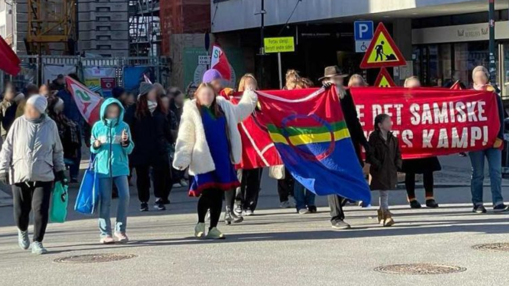
Av en kommentator for Tjen Folket Media.
Tjen Folket Media har mottatt bilder av slagordet «Proletarisk feminisme forkommunismen!» som er satt opp i Bergen og plakater i Kristiansand for studierav «Marxismen, Mariátegui og kvinnebevegelsen». Kampkomiteen rapportererom demonstrasjon mot dyrtid og Russlands angrepskrig mot Ukraina,støttemarkering for Fosen-aktivistene, møte for 8. mars, og plakataksjoner for8. mars.
Innhold
Slagordet «Proletarisk feminisme for kommunismen!» sammen med hammer og sigder malt midt i sentrum av Bergen.
Aktivister fra Rød Front har satt opp plakater i Kristiansand sentrum medoppfordring om å bli med på studier.
«Marxismen, Mariátegui og kvinnebevegelsen» er et verk av Perus KommunistiskeParti, under ledelse av formann Gonzalo. Det har hatt stor
betydning, og brukes den dag i dag som veiledning for kommunistenes
kvinnearbeid i land over hele verden. «Marxismen, Mariátegui ogkvinnebevegelsen» er en veiledning til å politisere, mobilisere og organiserearbeiderklassens kvinner i en revolusjonær kvinnebevegelse. Teksten forklarerhvordan kvinneundertrykkingen har oppstått, hvorfor den består, og hvordan denkan og må knuses som en del av proletariatets frigjøring.
Interesserte kan ta kontakt med Rød Front på rodfront@protonmail.com.
Lørdag 4. mars ble det holdt en demonstrasjon i Trondheim mot dyrtid ogRusslands angrepskrig mot Ukraina. Kampkomiteen, Revolusjonære Kommunister ogNKP var tilsluttet markeringa.
Aktivister stilte opp med bannere foran scenen på torget i Trondheim sentrum,og det ble holdt appeller av representanter fra Revolusjonære Kommunister ogKampkomiteen. Det ble uttrykt støtte til det ukrainske folkets rettferdigekamp mot Russlands imperialistiske angrepskrig. Samtidig ble det slått fast atbakgrunnen for krigen er den imperialistiske rivaliseringen mellom USA ogRussland, og at den såkalte “hjelpa” NATO-land sender til Zelenskyj-regimetikke kommer gratis. I begge appellene ble det også understreket at det erverdens arbeidere og fattige som betaler prisen for krisa i kapitalismen.
Lørdag 4. mars organiserte Kampkomiteen sammen med en rekker andreorganisasjoner ei støttemarkering for aksjonistene som har protestert motOlje- og energidepartementet i Oslo, som har blitt båret bort av politiet,bøtelagt og arrestert.
Markeringa var også til støtte for rettighetene til det samiske folket, motvindturbinene på Fosen, mot regjeringa som i over 500 dager ignorerte dommenfra høyesterett som sa at vindturbinene påvirker reinen i så stor grad atsamenes rett til miljø- reindrift og kulturutøvelse, og mot politietsbehandling av aksjonistene.
Det ble holdt flere appeller på torvet, og markeringa ble avslutta med et toggjennom sentrum.
4. mars var Kampkomiteen med å arrangere et møte om arbeiderkvinnedagen.Flere iranske organisasjoner deltok, blant annet: Solidaritet med Revolusjoneni Iran, Iransk Kurdistans Komala-parti, Midtøsten Gruppen Alna Bydel, Hiwa(Håp) Organisasjon, Kvinneutvalget i Komala-Norge, Komala KurdistansOrganisasjon av Irans Kommunistiske Parti, Irans Arbeiderkommunistiske Parti,Irans Arbeiderkommunistiske Parti–Hekmatist.
Møtet ble åpnet med en instrumental av internasjonalen. Det ble fremførtmusikk, vist klipp fra Iran og holdt flere innlegg og taler på norsk, farsi ogkurdisk. Det ble servert smørbrød og kaker og rommet var fylt med lyttere ogdeltagere. Det var god stemning og deltakerne forlot møtet med entusiasme for8. mars.
Den siste uka er det satt opp plakater for Kampkomiteens markeringer 8. marsflere steder i landet. Kampkomiteen stiller med paroler i 8. mars-toget iOslo, Bergen, Trondheim og Kristiansand, og oppfordrer folk som vil hjelpe tileller delta med dem til å ta kontakt,eller møte opp på deres oppmøter og markeringer:
Oslo: 17.00 på Grønland torg. Bergen: 19.00 ved den blå steinen. Trondheim: 16.30 øverst i nordre gate. Kristiansand: 16.30 på torvet.
Referanser Trondheim: Demonstrasjon mot dyrtid og Russlands angrepskrig mot Ukraina Kristiansand: Leve det samiske folketskamp Oslo: Møte for 8. mars Plakater: Ut på gata 8. mars!
Source: https://tjen-folket.no/index.php/2023/03/07/aktiviteter-den-siste-uka-22/
Author: Philippine Revolution Web Central
Publish Time: 2023-03-07T96:00:00-04:00
Modified Time: None
Description: Walang-patumanggang binomba ng mga jet fighter ng Armed Forces of the Philippines (AFP) ang mabundok na bahagi ng Barangay Gawa-an sa Balbalan, Kalinga bandang alas-2 ng madaling araw noong Marso 5.
Images: ['balbalan-kalinga-helicopter-bombing.jpg']
Categories: ['Human Rights']
Type: article

Walang-patumanggang binomba ng mga jet fighter ng Armed Forces of thePhilippines (AFP) ang mabundok na bahagi ng Barangay Gawa-an sa Balbalan,Kalinga bandang alas-2 ng madaling araw noong Marso 5.
Ayon sa paunang ang ulat ng Cordillera Human Rights Alliance (CHRA), dinighanggang sa mga bayan ng Upper Tabuk at Limos ang ingay ng mga fighter jet.Nakita rin ng mga residente sa lugar ang mga drone na pangsarbeylans.Kinaumagahan, dalawang helikopter naman ang umikot sa Balbalan.
Liban sa teroristang lagim na hatid sa mga sibilyang komunidad ng mga armaspanghimpapawid ng AFP, iligal na dinakip ng mga sundalo ang siyam na residenteng Sityo Uta at Codcodwe ng Barangay Gawa-an. Dalawa sa kanila ay nagpapastolng kalaba. Ang pitong iba pang sumaklolo sa kanila ay inaresto rin. Iligalsilang idinetine ng pitong oras.
Dagdag ng CHRA, patuloy pang nagpapakat ng mga tropa ng militar sa bayan ngBalbalan na pinangangambahang magdudulot ng mga paglabag sa karapatang-tao.Mayroon ding ipinakat na howitzer sa Sityo Guesang, Poblacion na nakaharap saBarangay Gawa-an.
Nanawagan ang grupo na tuluy-tuloy na tutukan at imbestigahan ang naturanginsidente para tiyakin ang seguridad at kagalingan ng mga sibilyang komundiad.
Source: https://philippinerevolution.nu/angbayan/kabundukan-sa-kalinga-binomba-ng-afp/
Author: Philippine Revolution Web Central
Publish Time: 2023-03-07T97:00:00-04:00
Modified Time: None
Description: Inaresto ng mga pulis at armadong pwersa ng estado ang organisador ng Anakpawis-Rizal na si Arnel Bueza kaninang alas-12:30 ng madaling araw sa kanyang bahay sa Sityo Tibagan, Barangay Dolores, Tayt
Images: ['human-rights-arrest-detention-1024x659.png']
Categories: ['Human Rights']
Type: article

Inaresto ng mga pulis at armadong pwersa ng estado ang organisador ngAnakpawis-Rizal na si Arnel Bueza kaninang alas-12:30 ng madaling araw sakanyang bahay sa Sityo Tibagan, Barangay Dolores, Taytay, Rizal. Walangipinakitang mandamyento de aresto ang mga dumakip. Dinala siya sa CIDGPadilla, Antipolo.
Sa bidyong inilabas ng kanyang mga kapitbahay, makikitang kinaladkad ng mgapulis palabas ng bahay si Bueza. Nagmamakaawa pa ang kanyang mga kaanak nahuwag siyang arestuhin dahil walang kahit anong kasalanan sa batas.
Taktika na ng mga pwersa ng estado ang pag-aresto sa mga aktibista at sibilyanng alanganing oras para ikubli ang kanilang mga paglabag sa karapatang-tao.
Samantala, iniulat ng grupong Karapatan-Rizal na patuloy ang presensya ngmilitar sa loob ng Sityo Tibagan kung saan dinadahas, pinagbabantaan attinatakot ang mga residente.
Liban dito, mayroong naitalang kaso ng panggigipit ang Karapatan-Rizal labansa organisador ng maralita na si Roberto Marquez. Pinasok ng mga pulis angbahay at pinagbantaan si Marquez at kanyang pamilya sa Sityo Sumilang,Barangay San Jose, Antipolo noong Marso 6.
Ayon sa ulat, simula pa Marso 2 ay paulit-ulit nang tinitiktikan atpinupuntahan ng mga pulis si Marquez sa bahay at kanyang trabaho. Kinilalabilang isang Capt. Abcede ang isa sa mga sangkot sa krimeng ito. Pinilit siMarquez na sumama sa kanila kahit na walang kahit anong mandamyento odokumento.
Dagdag ng Karapatan-Rizal, nagpapatuloy ang presensya ng mga unipormado athindi unipormadong pulis sa naturang komundiad.
Si Marquez ay ginigipit ng mga pulis dahil sa kanyang pakikisangkot sapaglaban sa isang panginoong maylupa na nangangamkam ng kanilang lupa sa SityoSumilang.
Source: https://philippinerevolution.nu/angbayan/organisador-ng-maralita-sa-rizal-inaresto-isa-pa-ginigipit/
Author: ['muhabirmehmet']
Time: 2023-03-07T97:00:00-04:00
Description: FRANKFURT|06.03.2023| ATİK, YDG ve Yeni Kadın' ın çağrısıyla " Deprem değil, Kapitalizm öldürür...
Images: ['WhatsApp-Image-2023-03-06-at-20.46.20-464x330.jpeg']
Categories: ['Avrupa', 'Haberler', 'Manset']
Type: article
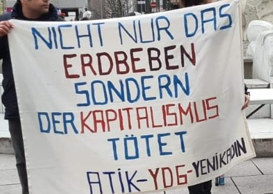
FRANKFURT|06.03.2023| ATİK, YDG ve Yeni Kadın' ın çağrısıyla " Deprem değil,Kapitalizm öldürür" sloganıyla bir miting gerçekleşti. Kitleye yönelikbilgilendirmenin yapıldığı ve el ilanı dağıtıldığı eylemde okunanbildirildiride;
„Türkiye, Kürdistan ve Suriye de gerçekleşen deprem tarif edilmez tüm acılarave perişanlıklara rağmen, bir şeyi daha ortaya çıkardı; tüm dünya da eşibenzeri görülmemiş bir boyutta bağımsız depremzedelerle dayanışmainisiyatifleri açığa çıktı. Bu uluslararası dayanışma kültürü tarihsel olarakbir çok şey öğretmektedir. Halkların ve işçilerin enternasyonal birliği vekardeşliği bu maddi ve manevi dayanışma kültürü sayesinde yeniden güçlenmişoldu. Dolayısıyla demokratik enternasyonal güçler olarak, bu dayanışmakültürünü bu kitlesel katliamın sorumlusu olan AKP-MHP koalisyonlu siyasiiktidarın yıkımı için bir kaldıraç ve tarihsel dönem olarakdeğerlendirmeliyiz. " denildi.
Eylem daha sonra" Yaşasın Enternasyonel Dayanışma " sloganıyla sonlandırıldı.
Source: https://www.atik-online.net/blog/frankfurtta-deprem-degil-kapitalizm-oeldueruer-mitingi-duezenlendi
Author: Philippine Revolution Web Central
Publish Time: 2023-03-07T98:00:00-04:00
Modified Time: None
Description: Kambal na operasyong harasment ang inilunsd ng mga yunit ng Bagong Hukbong Bayan (BHB)-West Camarines Sur noong Pebrero 28. Pinatamaan nito ang dalawang detatsment ng militar sa bayan ng Ragay, Camari
Images: ['negros_to-1024x502.jpg']
Categories: ["People's War"]
Type: article

Kambal na operasyong harasment ang inilunsd ng mga yunit ng Bagong HukbongBayan (BHB)-West Camarines Sur noong Pebrero 28. Pinatamaan nito ang dalawangdetatsment ng militar sa bayan ng Ragay, Camarines Sur.
Unang pinaputukan ng mga Pulang mandirigma ang detatsment sa Barangay Bayabandang alas-12:30 ng hapon. Sindunang ito ng pag-atake sa detatsment saBarangay Patalunan bandang ala-1:10 ng hapon.
Ang Barangay Patalunan at Baya ay magkatabing barangay lamang kung saanparehong may presensya ng mga pasista at berdugong sundalo ng 81st IB.
Ayon sa BHB-West Camarines Sru, ang detatsment ng militar sa Barangay Baya aydating nakapwesto sa sentro ng barangay katabi ng paaralang elementarya,ngunit taong 2021 ay inilipat ito sa Sitio Okwaw ng parehong barangay nakasalukuyang nasa gitna rin ng kabahayan. Katulad rin nito ang kampo saBaranggay Patalunan na ipinwesto malapit sa sentro para gawin na "humanshield" ang mga sibilyan.
Paliwanag ng yunit ng BHB, ang armadong aksyon ay tugon sa kahilingan ng mgaresidente sa lugar bunsod ng mga dumadaming kaso ng paglabag sa karapatang-taoat karahasan na nagbubunga ng matinding takot at ligalig sa mga taumbaryo.
Sa nagdaang mga buwan, kumaharap ang mga sibilyan sa pauli-ulit nainterogasyon, pananakot at saywar. Tinatarget ng miliar mga pinaghihinalaangkasapi at tumutulong sa BHB. Hindi iilang kaso ang naitala kung saansapilitang pinatatawag ang mga reidente sa loob ng kampo militar.
Nangunguna rin sa mga anti-sosyal na gawain tulad ng pag-iinom, pagsusugal atiba pa ang mga sundalo. May mga kaso na rin ito ng pang-aagaw ng asawa at mgakabataang nabuntisan sa lugar.
Ang ginagawang okupasyon ng mga militar sa sentro ng mga komunidad ay labag sainternasyunal na makataong batas at Comprehensive Agreement on Respect forHuman Rights and International Humanitarian Law o CARHRIHL.
Author: Philippine Revolution Web Central
Publish Time: 2023-03-07T99:00:00-04:00
Modified Time: None
Description: Matagumpay na inilunsad ng dalawang tim ng Bagong Hukbong Bayan-Norben Gruta Command-West Camarines Sur ang sabayang aksyong pamamarusa sa 81st IBPA CAFGU Detachment.Noong Pebrero 28, 2023 gan
Images: ['npa-west-camarines-sur-map-1024x576.png']
Categories: ["People's War"]
Type: article

Matagumpay na inilunsad ng dalawang tim ng Bagong Hukbong Bayan-Norben GrutaCommand-West Camarines Sur ang sabayang aksyong pamamarusa sa 81st IBPA CAFGUDetachment.
Noong Pebrero 28, 2023 ganap na alas 12:28 ng hapon ay pinaputukan ng riple atM203 granade launcher ng isang tim ng BHB ang detatsment ng Barangay Baya,Ragay, Camarines Sur. Sa kaparehong araw ding ito, ganap na ala 1:10 ng haponay pinaputukan ng isa pang tim ng BHB ang detatsment ng 81st IB CAFGU saBarangay Patalunan ng nasabi ring bayan. Samantala, ligtas at mahusay naman nanakapagmaniobra ang mga tim na nagsagawa ng aksyong pamamarusa.
Ang Barangay Patalunan at Baya ay magkatabing baryo lamang kung saan parehongmay presensya ng mga pasista at berdugong sundalo ng 81st IBPA.
Ang 81st IBPA CAFGU Detachment sa Barangay Baya ay dating nakapwesto sa sentrong barangay katabi ng paaralang elementarya, ngunit taong 2021 ay inilipat itosa Sitio Okwaw ng parehong barangay na kasalukuyang nasa gitna rin ngkabahayan. Katulad rin nito ang kampo sa Baranggay Patalunan na ipinwestomalapit sa sentro para gawin nilang dipensa ang taumbaryo.
Ang aksyong pamamarusa sa mga elemento ng CAFGU na nasa ilalim ng 81st IBPA aytugon ng Norben Gruta Command sa kahilingan ng mga residente sa lugar bunsodng mga dumadaming kaso ng paglabag sa karapatang pantao at karahasan sa lugarna nagbubunga ng matinding takot at ligalig para sa mga taum-baryo.
Pauli-ulit na interogasyon, pananakot at psy-war sa mga pinaghihinalaangkasapi at ugnay ng NPA katulad ng pagpapatawag sa mga sibilyan sa loob ngkanilang kampo. Nariyan ang pag-iinum ng alak sa mga kabahayan na may dalangbaril, mga pagsusugal at paghihingi ng ID sa mga nasusumpungan sa mga bukirinat kapag walang naipakitang katibayan ng pagkatao ay paghihinalaang kasapi ngNPA at isasailalim sa interogasyon. May mga kaso na rin ito ng pang- aagaw ngasawa at mga kabataang nabuntisan sa lugar.
Kinamumuhian ng mga mamamayan sa lugar ang pasista at berdugong 81st IBPA sapanghihimasok nito sa lugar at pagbibigay ng kaguluhan. Ang mga krimen at mgapaglabag nito sa karapatang pantao sa mga residente ang nagbibigay kondisyonpara patunayan na hindi sila ang tunay na hukbo ng mamamayang api atpinagsasamantalahan.
Bahagi rin ng aksyong pamamarusa ng Norben Gruta Command ang di makakalimutangkarumal- dumal na pagpatay sa tatlong sibilyan at residente ng BaranggayPatalunan na si Bonagua at magkapatid na Ramos kung saan nasumpungan habangnagkokopra ng berdugong militar ng 96th IBPA sa ilalim ng 9th IDPA atinilibang ng buhay taong 2018. Kasunod nito ang tatlo namang sibilyan saBaranggay Baya kung saan dinukot at pinagbubugbog ang mga residente ng baryona si Berong Rafion at magkapatid na Bendafia noong 2019. Pinalaya ito bungang paghahabol ng taum- baryo, ngunit ang isa ay kanilang itinago at pinilit nagawing CAFGU na sa kasalukuyan ay nasa kanilang kamay.
Napatunayan na rin ng karanasan na kailan man ay hindi nakakatulong atnagbibigay proteksyon sa mamamayan ang pagkakaroon ng mga presensya ngberdugong AFP bagkus ito ang numero unong tagapag-taguyod ng reaksyunaryonggubyerno ng karahasan, prostitusyon at bumubusal sa karapatan ng mamamayan.
Nananawagan ang Norben Gruta Command sa lahat ng mamamayan ng Camarines Sur napatuloy na makipagkaisa sa BHB at ilantad ang karahasan at pagiging pasista atberdugo ng AFP sa ilalim ng kasalukuyang rehimeng US-Marcos II.
Ang Bagong Hukbong Bayan sa ilalim ng Norben Gruta Command ay laging handangipagtanggol ang kanyang pinagsisilbihan na api’t pinagsasamantalahangmamamayan.#
Author: mats
Time: 2023-03-07T99:00:00-04:00
Images: ['kuva1.png', 'kuva2.png', 'kuva3.png', 'kuva4.png', 'kuva5.png']
Categories: ['Yleinen']
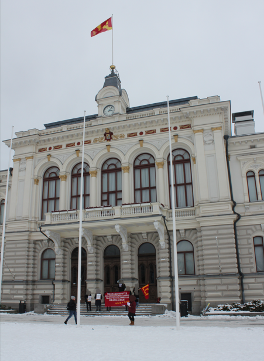
Kylmänä sunnuntaina (5.3) Tampereella nähtiin lämminhenkistä toimintaa, kunUuden Brasilian ystävät järjestivät solidaarisuus mielenosoituksen Brasilianköyhien talonpoikien murhia vastaan. Alkuperäinen julkaisu on luettavissa UusiBrasilia sivustolla, se löytyytäältä.
Uuden Brasilian ystävät järjestivät sunnuntaina (5.3) Tampereellasolidaarisuus mielenosoituksen Brasilian köyhien talonpoikien tueksi, koskaBrasiliassa vanha valtio vain jatkaa Köyhien Talonpoikien Liiton (Liga dosCamponeses Pobres [LCP]) vastaista toimintaa.
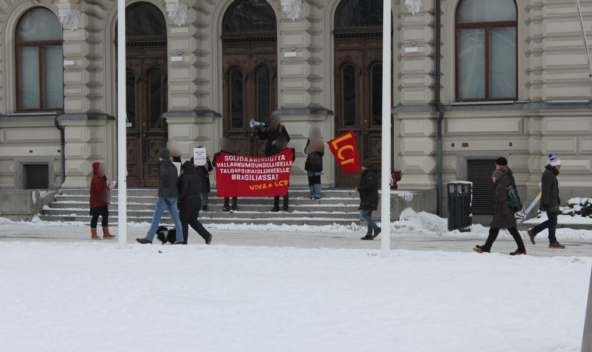
Suomessakin moni hyväsydäminen ihminen laittoi suuren toivon siihen kunköyhien “ystävänä” ja “työväenpresidenttinä” mainostettu Luiz Inácio Lula daSilva (Lula) voitti maan läpimädissä vaaleissa. Nyt jo voimme havaita ettämitään oikeaa muutosta Lulan hallinto ei tule tuomaan, sillä koko Brasilianvanha valtio on täysin tilanherrojen ja imperialistien palveluksessa,pääasiassa jenkki-imperialismin palveluksessa, kuten monet muutkinLatinalaisen Amerikan valtiot. Tämä on myös olennainen syy sille, miksi yhäuseammat ja useammat köyhät talonpojat ovat asettautuneet vaaliboikotinkannalle. He ovat tiedostaneet että äänestämällä, porvareiden ja tilanherrojenvanhan valtion vaaleissa ei saada koskaan aikaiseksi maan jakoa köyhilletalonpojille. LCP:n kanta onkin, että ainoa keino jolla maa saadaan senviljelijöille on agraarivallankumous, osana koko Brasilian käsittävääuusdemokraattista vallankumousta.
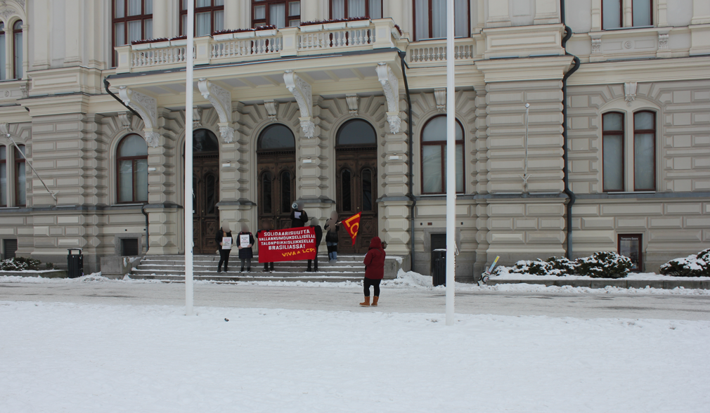
Mitä tämä Lulan hallinto on sitten antanut Brasilian köyhille talonpojilletähän päivään mennessä? Melkein heti sen jälkeen kun Lula tammikuunensimmäisenä päivänä vannoi virkavalansa ja astui valtiaaksi Brasilian kansanniskan päälle, aloitettiin Rondônian osavaltiossa LCP:n aktivisteihinkohdistuva murhakampanja. Tammikuun 4.päivä sotilaspoliisit murhasivat pitkänlinjan talonpoikaisaktivistin Patrick Gasparini Cardoson. Tämän jälkeen,tammikuun 28.päivä, taantumuksellisten asevoimien toimesta murhattiintalonpoikaisaktivistit Rodrigo Hawerroth ja Raniel Barbosa. Brasilian vanhanvaltion toimista voit lukea enemmäntäältä.
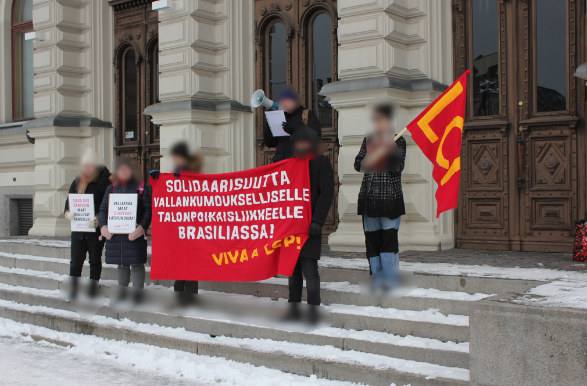
Tätä kaikkea vastustaakseen ja köyhien talonpoikien taistelun tueksi, UudenBrasilian ystävät järjestivät Tampereella mielenosoituksen. Uuden Brasilianystävät jakoivat tapahtumassa lentolehtisiä joukoille, joista useat ottivatmielenkiinnolla lentolehtisen vastaan. Tämän lisäksi kuultiin kuinkaohikulkevat joukot, innostunein mielin puhuivat siitä, että mielenosoituskannustaa Brasilian vallankumouksellisia. Mielenosoituksessa kuultiin myöspuhe, jossa nostettiin esille vanhan Brasilian valtion hyökkäyksettalonpoikaistoa vastaan.
Jos haluat liittyä mukaan Uuden Brasilian ystävien toimintaan, ota meihinyhteyttä sähköpostilla: uusibrasilia@riseup.net
VIVA A LCP!
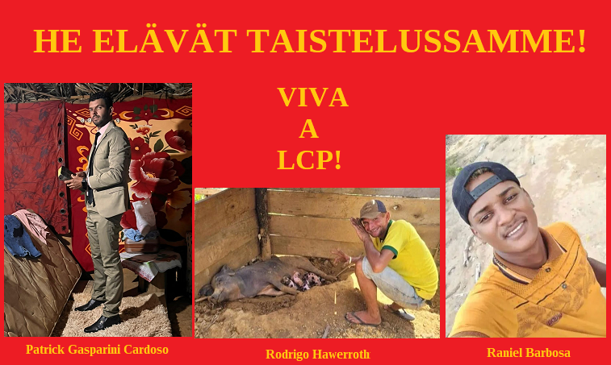
Source: https://punalippu.noblogs.org/post/2023/03/07/solidaarisuustyota-tampereella-5-3/
Author: ['muhabirmehmet']
Time: 2023-03-07T99:00:00-04:00
Description: HABER MERKEZİ|07.03.2023|ATİK-UPOTUDAK, 18 Mart Uluslararası Politik Tutsaklar Günü’ne ilişkin yaptı...
Images: ['WhatsApp-Image-2023-03-07-at-08.55.21-620x330.jpeg', 'WhatsApp-Image-2023-03-07-at-08.55.07-212x300.jpeg']
Categories: ['Avrupa', 'Haberler', 'Manset']
Type: article
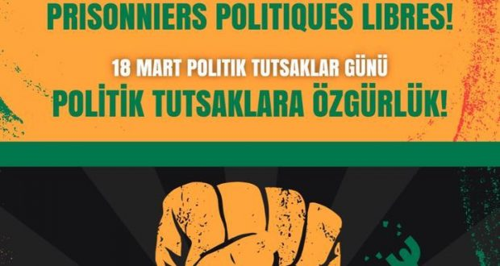
HABER MERKEZİ|07.03.2023|ATİK-UPOTUDAK, 18 Mart Uluslararası Politik TutsaklarGünü’ne ilişkin yaptığı açıklamada, dünyanın birçok ülkesinde binlerce insanındüşüncelerinden dolayı tutsak edilip, ağır işkencelere maruz kaldığınıbildirdi ve politik tutsaklara özgürlük istedi.
‘Politik tutuklular ordusu yaratılıyor’
Açıklamada birçok ülkede mevcut sistemin yarattığı krizler sonucu yönetenlerile yönetilenler arasındaki çelişkilere dikkat çeken 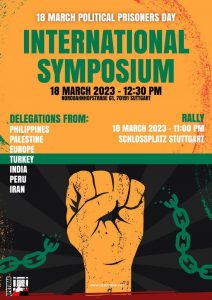
“Her yıl 18 Mart uluslararası politik tutsaklar gününde, dünyanın birçokülkesinde binlerce insanın düşüncelerinden dolayı tutsak edilip, ağırişkencelere maruz kaldığının gerçekliğiyle karşı karşıya kalmaktadır. Çünkümevcut sistemdeki kriz her geçen gün yoğunlaşıyor. Bunun sonucunda dayönetenler ile yönetilenler arasındaki çelişkiler giderek daha daderinleşmektedir. Bundan dolayı, dünyanın pek çok ülkesinde toplumsal muhalifgüçlere yönelik saldırılar da artıyor. Sistemi eleştiren, tepkisini çeşitlieylem ve etkinliklerle dile getirenlerin üzerindeki baskı yeni yasaldüzenlemelerle artıyor. Mevcut güvenlik yasaları, toplantı ve gösteri yasalarıve temel hakları belirleyen diğer birçok yasa her geçen gün sertleştiriliyor.
Birçok ülkede toplumsal muhalefet güçleri, sistemin bu saldırılarına karşısokak eylemleri, işçi ve köylü grevleri, doğayı savunan etkinliklerle giderekdaha güçlü direnişler örgütlüyor. Sonuç Dünyanın dört bir yanında yüz binlerceinsan ağır işkenceler altında hapsediliyor, hapishanelere kapatılıyor. Bunlaraher gün yenileri eklenerek adeta bir politik tutuklular ordusu yaratılıyor.”
‘Hapishanelerdeki koşullar giderek ağırlaşmaktadır’
Açıklamanın devamında tüm ülkelerde hapishane koşullarının giderek daha daağırlaştığını söyleyen UPOTUDAK, “Tecrit koşulları ve yıllarca süren hapiscezaları insanlara ağır bedeller ödetmektedir. Ayrıca tüm hapishanelerdetutsaklar sistematik olarak ağır işkencelere maruz kalmaktadır. Özelliklehapishanelerde korona pandemisine karşı önlem alınmaması nedeniyle zatensağlık sorunları olan birçok tutsak giderek daha ciddi hastalıklarla karşıkarşıya kaldı. Birçok uluslararası kampanyaya rağmen ağır sağlık sorunlarıolan tutsaklar tahliye edilmemekte ve adeta ölüme terk edilmektedir” dedi.
‘Tutsaklara düşman hukuku uygulanmaktadır’
Sistemin hapishanelerde politik tutuklulara yönelik düşman hukukuuyguladığını, kendisinden olmayan, kendisi gibi düşünmeyen ve sisteme karşıdirenenlerin düşman olarak görüldüğünden dolayı her türlü saldırı, baskı,işkence ve katliama maruz kaldıklarının altını çizen UPOTUDAK, “İran’da olduğugibi, çok ülkede politik tutsaklar düşman görüldüğü için idam cezası ilecezalandırılmaktadır.
Devrimci mücadelenin öncülerine yönelik özel uygulamalar her geçen günartıyor. İran’da kitlesel ayaklanmanın ardından binlerce kişi hapsedildi veağır işkencelere maruz bırakılmaktadır. Peru’da yaşanan darbeyi kınayankitlelere yoğun saldırılar sonucunda birçok insan hayatını kaybetmiş, yüzlercegösterici göz altına alınarak tutuklanmıştır. ABD’de Siyah Panter hareketindenMumia Abu-Jamal, Filistinli özgürlük direnişçileri, Fransa’da uzun yıllardırtutsak edilen Georges Abdallah ve Ahmad Saadat, Hindistan’da Dr. GN Saibaba,Kürdistan Özgürlük Hareketi lideri Abdullah Öcalan ve Türkiye cezaevlerinde onbinlerce politik tutsağa ağır koşullar dayatılmaktadır” ifadelerini kaydetti.
‘Avrupa ülkelerinde de saldırılar artmaktadır’
Açılamada Avrupa ülkelerindeki hapishanelerde de yerli ve göçmen devrimcilereyönelik saldırıların arttığını aktaran UPOTUDAK, şu ifadelere yer verdi:
“Avrupa ülkelerinde yerli ve göçmen devrimcilere yönelik saldırılaryoğunlaşmaktadır. Özellikle Almanya, Fransa başta olmak üzere birçok ülkedeçıkartılan yeni yasalarla, emperyalist kapitalist sistemi eleştiren ve karşımücadele eden güçlere sokak eylemlerinde saldırılmakta, toplu tutuklanmakta veuzun yıllara hapishanelerde tutuklanmaktadır. Almanya anayasanın 129 a ve bbendine dayanarak, göçmen devrimcilerin kendi ülkelerindeki faşist baskıyakarşı mücadele ettikleri için uzun yıllara varan hapis cezaları verilmektedir.Özellikle Kürdistanlı ve Türkiyeli devrimciler en çok bu saldırıya maruzkalmaktadır. Şu an onlarca devrimci Almanya hapishanelerinde tutulmaktadır.”
‘Tutsakların sesini alanlarda duyuralım’
Aıklamanın son kısmında hapishanelerde yaşanan insan hakları ihlallerinekarşı, Avrupa’da kamuoyu yaratmak için tüm yerli ve göçmen örgütleri duyarlıolmaya ve tutukluların sesini sokaklarda haykırmaya çağıran UPOTUDAK, tümpolitik tutsaklara özgürlük istedi.
Uluslararası sempozyum
Öte yandan 18 Mart 2023 tarihinde Stuttgart’ta UPOTUDAK tarafındanUluslararası Politik Tutsaklar Günü’ne ilişkin uluslararası bir sempozyumgerçekleşecek.
Source: https://www.atik-online.net/blog/atik-upotudak-politik-tutsaklara-oezguerluek
Author: carga
Time: 2023-03-07T99:00:00-04:00
Head Description: El 8 de marzo, Día Internacional de la Mujer Trabajadora, hacemos sentir nuestros reclamos en todo el país. La deuda y la falta de justicia sigue siendo con nosotras
Description: 1. Día Internacional de las mujeres trabajadoras A la salida de esta edición, 8 de marzo, millones de mujeres en nuestro país y en todo el mundo vuelven a ganar las calles, con todos sus reclamos. En Argentina la lucha de las mujeres ha sido vanguardia de la lucha popular. Por su doble opresión son…
Images: ['Con-el-ejemplo-de-las-queridas-camaradas-Clelia-Iscaro-y-Keiko....jpg']
Type: article

A la salida de esta edición, 8 de marzo, millones de mujeres en nuestro país yen todo el mundo vuelven a ganar las calles, con todos sus reclamos. EnArgentina la lucha de las mujeres ha sido vanguardia de la lucha popular. Porsu doble opresión son las que más sufren el peso de las emergencias sobrenuestro pueblo donde avanza la violencia de género y se multiplican losfemicidios. Son las que sufren la discriminación laboral, las que se ponen alhombro los comedores populares para salirle al cruce al hambre que crece entrelos de abajo.
También son las que con su incansable lucha conquistaron la ley deinterrupción voluntaria del embarazo (IVE). Las que luchan para que lasgrandes empresas y las barriadas populares tengan jardines materno-paternalesgratuitos siguiendo el ejemplo de las y los trabajadores de Mondelez yAstilleros Río Santiago. Las que en las calles reclaman por la declaración dela Emergencia de género con un presupuesto acorde y real, y por refugios entodo el país para mujeres víctimas de violencia.
Son esas mujeres que estuvieron en la primera línea de la lucha contra lapandemia, con miles de promotoras de salud y promotoras en violencia de géneroque al mismo tiempo que trabajan al servicio del pueblo luchan por sureconocimiento efectivo.
Un movimiento de mujeres que fue capaz de construir 35 Encuentros de mujeres yse prepara para el número 36 en Bariloche, enfrentando las maniobrasdivisionistas de distintos sectores de las clases dominantes.
Desde nuestro PCR y su JCR en todo el país trabajamos para que en cada lugarde trabajo se realicen paros de mujeres y actividades de lucha por susreivindicaciones. Impulsamos la más amplia unidad en las marchas de todo elpaís, con la consigna central: “La deuda y la falta de justicia sigue siendocon nosotras”.
El país se vio sacudido por la pueblada de Empalme Graneros -Barrio Lospumitas”- en Rosario. Ante el asesinato de Máximo Jerez, un niño de lacomunidad qom de 11 años, descargó su rabia y expulsó a los transas del barrioy en tres horas destruyó a mazazos cinco “bunker” de la droga. Es un embriónde la necesaria organización de la autodefensa barrial ante tanta violenciadel narcotráfico encubierta por las fuerzas de seguridad, la justicia y lapolítica.
Los grupos narcos se fueron expandiendo en Rosario y crecen las disputas porlos territorios y los “aprietes” por mercados con un resultado de muertesdiarias.
Como dicen los camaradas del regional Santa Fe, en las costas de Rosario“Argentina sangra por las barrancas del Paraná”, y no sangra solo por eldespojo al que nos someten ese complejo de terratenientes y monopoliosimperialistas ligados a la exportación de cereales, cada uno con sus puertosprivados, donde hacen y deshacen a su antojo. No es solo lo que sacan, sinoque allí es donde llega el mayor volumen de droga proveniente de Paraguay yBrasil. A eso hay que sumarle la droga que baja por la ruta 34 desde Bolivia.
Con gran hipocresía la derecha macrista y los grandes medios utilizaron lagran difusión del ataque mafioso a un supermercado de la familia de AntonelaRoccuzzo, la compañera de Lionel Messi, donde dispararon 14 balas y dejaronamenazas, solo para justificar políticas represivas y sin hablar de porquéllega tanta droga a esa región. De los puertos privados y los monopoliosexportadores ni una palabra.
Patricia Bullrich planteó la participación de las Fuerzas Armadas. Lo únicoque lograría es que suceda lo que ya sucedió con la policía santafecina yparte de las fuerzas federales que, corruptas hasta el caracú, pasaron atrabajar para este infame negocio.
No hay manera de avanzar contra el narcotráfico sin investigar esto y losinmensos negociados, entre ellos el inmobiliario, que se usan para “blanquear”el dinero de la droga. Porque como dice el compañero Carlos del Frade sin“lavado de dinero” no puede haber narconegocio.
Una parte de la droga queda en Rosario y gran parte va a Estados Unidos yEuropa. Esa es una de las razones por las que es tan grande la disputa demonopolios por el control de la mal llamada “hidrovía” y de que los yanquis seinstalen en Paraguay para intentar controlarla con participación de la DEA(Administración de Control de Droga yanqui que lucha contra losnarcotraficantes que no controla).
Nunca hay que olvidarse que, con la derrota de Estados Unidos en Vietnam, en1973, el Estado yanqui destruyó, con la droga, a quienes volvían de la guerra,y a una corriente que luchaba unida contra esa guerra imperialista. Así quebróa gran parte de esos jóvenes, y así trabajan para quebrar a nuestra juventud.
En esta lucha es fundamental el papel que juega nuestra Juventud ComunistaRevolucionaria junto a sectores de la iglesia y de otros movimientospopulares, con el desarrollo en todo el país del Movimiento “Ni Un Pibe Menospor la Droga”, impulsando el deporte, la educación, el trabajo, mostrando uncamino contra la droga.
A más de un año del comienzo de la invasión imperialista rusa a Ucrania, estapotencia ha concentrado gran parte de sus tropas en Bajmut, en el frente de laprovincia de Donetsk, ganando una de las batallas más duras y largas de laguerra en Ucrania.
Estados Unidos dice que China considera la posibilidad de suministrar armas aRusia. Eso podría ser un paso más hacia una guerra mundial.
La revista alemana Der Spiegel advirtió que Rusia estaría negociando con laempresa china Xi’an Bingo Intelligent Aviation Technology la compra de 100aviones no tripulados de ataque. Rusia ya ha utilizado drones de origen iraníen el frente de combate y en la destrucción de la red eléctrica de Ucrania.
China ha presentado una propuesta de 12 puntos para “poner fin a la guerra”,lo que muestra una mayor intervención de este imperialismo en el conflicto.Además, su canciller, Wang Yi, dijo la semana pasada que China y Rusia“mantienen su decisión estratégica de avanzar firmemente en el cauce de laformación de un mundo multipolar”. Se está realizando la “Asamblea Nacionaldel Pueblo” que tiene entre sus objetivos fortalecer el poder de Xi Jinpingrumbo a su tercer mandato. Allí se acaba de anunciar el aumento delpresupuesto militar un 7%, llevándolo a US$225.000 millones, ante las“crecientes amenazas sobre China”.
Como dicen las resoluciones del 13° Congreso del PCR ¡Fuera Rusia deUcrania!¡Fuera Estados Unidos y la OTAN!¡Solidaridad con la lucha patrióticadel pueblo ucraniano!
En Estados Unidos aparecen voces como la de la congresista María Salazarcuestionando la base imperialista china en Neuquén y los acuerdos militaresdel gobierno con el imperialismo chino y lanzó su amenaza: “la cooperación deArgentina con China es un pacto con el diablo … hay dos mundos, el mundo librey el mundo de los esclavos, espero que Argentina quede en el mundo libre” .
En este mundo en el que crecen los peligros de guerra mundial, apoyarse en unou otro imperialismo pone a países dependientes como el nuestro como carne decañón de esa disputa imperialista
La inflación de febrero superaría el 6%, y en alimentos y bebidas alrededordel 10%. El acumulado en un año podría superar el 100%. Es un duro castigopara los indigentes y pobres y un brutal recorte de salarios, jubilaciones yplanes.
Hay luchas de los docentes y otros sindicatos por aumento de salarios yparitarias.
Se conquistó la sanción en Diputados de la moratoria previsional que abre laspuertas para 800.000 nuevos jubilados, con el voto en contra de Juntos por elCambio y Milei. Los argumentos de estos sectores para votar en contra, “porqueaumenta el déficit fiscal” y que no se pueden “regalar jubilaciones a los queno trabajaron”, muestran parte de su programa y porqué el macrismo y laderecha reaccionaria son a quienes dirigimos el golpe principal de la luchapopular.
Se anunció un “Dólar Malbec” y cambios diferenciados para sectores regionales.Pero hay miles de pequeños productores ahorcados por el granizo o la sequía.Esa plata va a ir a los bolsillos de los monopolios exportadores. La CCC, laFNC, el PCR y otros sectores denunciaron esta situación en Mendoza con unamovilización, el 4/3, con la consigna: “La agricultura está de luto”.
En la jornada nacional de lucha de la FNC, nuestros camaradas Albina Vides yGumersindo Segundo, dirigentes nacionales de la FNC, la Asociación de Medierosy Afines, y Comunidad Ava Guaraní de La Plata, hablaron de la difícilsituación que están atravesando los/as campesinos/as pobres criollos yoriginarios.
La campaña contra los pueblos originarios de contenido racista yproterrateniente tuvo este sábado pasado un nuevo capítulo con la brutalrepresión al pueblo wichi, en Nueva Pompeya, Chaco. Ante el pedido deaparición de Salustiano Giménez, la policía y la Gendarmería reprimieronsalvajemente con decenas de heridos. Luchamos por verdad y justicia porSalustiano Giménez, desaparecido hace más de 20 días y por la aparición ylibertad de los dirigentes detenidos por este justo reclamo.
Se dispara el índice de ajuste de alquileres: en marzo sube 90% por el repuntede la inflación.
La cancillería argentina le comunicó al gobierno británico el fin del acuerdoForadori-Duncan. Ese Acuerdo se firmó, (en estado de ebriedad del en esemomento vicecanciller Foradori según se burlaron los propios negociadoresingleses), durante el gobierno de Macri respondiendo sumisamente a lasexigencias británicas expuestas en una carta a Macri de la entonces primeraministra Theresa May.
El gobierno revocó también el Acuerdo por el viaje San Pablo-Córdoba-Malvinasque convino el gobierno de Macri y que servía para satisfacer la logística ala ocupación colonialista británica. Son dos medidas positivas. Al mismotiempo se debe exigir que deben quedar sin efectos todas las políticas queformaban parte de ese Pacto, así como anular los Acuerdos de Madrid de octubrede 1989, febrero de 1990 y la Ley de Garantía a las inversiones británicas Nº24.184 de 1992 (ver nota página 9).
Esto hace a enfrentar los intereses del imperialismo inglés de colonizar másde 5.000.000 km² de territorios de indudable soberanía argentina.
La defensa de la soberanía exige también resolver la cuestión de loslatifundios británicos a manos de Joseph Lewis, así como nuestros derechossoberanos sobre el Río Paraná y el Canal Magdalena, como se expresó en elbanderazo del sábado 3 en Rosario, Chaco, Entre Ríos y otras ciudades. Enestas movilizaciones se plantó bandera para que el río Paraná quededefinitivamente en manos argentinas y por la realización del Canal Magdalena.
En varias provincias, entre abril y mayo, se realizan elecciones provincialesy municipales, en las que desde el PTP-PCR impulsamos la conformación defrentes de unidad de las fuerzas patrióticas, democráticas y populares.
Para las elecciones nacionales el 15 de mayo es la fecha límite para convocarlas PASO. El 14 de junio para la presentación de alianzas, y el 24 del mismomes, para presentar listas de precandidatos y el comienzo “formal” de lacampaña electoral nacional.
La derecha reaccionaria de Juntos por el Cambio, y los poderosos monopoliosimperialistas y de las clases dominantes que tiene detrás, se preparan paraimponer su política de ajuste, entrega y represión a sangre y fuego. Viven unadura interna con la indefinición de Macri y la disputa entre Larreta yBullrich. Tampoco está definida la sucesión en la CABA. El radicalismo hace sujuego, Elisa Carrió el suyo. Pichetto ya se largó a presidente. Hay peleas alborde de la ruptura en Córdoba, Tucumán, Mendoza, Neuquén y Chubut.
Frente a los planes de estos sectores reaccionarios es importante que se leoponga una fuerza capaz de ponerle freno en el terreno electoral.
Hay una dura disputa en el Frente de Todos. Sigue pendiente si CristinaKirchner finalmente decide presentarse, si el presidente buscará lareelección, si el ministro de Economía Massa se presenta. El que se sumó a lacarrera presidencial es el embajador en Brasil, Daniel Scioli.
Empezaron las clases, y muchas familias no pudieron mandar sus hijos a laescuela por falta de útiles, zapatillas o guardapolvos. Frente a estasituación la JCR impulsa en los movimientos de masas una movilización para el14 de marzo.
El miércoles 1° de marzo la mitad del país se quedó sin electricidad, en mediode una fenomenal ola de calor. Rápidamente, se atribuyó a un incendio en uncampo que había quemado los cables. Pero otros técnicos dijeron que esaslíneas de alta tensión no se queman, resisten el fuego.
La falsa versión de que el problema estaba en un paro de las usinas atómicasAtucha I y II, difundida por voceros del macrismo, tuvo como objetivocuestionar las usinas atómicas y el desarrollo nuclear en países como elnuestro, que no les gusta para nada a las potencias nucleares, y le preocupaal Comando Sur yanqui. Alberto Fernández y el ministro Massa denunciaron“sabotaje”.
En muchos barrios los vecinos realizaron cortes de calles y autopistas,poniendo así sobre la mesa la verdadera situación de la infraestructuraeléctrica, con falta de inversión en todos sus segmentos: generación,trasporte y distribución. Crece el reclamo de la estatización de las empresasde energía con control de sus trabajadores.
En esta compleja situación, con una inflación brutal, falta de insumos enalgunas industrias, reservas mínimas en el Banco Central, con una temporadaturística exitosa y crecimiento de algunas ramas de la producción, crecen lasluchas en todo el país y se desarrolla un gran debate político.
El gobierno en su conjunto no tiene propuestas para los graves problemas degran parte del pueblo, ni valora el protagonismo popular, que fue la base,sobre la lucha en las calles, que permitió la derrota en las urnas delmacrismo en el 2019.
Nosotros entendemos que, para volver a derrotar a esa derecha reaccionaria, nohay otro camino que avanzar en la confluencia de las luchas con elprotagonismo del pueblo en las calles. Desde allí se pueden crear lascondiciones para derrotarlos también en las urnas, con un frente que contemplelos reclamos de la mayoría de los trabajadores y el pueblo.
También sabemos que no es a través de las elecciones como se resolverán losgraves problemas que sufre nuestro pueblo. Por eso ponemos el centro enencabezar las luchas por las emergencias populares, la soberanía nacional y lavigencia de nuestras conquistas y libertades democráticas, y desde ahíofrecemos un puesto de lucha en el PCR y la JCR, para avanzar en el camino dela liberación nacional y social de nuestra patria. Y vamos al encuentro de losdebates que aparecen en los lugares de trabajo, vivienda o estudio, y en losmovimientos que integramos, con nuestra propuesta de Diez Medidas , y conlas Resoluciones y el Programa aprobados en nuestro 13° Congreso delPCR.
Peleamos por avanzar en la unidad para la lucha de la clase obrera, loscampesinos pobres y medios, y los sectores populares, en el camino de unarevolución que nos libere del latifundio y la dependencia, y permita laconstrucción de un nuevo Estado, en manos de la clase obrera y el pueblo.
Escriben Ricardo Fierro y Germán Vidal
Source: https://pcr.org.ar/nota/8-m-nosotras-paramos-y-marchamos/
Author: ΚΚΕ(μ-λ)
Time: 2023-03-07T99:00:00-04:00
Description: Στις 8 Μάρτη 1857 οι εργάτριες της Νέας Υόρκης έχασαν τη ζωή τους στην αιματοβαμμένη απεργιακή διαδήλωση κι έγιναν σύμβολο του αγώνα για ισοτιμία και γυναικεία χειραφέτηση. Στις 8 Μάρτη 2023 το γυναικείο κίνημα ενώνεται με τον λαό που αφυπνίζεται και διαδηλώνουν ενάντια στο σύστημα της καταπίεσης και εκμετάλλευσης.
Images: ['γυναικείο.jpg']
Type: article

Όλοι στην απεργία της 8ης Μάρτη! Να πλημμυρίσουν οι δρόμοι !
Η φετινή επέτειος της 8η Μάρτη, ως ημέρα μνήμης και τιμής των αγώνων τωνγυναικών για ισοτιμία και χειραφέτηση, βρίσκει τον λαό στους δρόμους ναδιαδηλώνει για να καταγγείλει το έγκλημα στα Τέμπη. Η οργή που επί χρόνιασυσσώρευε ο λαός μέσα του, ξεχείλισε. Οι καθημερινές μαζικές διαδηλώσεις καιοι συγκλονιστικές συγκεντρώσεις των δεκάδων χιλιάδων διαδηλωτών στην Αθήνα καισε άλλες πόλεις, ανάγκασαν τον πρωθυπουργό να ανασκευάσει τις αρχικές τουδηλώσεις περί «ανθρώπινου λάθους» και να υποσχεθεί πως θα φροντίσει, τάχα, οίδιος προσωπικά να λυθούν τα προβλήματα ασφάλειας των σιδηροδρόμων! Ο φόβοςτης κυβέρνησης και του συστήματος δεν μπορεί να κρυφτεί. Γι’ αυτό κατεβάζουντην αύρα και τα ΜΑΤ και χτυπούν τις διαδηλώσεις. Όμως ο λαός δεν πείθεται, δενξεγελιέται και δεν συγχωρεί.
Η επιμονή και η μαζικότητα των λαϊκών διαδηλώσεων ανάγκασε τη συνδικαλιστικήηγεσία να κηρύξει 24ωρη απεργία στις 8 Μάρτη. Τη μέρα σύμβολο του γυναικείουκινήματος, οι δρόμοι πρέπει να πλημμυρίσουν από απεργούς και διαδηλωτές.Άλλωστε, το γυναικείο κίνημα, ως αναπόσπαστο κομμάτι του λαϊκού κινήματος,έχει να αντιμετωπίσει τον ίδιο εχθρό, δηλαδή, το σύστημα της εξάρτησης, τηςεκμετάλλευσης, του κεφαλαίου και των κυβερνήσεων του. Αυτοί είναι οι υπεύθυνοιτης τραγωδίας στα Τέμπη. Αυτοί ευθύνονται για τη δυστυχία, τη φτώχεια, τηναδικία, την ανισότητα, για όλα τα προβλήματα του λαού τον οποίο ξεζουμίζουν κιεκμεταλλεύονται. Όσο βαθαίνει η καπιταλιστική εκμετάλλευση τόσο μεγαλώνει ηανισοτιμία της γυναίκας και διπλή καταπίεσή της.
Καθημερινά αποδεικνύεται πως όλοι αυτοί δεν δίνουν δεκάρα για τη ζωή του λαούκαι πως ο κόσμος που χτίζουν είναι εχθρικός για τους ανθρώπους και φυσικά γιατη γυναίκα, η οποία πρώτη έρχεται αντιμέτωπη με κάθε αντιλαϊκό μέτρο.Ψηφίστηκαν μια σειρά νόμοι που έφεραν περικοπές στις συντάξεις, αύξηση τωνορίων συνταξιοδότησης, απολύσεις εγκύων γυναικών, υποχρεωτική συνεπιμέλεια,και χρίζουν προστάτη της εργαζόμενης τον εργοδότη. Οι βιασμοί, οι κακοποιήσειςκαι οι δολοφονίες γυναικών αποτελούν πια καθημερινότητα. Το αστικό δικαστικόσύστημα αθωώνει τους θύτες ή τους ρίχνει στα μαλακά κι ενοχοποιεί τα θύματαπολύ προκλητικά. Το σύστημα που κυβερνά με τη βία, γεννά κάθε βία καικατατάσσει στα φυσικά φαινόμενα τη βία κατά των γυναικών.
Η ακρίβεια και η διάλυση των εργασιακών δικαιωμάτων εκτός από την οικονομικήπίεση για το πώς θα βγει ο μήνας, περιορίζουν την ανεξαρτησία και τις επιλογέςτης. Έτσι, πιο δύσκολα φεύγει από ένα γάμο και πιο εύκολα κλείνεται στο σπίτικαι στις άχαρες δουλειές της νοικοκυράς.
Σε μια περίοδο που οι ιμπεριαλιστές απειλούν την ανθρωπότητα με πυρηνικόολοκαύτωμα, που η ζωή δεν έχει καμιά αξία, που η διαφθορά και η σαπίλα δενμπορεί να κουκουλωθεί, ό,τι πιο συντηρητικό βγαίνει στην επιφάνεια για ναδικαιολογήσει την ανισοτιμία και την καταπίεση της γυναίκας.
Η γυναίκα του λαού δίνει καθημερινά τις προσωπικές μάχες στο σπίτι και στηδουλειά. Με την ένταξή της στο κίνημα και στους αγώνες κερδίζει την ισοτιμίαμε τον άντρα της τάξης της, ενάντια στο σύστημα που τους εκμεταλλεύεται, πουγεννά και συντηρεί την ανισότητα κάθε είδους.
Στις 8 Μάρτη 1857 οι εργάτριες της Νέας Υόρκης έχασαν τη ζωή τους στηναιματοβαμμένη απεργιακή διαδήλωση κι έγιναν σύμβολο του αγώνα για ισοτιμία καιγυναικεία χειραφέτηση.
Στις 8 Μάρτη 2023 το γυναικείο κίνημα ενώνεται με τον λαό που αφυπνίζεται καιδιαδηλώνουν ενάντια στο σύστημα της καταπίεσης και εκμετάλλευσης.
{kind=link}
{kind=link}
{kind=link}
{kind=link}
{kind=link}
{kind=link}
{kind=link}
{kind=link}
.png){kind=link}
{kind=link}
{kind=link}
{kind=link}
{kind=link}
{kind=link}
{kind=link}
{kind=link}
{kind=link}
{kind=link}
{kind=link}
{kind=link}
{kind=link}
{kind=link}
{kind=link}
{kind=link}
{kind=link}
{kind=link}
{kind=link}
{kind=link}
{kind=link}
{kind=link}
{kind=link}
{kind=link}
{kind=link}
{kind=link}
{kind=link}
{kind=link}
{kind=link}
{kind=link}
{kind=link}
{kind=link}
{kind=link}
{kind=link}
{kind=link}
{kind=link}
{kind=link}
{kind=link}
{kind=link}
{kind=link}
{kind=link}
{kind=link}
{kind=link}
{kind=link}
{kind=link}
{kind=link}
{kind=link}
{kind=link}
{kind=link}
{kind=link}
{kind=link}
{kind=link}
{kind=link}
{kind=link}
{kind=link}
{kind=link}
{kind=link}
{kind=link}
{kind=link}
{kind=link}
{kind=link}
{kind=link}
{kind=link}
{kind=link}
{kind=link}
{kind=link}
{kind=link}
{kind=link}